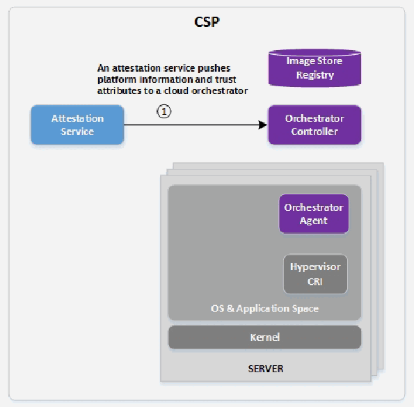
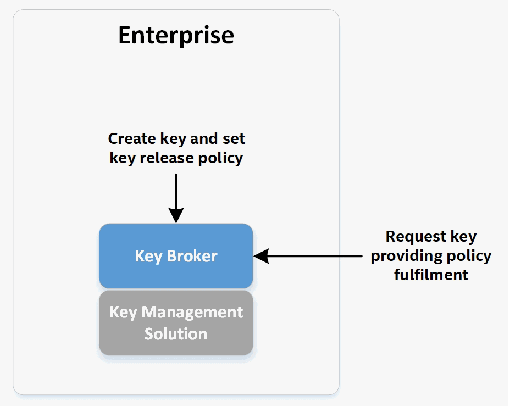
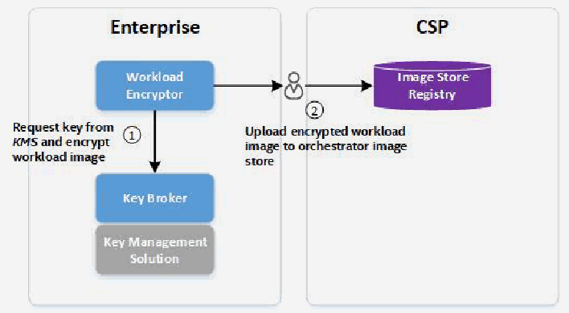

NIST IR 8320 日本語訳
英語タイトル : Hardware-Enabled Security: Enabling a Layered Approach to Platform Security for Cloud and Edge Computing Use Cases日本語タイトル : ハードウェア支援セキュリティ：クラウドおよびエッジコンピューティングのユースケースに向けた、プラットフォームセキュリティの階層的アプローチの実現
公開日 : 2022-05-04
原文URL : https://csrc.nist.gov/pubs/ir/8320/final
翻訳編集 : 自動生成（有志による非公式の日本語訳）, 原文取得日 : 2026-10-31, 訳文 : 898 / 898 ブロック
[要約] NIST IR 8320 は、クラウドデータセンターとエッジコンピューティングにおけるプラットフォームセキュリティとデータ保護を向上させることができる、ハードウェア支援セキュリティの技術とテクノロジーを説明する報告書です。データセンターやエッジコンピューティングのセキュリティ戦略の基盤は、データとワークロードが実行され、アクセスされるプラットフォームを保護することであるべきだとされ、物理プラットフォームはあらゆる階層的セキュリティアプローチの第 1 層に当たると位置づけられています。報告書は、プラットフォーム完全性の検証、ソフトウェア実行時の保護メカニズム、データ保護と機密コンピューティング、リモートアテステーションサービスを取り上げ、これらを活用するクラウドのユースケースシナリオを示します。本報告書は、技術の進歩や市販の実装・ソリューションの登場を反映するため、頻繁に更新される生きた文書となることを意図しています。
NIST IR 8320
NIST IR 8320
Hardware-Enabled Security:
ハードウェア支援セキュリティ:
Enabling a Layered Approach to Platform Security for Cloud and Edge Computing Use Cases
クラウドおよびエッジコンピューティングのユースケースに向けた、プラットフォームセキュリティの階層的アプローチの実現
Michael Bartock Murugiah Souppaya Ryan Savino Tim Knoll Uttam Shetty Mourad Cherfaoui Raghu Yeluri Akash Malhotra Don Banks Michael Jordan Dimitrios Pendarakis J. R. Rao Peter Romness Karen Scarfone
Michael Bartock Murugiah Souppaya Ryan Savino Tim Knoll Uttam Shetty Mourad Cherfaoui Raghu Yeluri Akash Malhotra Don Banks Michael Jordan Dimitrios Pendarakis J. R. Rao Peter Romness Karen Scarfone
This publication is available free of charge from: https://doi.org/10.6028/NIST.IR.8320
本刊行物は次の場所から無償で入手できます: https://doi.org/10.6028/NIST.IR.8320
NIST IR 8320
NIST IR 8320
Hardware-Enabled Security:
ハードウェア支援セキュリティ:
Enabling a Layered Approach to Platform Security for Cloud and Edge Computing Use Cases
クラウドおよびエッジコンピューティングのユースケースに向けた、プラットフォームセキュリティの階層的アプローチの実現
Michael Bartock
Murugiah Souppaya
Computer Security Division
Information Technology Laboratory
Michael Bartock
Murugiah Souppaya
コンピュータセキュリティ部門
情報技術研究所
Don Banks
Arm Architecture and Technology Group
San Jose, CA
Don Banks
Arm Architecture and Technology Group
San Jose, CA
Ryan Savino
Tim Knoll
Uttam Shetty
Mourad Cherfaoui
Raghu Yeluri
Intel Data Platforms Group
Santa Clara, CA
Ryan Savino
Tim Knoll
Uttam Shetty
Mourad Cherfaoui
Raghu Yeluri
Intel Data Platforms Group
Santa Clara, CA
Michael Jordan
Dimitrios Pendarakis
J. R. Rao
IBM Systems and IBM Research
Poughkeepsie and Yorktown Heights, NY
Michael Jordan
Dimitrios Pendarakis
J. R. Rao
IBM Systems and IBM Research
Poughkeepsie and Yorktown Heights, NY
Peter Romness
Cisco
McLean, VA
Peter Romness
Cisco
McLean, VA
Akash Malhotra
AMD Product Security and Strategy Group
Austin, TX
Akash Malhotra
AMD Product Security and Strategy Group
Austin, TX
Karen Scarfone
Scarfone Cybersecurity
Clifton, VA
Karen Scarfone
Scarfone Cybersecurity
Clifton, VA
This publication is available free of charge from: https://doi.org/10.6028/NIST.IR.8320
本刊行物は次の場所から無償で入手できます: https://doi.org/10.6028/NIST.IR.8320
May 2022
2022年5月
U.S. Department of Commerce Gina M. Raimondo, Secretary
米国商務省 Gina M. Raimondo 長官
National Institute of Standards and Technology Laurie E. Locascio, NIST Director and Under Secretary of Commerce for Standards and Technology
国立標準技術研究所 Laurie E. Locascio、NIST 所長兼商務次官（標準・技術担当）
National Institute of Standards and Technology Interagency or Internal Report 8320 94 pages (May 2022)
国立標準技術研究所 省庁間または内部報告書 8320 94ページ（2022年5月）
This publication is available free of charge from: https://doi.org/10.6028/NIST.IR.8320
本刊行物は次の場所から無償で入手できます: https://doi.org/10.6028/NIST.IR.8320
Certain commercial entities, equipment, or materials may be identified in this document in order to describe an experimental procedure or concept adequately. Such identification is not intended to imply recommendation or endorsement by NIST, nor is it intended to imply that the entities, materials, or equipment are necessarily the best available for the purpose.
本文書では、実験の手順や概念を適切に説明するために、特定の商業団体、機器、または資材を明示している場合があります。こうした明示は、NIST による推奨や支持を意図するものではなく、それらの団体、資材、または機器が目的に対して必ずしも最良であることを意味するものでもありません。
There may be references in this publication to other publications currently under development by NIST in accordance with its assigned statutory responsibilities. The information in this publication, including concepts and methodologies, may be used by federal agencies even before the completion of such companion publications. Thus, until each publication is completed, current requirements, guidelines, and procedures, where they exist, remain operative. For planning and transition purposes, federal agencies may wish to closely follow the development of these new publications by NIST.
本刊行物には、NIST が法令で定められた責務に従って現在策定中の他の刊行物への言及が含まれる場合があります。概念や方法論を含む本刊行物の情報は、そうした関連刊行物の完成前であっても、連邦機関が利用してもよいです。したがって、各刊行物が完成するまでは、現行の要件、ガイドライン、および手順が存在する場合には、それらが引き続き有効です。計画および移行のため、連邦機関は、NIST によるこれらの新しい刊行物の策定状況を注意深く追うことを検討してもよいです。
Organizations are encouraged to review all draft publications during public comment periods and provide feedback to NIST. Many NIST cybersecurity publications, other than the ones noted above, are available at https://csrc.nist.gov/publications.
組織は、パブリックコメント期間中にすべてのドラフト刊行物を確認し、NIST にフィードバックを提供することが推奨されます。上記以外の NIST のサイバーセキュリティ関連刊行物の多くは、https://csrc.nist.gov/publications で入手できます。
Submit comments on this publication to: hwsec@nist.gov
本刊行物へのコメントの送付先: hwsec@nist.gov
National Institute of Standards and Technology Attn: Applied Cybersecurity Division, Information Technology Laboratory 100 Bureau Drive (Mail Stop 2000) Gaithersburg, MD 20899-2000
National Institute of Standards and Technology Attn: Applied Cybersecurity Division, Information Technology Laboratory 100 Bureau Drive (Mail Stop 2000) Gaithersburg, MD 20899-2000
All comments are subject to release under the Freedom of Information Act (FOIA).
すべてのコメントは、情報自由法（FOIA）に基づき公開される場合があります。
Reports on Computer Systems Technology
コンピュータシステム技術に関する報告書
The Information Technology Laboratory (ITL) at the National Institute of Standards and Technology (NIST) promotes the U.S. economy and public welfare by providing technical leadership for the Nation’s measurement and standards infrastructure. ITL develops tests, test methods, reference data, proof of concept implementations, and technical analyses to advance the development and productive use of information technology. ITL’s responsibilities include the development of management, administrative, technical, and physical standards and guidelines for the cost-effective security and privacy of other than national security-related information in federal information systems.
国立標準技術研究所（NIST）の情報技術研究所（ITL）は、国家の測定・標準インフラストラクチャに関する技術的リーダーシップを提供することで、米国の経済と公共の福祉を促進しています。ITL は、情報技術の発展と生産的な利用を推進するため、テスト、テスト方法、参照データ、概念実証実装、および技術分析を開発しています。ITL の責務には、連邦情報システムにおける国家安全保障に関連しない情報のセキュリティとプライバシーを費用対効果の高い形で確保するための、管理上、運用上、技術上、および物理上の標準とガイドラインの策定が含まれます。
Abstract
概要
In today’s cloud data centers and edge computing, attack surfaces have shifted and, in some cases, significantly increased. At the same time, hacking has become industrialized, and most security control implementations are not coherent or consistent. The foundation of any data center or edge computing security strategy should be securing the platform on which data and workloads will be executed and accessed. The physical platform represents the first layer for any layered security approach and provides the initial protections to help ensure that higher-layer security controls can be trusted. This report explains hardware-enabled security techniques and technologies that can improve platform security and data protection for cloud data centers and edge computing.
今日のクラウドデータセンターとエッジコンピューティングでは、攻撃対象領域が変化し、場合によっては大幅に拡大しています。同時に、ハッキングは産業化しており、セキュリティ管理策の実装の大半は、一貫性や整合性を欠いています。データセンターやエッジコンピューティングのセキュリティ戦略の基盤は、データとワークロードが実行され、アクセスされるプラットフォームを保護することであるべきです。物理プラットフォームは、あらゆる階層的セキュリティアプローチの第 1 層に当たり、上位層のセキュリティ管理策を信頼できるものにするための最初の保護を提供します。本報告書は、クラウドデータセンターとエッジコンピューティングにおけるプラットフォームセキュリティとデータ保護を向上させることができる、ハードウェア支援セキュリティの技術とテクノロジーについて説明します。
Keywords
キーワード
confidential computing; container; hardware-enabled security; hardware security module (HSM); secure enclave; trusted execution environment (TEE); trusted platform module (TPM); virtualization.
機密コンピューティング、コンテナ、ハードウェア支援セキュリティ、ハードウェアセキュリティモジュール（HSM）、セキュアエンクレーブ、信頼実行環境（TEE）、トラステッドプラットフォームモジュール（TPM）、仮想化。
Disclaimer
免責事項
Any mention of commercial products or reference to commercial organizations is for information only; it does not imply recommendation or endorsement by NIST, nor does it imply that the products mentioned are necessarily the best available for the purpose.
商用製品への言及や商業組織への参照は情報提供のみを目的としており、NIST による推奨や支持を意味するものではなく、言及された製品が目的に対して必ずしも最良であることを意味するものでもありません。
Acknowledgments
謝辞
The authors thank everyone who contributed their time and expertise to the development of this report, including:
著者らは、本報告書の作成に時間と専門知識を提供してくださったすべての方々に感謝します。以下の方々が含まれます。
•From AMD: David Kaplan and Kathir Nadarajah
•AMD から: David Kaplan 氏および Kathir Nadarajah 氏
•From Arm: Yuval Elad, Nicholas Wood, Joanna Farley, Paul Howard, Dan Handley, Stuart Yoder, Erik Jacobson, and Mark Knight
•Arm から: Yuval Elad 氏、Nicholas Wood 氏、Joanna Farley 氏、Paul Howard 氏、Dan Handley 氏、Stuart Yoder 氏、Erik Jacobson 氏、Mark Knight 氏
•From Cisco: Jeff Schutt, Scott Phuong, Charlie Hsu, Timothy Wilson-Johnston, and Justin Salerno
•Cisco から: Jeff Schutt 氏、Scott Phuong 氏、Charlie Hsu 氏、Timothy Wilson-Johnston 氏、Justin Salerno 氏
•From IBM: Jonathan Bradbury, James Bottomley, Debapriya Chatterjee, Chris Engel, Ken Goldman, Guerney Hunt, Kathryn Ignaszewski, Hani Jamjoom, Elaine Palmer, Harmeet Singh, and Balaram Sinharoy
•IBM から: Jonathan Bradbury 氏、James Bottomley 氏、Debapriya Chatterjee 氏、Chris Engel 氏、Ken Goldman 氏、Guerney Hunt 氏、Kathryn Ignaszewski 氏、Hani Jamjoom 氏、Elaine Palmer 氏、Harmeet Singh 氏、Balaram Sinharoy 氏
•From Intel Corporation: Ravi Sahita, Alex Eydelberg, Sugumar Govindarajan, Kapil Sood, Jeanne Guillory, David Song, Scott Raynor, Scott Huang, Matthew Areno, Charlie Stark, Subomi Laditan, Kamal Natesan, Haidong Xia, Jerry Wheeler, Dhinesh Manoharan, and John Pennington
•Intel Corporation から: Ravi Sahita 氏、Alex Eydelberg 氏、Sugumar Govindarajan 氏、Kapil Sood 氏、Jeanne Guillory 氏、David Song 氏、Scott Raynor 氏、Scott Huang 氏、Matthew Areno 氏、Charlie Stark 氏、Subomi Laditan 氏、Kamal Natesan 氏、Haidong Xia 氏、Jerry Wheeler 氏、Dhinesh Manoharan 氏、John Pennington 氏
•From Red Hat: Luke Hinds and Mark Bohannon for contributing content related to Keylime
•Red Hat から: Keylime に関する内容を寄稿してくださった Luke Hinds 氏および Mark Bohannon 氏
Audience
想定読者
The primary audiences for this report are security professionals, such as security engineers and architects; system administrators and other information technology (IT) professionals for cloud service providers; and hardware, firmware, and software developers who may be able to leverage hardware-enabled security techniques and technologies to improve platform security for cloud data centers and edge computing.
本報告書の主な想定読者は、セキュリティエンジニアやアーキテクトなどのセキュリティ専門家、クラウドサービスプロバイダーのシステム管理者およびその他の情報技術（IT）専門家、そしてクラウドデータセンターとエッジコンピューティングのプラットフォームセキュリティを向上させるためにハードウェア支援セキュリティの技術とテクノロジーを活用できる可能性のある、ハードウェア、ファームウェア、およびソフトウェアの開発者です。
Trademark Information
商標情報
All registered trademarks or trademarks belong to their respective organizations.
登録商標または商標は、すべて各組織に帰属します。
Patent Disclosure Notice
特許開示に関する通知
NOTICE: ITL has requested that holders of patent claims whose use may be required for compliance with the guidance or requirements of this publication disclose such patent claims to ITL. However, holders of patents are not obligated to respond to ITL calls for patents and ITL has not undertaken a patent search in order to identify which, if any, patents may apply to this publication.
通知: ITL は、本刊行物のガイダンスまたは要件への準拠のために使用が必要となる可能性のある特許請求項の保有者に対し、当該特許請求項を ITL に開示するよう求めています。ただし、特許の保有者には ITL の特許に関する呼びかけに応じる義務はなく、ITL は、本刊行物に該当する特許がある場合にそれを特定するための特許調査を実施していません。
As of the date of publication and following call(s) for the identification of patent claims whose use may be required for compliance with the guidance or requirements of this publication, no such patent claims have been identified to ITL.
発行日の時点で、本刊行物のガイダンスまたは要件への準拠のために使用が必要となる可能性のある特許請求項の特定を求める呼びかけを行った結果、そのような特許請求項は ITL に対して特定されていません。
No representation is made or implied by ITL that licenses are not required to avoid patent infringement in the use of this publication.
本刊行物の利用に際して、特許侵害を避けるためのライセンスが不要であるという表明を、ITL は明示的にも黙示的にも行いません。
Table of Contents
目次
List of Appendices
付録一覧
List of Figures
図の一覧
1 Introduction
1 はじめに
In data centers and edge computing, there are three significant forces that impact security: (1) the introduction of billions of connected devices and increased adoption of the cloud have significantly increased attack surfaces; (2) hacking has become industrialized with sophisticated and evolving techniques to compromise data; and (3) solutions composed of multiple technologies from different vendors result in a lack of coherent and consistent implementations of security controls. Given these forces, the foundation for a data center or edge computing security strategy should have a consolidated approach to comprehensively secure entire systems, including hardware platforms, on which workloads and data are executed and accessed.
データセンターとエッジコンピューティングでは、セキュリティに影響を与える重要な要因が 3 つあります。(1) 数十億台の接続デバイスの登場とクラウドの採用拡大により、攻撃対象領域が大幅に拡大したこと、(2) ハッキングが産業化し、データを侵害するための高度で進化し続ける手法が使われていること、(3) 複数のベンダーの複数の技術で構成されるソリューションでは、セキュリティ管理策の実装に一貫性や整合性が欠けること、の 3 つです。これらの要因を踏まえると、データセンターやエッジコンピューティングのセキュリティ戦略の基盤には、ワークロードとデータが実行されアクセスされるハードウェアプラットフォームを含むシステム全体を包括的に保護する、統合されたアプローチが必要です。
In the scope of this document, the hardware platform is a server (e.g., application server, storage server, virtualization server) in a data center or edge compute facility. The server’s hardware platform, also called the server platform, represents the first part of the layered security approach. Hardware-enabled security—security with its basis in the hardware platform—can provide a stronger foundation than one offered by software or firmware, which has a larger attack surface and can be modified with relative ease. Hardware root of trust (RoT) can present a smaller attack surface if implemented with a small codebase. Existing security implementations can be enhanced by providing a base-layer, immutable hardware module that chains software and firmware verifications from the hardware all the way to the application space or specified security control. In that manner, existing security mechanisms can be trusted even more to accomplish their security goals without compromise, even when there is a lack of physical security or attacks originate from the software layer.
本文書の範囲では、ハードウェアプラットフォームとは、データセンターまたはエッジコンピューティング施設にあるサーバー（アプリケーションサーバー、ストレージサーバー、仮想化サーバーなど）を指します。サーバーのハードウェアプラットフォームはサーバープラットフォームとも呼ばれ、階層的セキュリティアプローチの第 1 の部分に当たります。ハードウェア支援セキュリティ、すなわちハードウェアプラットフォームを基盤とするセキュリティは、攻撃対象領域がより大きく比較的容易に改変できるソフトウェアやファームウェアによるものよりも、強固な基盤を提供できます。ハードウェアルートオブトラスト（RoT）は、小さなコードベースで実装すれば、攻撃対象領域を小さくできます。ハードウェアから、アプリケーション空間または特定のセキュリティ管理策に至るまで、ソフトウェアとファームウェアの検証を連鎖させる、基盤層の不変なハードウェアモジュールを備えることで、既存のセキュリティ実装を強化できます。このようにすれば、物理的なセキュリティが不十分な場合や、ソフトウェア層から攻撃が行われる場合でも、既存のセキュリティメカニズムをより一層信頼して、侵害されることなくセキュリティ目標を達成できます。
This report explains hardware-based security techniques and technologies that can improve server platform security and data protection for cloud data centers and edge computing. The rest of this report covers the following topics:
本報告書は、クラウドデータセンターとエッジコンピューティングにおけるサーバープラットフォームのセキュリティとデータ保護を向上させることができる、ハードウェアベースのセキュリティの技術とテクノロジーについて説明します。本報告書の以降の部分は、次のトピックを扱います。
•Section 2 provides an overview of hardware platform security.
•第 2 節では、ハードウェアプラットフォームセキュリティの概要を示します。
•Section 3 discusses the measurement and verification of platform integrity.
•第 3 節では、プラットフォーム完全性の測定と検証について論じます。
•Section 4 explores software runtime attacks and protection mechanisms.
•第 4 節では、ソフトウェアの実行時攻撃と保護メカニズムを探ります。
•Section 5 considers protecting data in use, also known as confidential computing.
•第 5 節では、機密コンピューティングとも呼ばれる、使用中のデータの保護を検討します。
•Section 6 examines remote attestation services, which can collate platform integrity measurements to aid in integrity verification.
•第 6 節では、プラットフォーム完全性の測定値を照合して完全性の検証を支援できる、リモートアテステーションサービスを検討します。
•Section 7 describes a number of cloud use case scenarios that take advantage of hardware-enabled security.
•第 7 節では、ハードウェア支援セキュリティを活用するクラウドのユースケースシナリオをいくつか説明します。
•Section 8 states the next steps for this report and how others can contribute.
•第 8 節では、本報告書の次のステップと、他の方が貢献する方法を示します。
•The References section lists the cited references for this report.
•「参考文献」の節では、本報告書で引用した参考文献を挙げます。
•Appendix A describes vendor-agnostic technology examples.
•付録 A では、ベンダー非依存の技術例を説明します。
•Appendices B through F describe technology examples from Intel, AMD, Arm, Cisco, and IBM, respectively.
•付録 B から F では、それぞれ Intel、AMD、Arm、Cisco、IBM の技術例を説明します。
•Appendix G lists the acronyms and abbreviations used in the report.
•付録 G では、本報告書で使用する頭字語と略語を挙げます。
•Appendix H provides a glossary of selected terms used in the report.
•付録 H では、本報告書で使用する用語の一部について用語集を示します。
As technology and security capabilities evolve, NIST is continuously seeking feedback from the community on the content of the report and soliciting additional technology example contributions from other companies.
技術とセキュリティ機能が進化する中で、NIST は、本報告書の内容について継続的にコミュニティからのフィードバックを求めるとともに、他の企業からの追加の技術例の寄稿を募っています。
Although this document does not address other platforms like laptops, desktops, mobile devices, or Internet of Things (IoT) devices, the practices in this report can be adapted to support those platforms and their associated use cases.
本文書は、ノートパソコン、デスクトップ、モバイルデバイス、モノのインターネット（IoT）デバイスなどの他のプラットフォームを扱いませんが、本報告書のプラクティスは、それらのプラットフォームと関連するユースケースを支援するように適応させることができます。
Please send your feedback and comments to hwsec@nist.gov.
フィードバックやコメントは hwsec@nist.gov にお送りください。
2 Hardware Platform Security Overview
2 ハードウェアプラットフォームセキュリティの概要
The data center threat landscape has evolved in recent years to encompass more advanced attack surfaces with more persistent attack mechanisms. With increased attention being applied to high-level software security, attackers are pushing lower in the platform stack, forcing security administrators to address a variety of attacks that threaten the platform firmware and hardware. These threats can result in:
近年、データセンターの脅威の状況は進化し、より高度な攻撃対象領域と、より持続的な攻撃メカニズムを含むものとなっています。高レベルのソフトウェアセキュリティに注目が集まるにつれ、攻撃者はプラットフォームスタックのより低い層へと攻撃を進めており、セキュリティ管理者は、プラットフォームのファームウェアやハードウェアを脅かすさまざまな攻撃に対処することを迫られています。これらの脅威により、次のような事態が起こり得ます。
•Unauthorized access to and potential extraction of sensitive platform or user data, including direct physical access to dual in-line memory modules (DIMMs)
•機密性の高いプラットフォームデータやユーザーデータへの不正アクセスと、その抽出の可能性（デュアルインラインメモリモジュール（DIMM）への直接の物理アクセスを含む）
•Modification of platform firmware, such as that belonging to the Unified Extensible Firmware Interface (UEFI)/Basic Input/Output System (BIOS), Board Management Controller (BMC), Manageability Engine (ME), Peripheral Component Interconnect Express (PCIe) device, and various accelerator cards
•プラットフォームファームウェアの改変（Unified Extensible Firmware Interface（UEFI）/Basic Input/Output System（BIOS）、Board Management Controller（BMC）、Manageability Engine（ME）、Peripheral Component Interconnect Express（PCIe）デバイス、各種アクセラレーターカードのファームウェアなど）
•Supply chain interception through the physical replacement of firmware or hardware with malicious versions
•ファームウェアやハードウェアを悪意あるバージョンに物理的にすり替えることによるサプライチェーンの傍受
•Access to data or execution of code outside of regulated geopolitical or other boundaries
•規制上の地政学的境界やその他の境界の外にあるデータへのアクセスや、その境界の外でのコードの実行
•Circumvention of software and/or firmware-based security mechanisms
•ソフトウェアまたはファームウェアベースのセキュリティメカニズムの回避
For example, LoJax, discovered in August 2018, manifests itself in UEFI malware, allowing it to continuously persist in the firmware layer despite operating system (OS) reinstallations, and thus remain invisible to standard kernel-based virus scans [1]. These attacks can be devastating to cloud environments because they often require server-by-server rebuilds or replacements, which can take weeks. Although still rare, these attacks are increasing as attackers become more sophisticated.
たとえば、2018 年 8 月に発見された LoJax は、UEFI マルウェアとして現れ、オペレーティングシステム（OS）を再インストールしてもファームウェア層に存続し続けるため、標準的なカーネルベースのウイルススキャンでは検知されないままとなります [1]。こうした攻撃は、サーバーごとの再構築や交換が必要となることが多く、それには数週間かかる場合があるため、クラウド環境に壊滅的な影響を及ぼす可能性があります。まだまれではあるものの、攻撃者が高度化するにつれて、こうした攻撃は増加しています。
Workloads subject to specific regulations or containing sensitive data present additional security challenges for multi-tenant clouds. While virtualization and containers significantly benefit efficiency, adaptability, and scalability, these technologies consolidate workloads onto fewer physical platforms and introduce the dynamic migration of workloads and data across platforms. Consequently, cloud adoption results in a loss of customer visibility and control over the platforms that host virtualized workloads and data, and introduces the usage of third-party infrastructure administrators. Cloud providers and cloud adopters follow a shared responsibility model, where each party has responsibility for different aspects of the overall implementation. Cloud providers can expose information related to infrastructure security and platform capability in order to provide their tenants with security assurances. Furthermore, cloud providers often have data centers that span multiple geopolitical boundaries, subjecting workload owners to complicated legal and regulatory compliance requirements from multiple countries. Hybrid cloud architectures, in particular, utilize multiple infrastructure providers, each with its own infrastructure configurations and management.
特定の規制の対象となるワークロードや機微なデータを含むワークロードは、マルチテナントクラウドにとって追加のセキュリティ上の課題となります。仮想化とコンテナは、効率、適応性、スケーラビリティに大きな利点をもたらしますが、これらの技術はワークロードをより少ない物理プラットフォームに集約し、プラットフォーム間でのワークロードとデータの動的な移行をもたらします。その結果、クラウドの採用により、仮想化されたワークロードとデータをホストするプラットフォームに対する顧客の可視性と制御が失われ、第三者のインフラストラクチャ管理者を利用することになります。クラウドプロバイダーとクラウド採用者は責任共有モデルに従い、各当事者が実装全体のうち異なる側面に責任を負います。クラウドプロバイダーは、テナントにセキュリティの保証を提供するために、インフラストラクチャのセキュリティやプラットフォームの機能に関する情報を公開できます。さらに、クラウドプロバイダーのデータセンターは複数の地政学的境界にまたがることが多く、ワークロードの所有者は複数の国からの複雑な法規制遵守要件の対象となります。特にハイブリッドクラウドアーキテクチャでは複数のインフラストラクチャプロバイダーを利用し、それぞれが独自のインフラストラクチャ構成と管理を持っています。
Without physical control over or use of confidential computing features or visibility into platform configurations, conventional security best practices and regulatory requirements become difficult or impossible to implement. With regulatory structures like the General Data Protection Regulation (GDPR) introducing high-stakes fines for noncompliance, having visibility and control over where data may be accessed is more important than ever before. Top concerns among security professionals include the protection of workloads from general security risks, the loss or exposure of data in the event of a data breach, and regulatory compliance.
機密コンピューティング機能の物理的な制御や利用、あるいはプラットフォーム構成の可視性がなければ、従来のセキュリティのベストプラクティスや規制要件を実施することは困難または不可能になります。一般データ保護規則（GDPR）のような規制の枠組みが、違反に対する高額の罰金を導入しているため、データがどこでアクセスされ得るかを可視化し、制御することは、これまで以上に重要です。セキュリティ専門家の最大の懸念事項には、一般的なセキュリティリスクからのワークロードの保護、データ侵害時のデータの喪失または漏えい、そして規制遵守があります。
Existing mitigations of threats against cloud servers are often rooted in firmware or software, making them vulnerable to the same attack strategies. For example, if the firmware can be successfully exploited, the firmware-based security controls can most likely be circumvented in the same fashion. Hardware-enabled security techniques can help mitigate these threats by establishing and maintaining platform trust—an assurance in the integrity of the underlying platform configuration, including hardware, firmware, and software. By providing this assurance, security administrators can gain a level of visibility and control over where access to sensitive workloads and data is permitted. Platform security technologies that establish platform trust can provide notification or even self-correction of detected integrity failures. Platform configurations can automatically be reverted back to a trusted state and give the platform resilience against attack.
クラウドサーバーに対する脅威の既存の緩和策は、ファームウェアやソフトウェアに根ざしていることが多く、同じ攻撃戦略に対して脆弱です。たとえば、ファームウェアが悪用されれば、ファームウェアベースのセキュリティ管理策も同様の方法で回避される可能性が高くなります。ハードウェア支援セキュリティの技術は、プラットフォームの信頼、すなわちハードウェア、ファームウェア、ソフトウェアを含む基盤となるプラットフォーム構成の完全性に対する保証を確立し維持することで、こうした脅威の緩和に役立ちます。この保証を提供することで、セキュリティ管理者は、機微なワークロードやデータへのアクセスをどこで許可するかについて、一定のレベルの可視性と制御を得られます。プラットフォームの信頼を確立するプラットフォームセキュリティ技術は、検出した完全性の障害を通知したり、自己修復したりすることもできます。プラットフォーム構成を自動的に信頼できる状態に戻すことができ、プラットフォームに攻撃への耐性を与えます。
To achieve the necessary security controls, an RoT can be leveraged as a starting point that is implicitly trusted. Hardware-based controls can provide a foundation for establishing platform integrity assurances. Combining these functions with a means of producing verifiable evidence that these integrity controls are in place and have been executed successfully is the basis of creating a trusted platform. Minimizing the footprint of this RoT translates to reducing the number of modules or technologies that must be implicitly trusted. This substantially reduces the attack surface.
必要なセキュリティ管理策を実現するために、暗黙的に信頼される起点として RoT を活用できます。ハードウェアベースの管理策は、プラットフォーム完全性の保証を確立するための基盤を提供できます。これらの機能と、これらの完全性管理策が実施され正常に実行されたことを示す検証可能な証拠を作成する手段とを組み合わせることが、信頼されたプラットフォームを作る基礎となります。この RoT のフットプリントを最小化することは、暗黙的に信頼しなければならないモジュールや技術の数を減らすことにつながります。これにより、攻撃対象領域が大幅に縮小します。
Platforms that secure their underlying firmware and configuration provide the opportunity for trust to be extended higher in the software stack. Verified platform firmware can, in turn, verify the OS boot loader, which can then verify other software components all the way up to the OS itself and the hypervisor or container runtime layers. The transitive trust described here is consistent with the concept of the chain of trust (CoT)—a method where each software module in a system boot process is required to measure the next module before transitioning control.
基盤となるファームウェアと構成を保護するプラットフォームは、信頼をソフトウェアスタックのより上位へ拡張する機会を提供します。検証されたプラットフォームファームウェアは、OS ブートローダーを検証でき、ブートローダーは、OS 自体、およびハイパーバイザーやコンテナランタイムの層に至るまで、他のソフトウェアコンポーネントを検証できます。ここで説明する推移的な信頼は、信頼の連鎖（CoT）の概念と整合します。これは、システムのブートプロセスにおける各ソフトウェアモジュールが、制御を移す前に次のモジュールを測定することを求められる方法です。
Rooting platform integrity and trust in hardware security controls can strengthen and complement the extension of the CoT into the dynamic software category. There, the CoT can be extended even further to include data and workload protection. Hardware-based protections through CoT technology mechanisms can form a layered security strategy to protect data and workloads as they move to multi-tenant environments in a cloud data center or edge computing facility.
プラットフォームの完全性と信頼をハードウェアのセキュリティ管理策に根ざすことで、CoT を動的なソフトウェアの分野へ拡張することを強化し、補完できます。そこでは、CoT をさらに拡張して、データとワークロードの保護を含めることができます。CoT 技術のメカニズムを通じたハードウェアベースの保護は、クラウドデータセンターやエッジコンピューティング施設のマルチテナント環境へ移動するデータとワークロードを保護する、階層的セキュリティ戦略を形成できます。
In addition, there are other hardware platform security technologies that can protect data at rest, in transit, and in use by providing hardware-accelerated disk encryption or encryption-based memory isolation. Many of these capabilities can help mitigate threats from speculative execution and side-channel attacks. By using hardware to perform these tasks, the attack surface is mitigated, preventing direct access or modification of the required firmware. Isolating these encryption mechanisms to dedicated hardware can allow performance to be addressed and enhanced separately from other system processes as well. An example of hardware-based isolation is discussed later in the document.
このほかにも、ハードウェアアクセラレーションによるディスク暗号化や、暗号化に基づくメモリ分離を提供することで、保存中、転送中、使用中のデータを保護できるハードウェアプラットフォームセキュリティ技術があります。これらの機能の多くは、投機的実行やサイドチャネル攻撃による脅威の緩和に役立ちます。これらの作業にハードウェアを用いることで、攻撃対象領域が緩和され、必要なファームウェアへの直接のアクセスや改変が防止されます。これらの暗号化メカニズムを専用ハードウェアに分離することで、性能面の対処や強化を、他のシステムプロセスとは別に行えるようにもなります。ハードウェアベースの分離の例については、本文書の後半で論じます。
3 Platform Integrity Verification
3 プラットフォーム完全性の検証
A key concept of trusted computing is verification of the underlying platform’s integrity. Platform integrity is typically comprised of two parts:
トラステッドコンピューティングの重要な概念は、基盤となるプラットフォームの完全性の検証です。プラットフォームの完全性は、通常、次の 2 つの部分で構成されます。
•Cryptographic measurement of software and firmware. In this report, the term measurement refers to calculating a cryptographic hash of a software or firmware executable, configuration file, or other entity. If there is any change in an entity, a new measurement will result in a different hash value than the original [2]. By measuring software and firmware prior to execution, the integrity of the measured modules and configurations can be validated before the platform launches or before data or workloads are accessed. These measurements can also act as cryptographic proof for compliance audits.
•ソフトウェアとファームウェアの暗号学的測定。本報告書では、測定という用語は、ソフトウェアまたはファームウェアの実行ファイル、構成ファイル、その他のエンティティの暗号学的ハッシュを計算することを指します。エンティティに何らかの変更があれば、新たな測定は元のハッシュ値とは異なるハッシュ値になります [2]。実行前にソフトウェアとファームウェアを測定することで、プラットフォームが起動する前、またはデータやワークロードにアクセスする前に、測定されたモジュールと構成の完全性を検証できます。これらの測定値は、コンプライアンス監査における暗号学的な証明としても機能します。
•Firmware and configuration verification. When firmware and configuration measurements are made, local or remote attestations can be performed to verify if the desired firmware is actually running and if the configurations are authorized [3]. Attestation can also serve as the foundation for further policy decisions that fulfill various cloud security use case implementations. For instance, encryption keys can be released to client workloads if a proof is performed that the platform is trusted and in compliance with policies.
•ファームウェアと構成の検証。ファームウェアと構成の測定が行われると、ローカルまたはリモートのアテステーションを実施して、意図したファームウェアが実際に動作しているか、構成が認可されているかを検証できます [3]。アテステーションは、さまざまなクラウドセキュリティのユースケース実装を満たすさらなるポリシー決定の基盤にもなります。たとえば、プラットフォームが信頼でき、ポリシーに準拠していることの証明が行われた場合に、暗号鍵をクライアントのワークロードへ解放できます。
In some cases, a third part is added to platform integrity:
場合によっては、プラットフォームの完全性に 3 つ目の部分が加わります。
•Firmware and configuration recovery. If the verification step fails (i.e., the attestations do not match the expected measurements), the firmware and configuration can automatically be recovered to a known good state, such as rolling back firmware to a trusted version. The process by which these techniques are implemented affects the overall strength of the assertion that the measured and verified components have not been accidentally altered or maliciously tampered. Recovery technologies allow platforms to maintain resiliency against firmware attacks and accidental provisioning mistakes [4].
•ファームウェアと構成の復旧。検証の段階が失敗した場合（すなわち、アテステーションが期待される測定値と一致しない場合）、ファームウェアと構成を、既知の正常な状態に自動的に復旧できます。たとえば、ファームウェアを信頼できるバージョンにロールバックします。これらの技術を実装するプロセスは、測定および検証されたコンポーネントが誤って変更されたり、悪意を持って改ざんされたりしていないという主張の全体的な強度に影響します。復旧技術により、プラットフォームは、ファームウェアへの攻撃や、誤ったプロビジョニングに対するレジリエンスを維持できます [4]。
There are many ways to measure platform integrity. Most technologies center around the aforementioned concept of the CoT. In many cases, a hardware security module is used to store measurement data to be attested at a later point in time. The rest of this section discusses hardware security modules and various CoT technology implementations.
プラットフォームの完全性を測定する方法は数多くあります。ほとんどの技術は、前述の CoT の概念を中心としています。多くの場合、後の時点でアテステーションを行う測定データを格納するために、ハードウェアセキュリティモジュールが使われます。本節の以降の部分では、ハードウェアセキュリティモジュールと、さまざまな CoT 技術の実装について論じます。
3.1 Hardware Security Module (HSM)
3.1 ハードウェアセキュリティモジュール（HSM）
A hardware security module (HSM) is “a physical computing device that safeguards and manages cryptographic keys and provides cryptographic processing” [5]. Cryptographic operations such as encryption, decryption, and signature generation/verification are typically hosted on the HSM device, and many implementations provide hardware-accelerated mechanisms for cryptographic operations.
ハードウェアセキュリティモジュール（HSM）とは、「暗号鍵を保護および管理し、暗号処理を提供する物理的なコンピューティングデバイス」です [5]。暗号化、復号、署名の生成・検証などの暗号操作は、通常 HSM デバイス上で実行され、多くの実装が、暗号操作のためのハードウェアアクセラレーションのメカニズムを提供します。
A trusted platform module (TPM) is a special type of HSM that can generate cryptographic keys and protect small amounts of sensitive information, such as passwords, cryptographic keys, and cryptographic hash measurements. [3] The TPM is a standalone device that can be integrated with server platforms, client devices, and other products. One of the main use cases of a TPM is to store digest measurements of platform firmware and configuration during the boot process. Each firmware module is measured by generating a digest, which is then extended to a TPM platform configuration register (PCR). Multiple firmware modules can be extended to the same PCR, and platform-specific specifications like the Trusted Computing Group (TCG) PC Client Platform Firmware Profile provide guidelines for which firmware measurements are encompassed by each PCR [6].
トラステッドプラットフォームモジュール（TPM）は、HSM の特別な種類であり、暗号鍵を生成し、パスワード、暗号鍵、暗号学的ハッシュの測定値などの少量の機微な情報を保護できます [3]。TPM は、サーバープラットフォーム、クライアントデバイス、その他の製品に統合できるスタンドアロンのデバイスです。TPM の主なユースケースの 1 つは、ブートプロセス中に、プラットフォームのファームウェアと構成のダイジェスト測定値を格納することです。各ファームウェアモジュールは、ダイジェストを生成することで測定され、そのダイジェストは TPM の platform configuration register（PCR）に拡張されます。複数のファームウェアモジュールを同じ PCR に拡張でき、Trusted Computing Group（TCG）の PC Client Platform Firmware Profile のようなプラットフォーム固有の仕様が、各 PCR が対象とするファームウェア測定値についてのガイドラインを示しています [6]。
TPMs also host functionality to generate binding and signing keys that are unique per TPM and stored within the TPM non-volatile random-access memory (NVRAM). The private portion of this key pair is decrypted inside the TPM, making it only accessible by the TPM hardware or firmware. This can create a unique relationship between the keys generated within a TPM and a platform system, restricting private key operations to the platform firmware that has ownership and access to the specified TPM. Binding keys are used for encryption/decryption of data, while signing keys are used to generate/verify cryptographic signatures. The TPM provides a random number generator (RNG) as a protected capability with no access control. This RNG is used in critical cryptographic functionality as an entropy source for nonces, key generation, and randomness in signatures [6].
TPM は、TPM ごとに一意で、TPM の不揮発性ランダムアクセスメモリ（NVRAM）内に格納される、バインディング鍵と署名鍵を生成する機能も備えています。この鍵ペアの秘密鍵の部分は TPM 内部で復号されるため、TPM のハードウェアまたはファームウェアだけがアクセスできます。これにより、TPM 内で生成された鍵とプラットフォームシステムとの間に一意の関係を築き、秘密鍵の操作を、指定された TPM の所有権とアクセス権を持つプラットフォームファームウェアに限定できます。バインディング鍵はデータの暗号化・復号に使われ、署名鍵は暗号署名の生成・検証に使われます。TPM は、アクセス制御のない保護された機能として、乱数生成器（RNG）を提供します。この RNG は、重要な暗号機能において、ナンス、鍵生成、署名におけるランダム性のためのエントロピー源として使われます [6]。
There are two versions of TPMs: 1.2 and 2.0. The 2.0 version supports additional security features and algorithms [6]. TPMs also meet the National Institute of Standards and Technology (NIST) Federal Information Processing Standard (FIPS) 140 validation criteria and support NIST-approved cryptographic algorithms [7].
TPM には 1.2 と 2.0 の 2 つのバージョンがあります。2.0 版は、追加のセキュリティ機能とアルゴリズムをサポートしています [6]。また、TPM は、米国国立標準技術研究所（NIST）の連邦情報処理標準（FIPS）140 の検証基準を満たし、NIST が承認した暗号アルゴリズムをサポートしています [7]。
3.2 The Chain of Trust (CoT)
3.2 信頼の連鎖（CoT）
The chain of trust (CoT) is a method for maintaining valid trust boundaries by applying a principle of transitive trust. Each firmware module in the system boot process is required to measure the next module before transitioning control. Once a firmware module measurement is made, it is recommended to immediately extend the measurement value to a root of trust for storage, such as an HSM register, for attestation at a later point in time [6]. The CoT can be extended further into the application domain, allowing for files, directories, devices, peripherals, etc. to be measured and attested.
信頼の連鎖（CoT）とは、推移的信頼の原則を適用することで、有効な信頼境界を維持する方法です。システムのブートプロセスにおける各ファームウェアモジュールは、制御を移す前に次のモジュールを測定することが求められます。ファームウェアモジュールの測定が行われたら、後の時点でアテステーションを行うために、ただちにその測定値を、HSM のレジスターなどのストレージ用ルートオブトラストに拡張すべきです [6]。CoT はアプリケーション領域にさらに拡張でき、ファイル、ディレクトリ、デバイス、周辺機器などを測定し、アテステーションを行えるようになります。
Every CoT starts with an RoT module. It can be composed of different hardware and firmware components. For several platform integrity technologies, the RoT core firmware module is rooted in immutable read-only memory (ROM) code. However, not all technologies define their RoTs in this manner [6]. The RoT is typically separated into components that verify and measure. The core RoT for verification (CRTV) is responsible for verifying the first component before control is passed to it. The core RoT for measurement (CRTM) is the first component that is executed in the CoT and extends the first measurement to the TPM. The CRTM can be divided into a static portion (SCRTM) and dynamic portion (DCRTM). The SCRTM is composed of elements that measure firmware at system boot time, creating an unchanging set of measurements that will remain consistent across reboots except for volatile attributes like date and time. The DCRTM allows a CoT to be established without rebooting the system, permitting the RoT for measurement to be reestablished dynamically.
すべての CoT は RoT モジュールから始まります。RoT モジュールは、さまざまなハードウェアとファームウェアのコンポーネントで構成できます。いくつかのプラットフォーム完全性技術では、RoT のコアファームウェアモジュールは、不変の読み取り専用メモリ（ROM）コードに根ざしています。ただし、すべての技術が RoT をこのように定義しているわけではありません [6]。RoT は通常、検証を行うコンポーネントと測定を行うコンポーネントに分けられます。検証用コア RoT（CRTV）は、最初のコンポーネントに制御を渡す前に、そのコンポーネントを検証する役割を担います。測定用コア RoT（CRTM）は、CoT で最初に実行されるコンポーネントであり、最初の測定値を TPM に拡張します。CRTM は、静的部分（SCRTM）と動的部分（DCRTM）に分けられます。SCRTM は、システムのブート時にファームウェアを測定する要素で構成され、日付や時刻のような揮発性の属性を除いて、再起動しても一貫した、変化しない測定値の集合を作ります。DCRTM により、システムを再起動せずに CoT を確立でき、測定用の RoT を動的に再確立できます。
An RoT that is built with hardware protections will be more difficult to change, while an RoT that is built solely in firmware can be flashed and modified. An immutable hardware RoT possesses the risk of not being able to be patched. The goal should be to keep the RoT as small as possible. In the context of this publication, firmware is a specific class of computer software that provides the low-level control for a device’s specific hardware.
ハードウェアによる保護を備えて構築された RoT は変更がより困難になりますが、ファームウェアだけで構築された RoT は、フラッシュして変更できます。不変のハードウェア RoT には、パッチを適用できないというリスクがあります。RoT をできるだけ小さく保つことを目標とすべきです。本刊行物の文脈では、ファームウェアとは、デバイス固有のハードウェアに対する低レベルの制御を提供する、コンピュータソフトウェアの特定の種類を指します。
Various platform integrity technologies build their own CoTs. Please refer to the following technology examples in the appendices for more information:
さまざまなプラットフォーム完全性技術が、それぞれ独自の CoT を構築しています。詳細については、付録の次の技術例を参照してください。
•UEFI Secure Boot (SB)
•UEFI セキュアブート（SB）
•Intel Trusted Execution Technology (TXT)
•Intel Trusted Execution Technology（TXT）
•Intel Boot Guard
•Intel Boot Guard
•Intel Platform Firmware Resilience (PFR)
•Intel Platform Firmware Resilience（PFR）
•Intel Technology Example Summary
•Intel の技術例のまとめ
•AMD Platform Secure Boot (AMD PSB)
•AMD Platform Secure Boot（AMD PSB）
•Arm TrustZone Trusted Execution Environment (TEE) for Armv8-A
•Armv8-A 向け Arm TrustZone 信頼実行環境（TEE）
•Arm Secure Boot and the Chain of Trust (CoT)
•Arm セキュアブートと信頼の連鎖（CoT）
•Cisco Platform Roots of Trust
•Cisco プラットフォームのルートオブトラスト
•IBM Chain of Trust (CoT)
•IBM の信頼の連鎖（CoT）
3.3 Supply Chain Protection
3.3 サプライチェーンの保護
Organizations are increasingly at risk of supply chain compromise, whether intentional or unintentional. Managing cyber supply chain risks requires, in part, ensuring the integrity, quality, and resilience of the supply chain, its products, and its services. Cyber supply chain risks may include counterfeiting, unauthorized production, tampering, theft, and insertion of malicious or otherwise unexpected software and hardware, as well as poor manufacturing and development practices in the cyber supply chain [8] [9] [10].
組織は、意図的か否かを問わず、サプライチェーンの侵害のリスクにますますさらされています。サイバーサプライチェーンのリスクを管理するには、その一環として、サプライチェーン、その製品、およびサービスの完全性、品質、レジリエンスを確保する必要があります。サイバーサプライチェーンのリスクには、偽造、無許可の製造、改ざん、窃取、悪意のある、あるいはその他の予期しないソフトウェアやハードウェアの挿入のほか、サイバーサプライチェーンにおける不十分な製造・開発プラクティスが含まれる場合があります [8] [9] [10]。
Special technologies have been developed to help ascertain the authenticity and integrity of platform hardware, including its firmware and configuration. These technologies help ensure that platforms are not tampered with or altered from the time that they are assembled at the manufacturer site to the time that they arrive at a customer data center ready for installation. Verification of these platform attributes is one aspect of securing the supply chain.1 Some technologies include an additional feature for locking the boot process or access to these platforms until a secret is provided that only the customer and manufacturer know.
ファームウェアと構成を含むプラットフォームハードウェアの真正性と完全性を確認するための特別な技術が開発されています。これらの技術は、プラットフォームが製造者の拠点で組み立てられてから、設置の準備が整った状態で顧客のデータセンターに到着するまでの間に、改ざんや変更が行われていないことを確保するのに役立ちます。これらのプラットフォーム属性の検証は、サプライチェーンを保護する一つの側面です。1一部の技術には、顧客と製造者だけが知るシークレットが提供されるまで、ブートプロセスやこれらのプラットフォームへのアクセスをロックする追加機能が含まれています。
Please refer to the following technology examples in the appendices for more information:
詳細については、付録の次の技術例を参照してください。
•Intel Transparent Supply Chain (TSC)
•Intel Transparent Supply Chain（TSC）
•Intel PFR with Protection in Transit (PIT)
•Protection in Transit（PIT）を備えた Intel PFR
•Cisco Supply Chain Protection
•Cisco のサプライチェーン保護
4 Software Runtime Protection Mechanisms
4 ソフトウェア実行時の保護メカニズム
This section describes various software runtime attacks and protection mechanisms.
本節では、さまざまなソフトウェアの実行時攻撃と保護メカニズムについて説明します。
4.1 Return Oriented Programming (ROP) and Call/Jump Oriented Programming (COP/JOP) Attacks
4.1 リターン指向プログラミング（ROP）およびコール/ジャンプ指向プログラミング（COP/JOP）攻撃
ROP attacks focus on utilizing buffer overflows and targeted memory overwrites of return addresses in the stack. Attackers redirect return flows by corrupting addresses on the data stack to be locations in already-executable code. These small selected sequences of code called gadgets result in malicious modifications to the system or the invocation of normally unauthorized operations. A common example is a call to the shell executable within the system interface [11].
ROP 攻撃は、バッファオーバーフローと、スタック内のリターンアドレスに対する標的を絞ったメモリ上書きを利用することに重点を置きます。攻撃者は、データスタック上のアドレスを破壊して、すでに実行可能なコード内の場所を指すようにすることで、リターンフローを書き換えます。ガジェットと呼ばれる、選択されたこれらの短いコード列によって、システムへの悪意ある改変や、通常は認可されない操作の呼び出しが行われます。一般的な例は、システムインターフェース内のシェル実行ファイルの呼び出しです [11]。
COP/JOP attacks are similar to ROP attacks, relying on gadget building blocks. They target indirect jump instructions at the end of a gadget, many of which are intentionally emitted by the compiler. However, a jump gadget performs a one-directional control flow transfer to its target, as opposed to ROP, where gadgets return control back to the stack. This can make it difficult for attackers to regain control after executing their gadgets, but solutions to this problem, such as the one presented in [11], are beginning to appear.
COP/JOP 攻撃は ROP 攻撃に似ており、ガジェットという構成要素に依存します。この攻撃は、ガジェットの末尾にある間接ジャンプ命令を標的とします。その多くは、コンパイラーが意図的に生成したものです。ただし、ROP ではガジェットが制御をスタックに戻すのに対し、ジャンプガジェットは標的への一方向の制御フロー移行を行います。このため、攻撃者がガジェットの実行後に制御を取り戻すことは難しくなりますが、[11] で示されているような、この問題への解決策が現れ始めています。
Applications can utilize a parallel stack, known as the shadow stack, to help mitigate software attacks that attempt to modify the control flow. Utilizing special hardware, the shadow stack is used to store a copy of return addresses; the address is checked against the normal program stack on return operations. If the content differs, an exception is generated, which can help prevent malicious code from gaining control of the system with techniques such as ROP. In this way, shadow stack hardware can help mitigate some of the most common and exploitable types of software bugs.
アプリケーションは、制御フローを変更しようとするソフトウェア攻撃の緩和に役立てるため、シャドウスタックと呼ばれる並列スタックを利用できます。シャドウスタックは、特別なハードウェアを利用してリターンアドレスのコピーを格納し、リターン操作の際に、そのアドレスを通常のプログラムスタックと照合します。内容が異なる場合は例外が発生し、ROP などの手法によって悪意あるコードがシステムの制御を獲得するのを防ぐのに役立ちます。このように、シャドウスタックのハードウェアは、ソフトウェアのバグのうち最も一般的で悪用可能な種類のいくつかを緩和するのに役立ちます。
Several defenses and preventative measures have been developed within industry to accommodate ROP and COP/JOP attacks, including:
ROP および COP/JOP 攻撃に対応するため、業界ではいくつかの防御策と予防策が開発されています。次のものがあります。
•Intel Control-Flow Enforcement Technology (Intel CET)
•Intel Control-Flow Enforcement Technology（Intel CET）
•Arm Pointer Authentication Code (PAC)
•Arm Pointer Authentication Code（PAC）
•Arm Branch Target Identification (BTI)
•Arm Branch Target Identification（BTI）
•IBM ROP and COP/JOP Attack Defenses
•IBM の ROP および COP/JOP 攻撃への防御
4.2 Address Translation Attacks
4.2 アドレス変換攻撃
Commodity OSs rely on virtual memory protection models enabled via paging enforced by the processor memory management unit (MMU). OSs isolate process and kernel memory using page tables managed by systems software, with access permissions such as user/supervisor and read/write/execute (RWX). Process and kernel memory accesses are via virtual addresses that are mapped to physical memory addresses via address translation structures. These structures used for address translation are critical to enforcing the isolation model.
汎用の OS は、プロセッサーのメモリ管理ユニット（MMU）が強制するページングによって実現される、仮想メモリ保護モデルに依存しています。OS は、システムソフトウェアが管理するページテーブルを使って、ユーザー/スーパーバイザーや読み取り/書き込み/実行（RWX）などのアクセス権限により、プロセスメモリとカーネルメモリを分離します。プロセスメモリとカーネルメモリへのアクセスは仮想アドレスを介して行われ、仮想アドレスはアドレス変換構造によって物理メモリアドレスにマッピングされます。アドレス変換に使われるこれらの構造は、分離モデルを強制するうえで極めて重要です。
Modern OSs are single address space kernels (as opposed to micro-kernels), which provide good performance but have a large attack surface. A vulnerability in the kernel or driver can be leveraged to escalate privileges of a malicious process. Kernel read/write (RW) primitives can be leveraged with Write-What-Where vulnerabilities exploited from flaws discovered in kernel code and/or drivers.
現代の OS は、（マイクロカーネルではなく）単一アドレス空間のカーネルであり、性能は良好ですが、攻撃対象領域が大きくなります。カーネルやドライバーの脆弱性を利用して、悪意あるプロセスの権限を昇格させることができます。カーネルコードやドライバーの欠陥を悪用して発見された Write-What-Where 脆弱性を通じて、カーネルの読み取り/書き込み（RW）プリミティブを活用できます。
Heuristic defense mechanisms such as Page Table randomization can be bypassed with information leaks achieved via malicious RW primitives. Such information leaks are performed by chaining together a set of system calls (syscalls). For example, one syscall can allocate RWX pool memory, and a second can exploit an arbitrary memory write to overwrite the address translation structures. Two types of attacks can utilize this methodology for nefarious purposes. First, an attacker can redirect a virtual address in use to attacker-controlled contents (many times set up in user-space memory). Second, an attacker can create a malicious alias mapping that references desired physical memory with attacker-chosen permissions (e.g., RW access to a page via an alias mapping that was originally read-only). It is important for address translation protection mechanisms to block both of these types of attacks.
ページテーブルのランダム化のようなヒューリスティックな防御メカニズムは、悪意ある RW プリミティブによって得られる情報漏えいによって回避される可能性があります。こうした情報漏えいは、一連のシステムコール（syscalls）を連鎖させることで行われます。たとえば、ある syscall で RWX のプールメモリを割り当て、2 つ目の syscall で任意のメモリ書き込みを悪用してアドレス変換構造を上書きできます。この方法論は、悪意ある目的のために 2 種類の攻撃で利用される可能性があります。1 つ目は、攻撃者が、使用中の仮想アドレスを攻撃者が制御する内容（多くの場合ユーザー空間メモリに設定されます）へ向け直すことです。2 つ目は、攻撃者が、攻撃者の選んだ権限で目的の物理メモリを参照する悪意あるエイリアスマッピングを作成することです（たとえば、元は読み取り専用だったページに対して、エイリアスマッピングを介した RW アクセスを得ます）。アドレス変換の保護メカニズムが、これら 2 種類の攻撃の両方を阻止することが重要です。
In addition to protecting the integrity of address translation structures, processors can also detect and block any execution or data access setup by lower-privilege code from a higher-privilege access. These protections establish boundaries, requiring code to execute with only the necessary permissions and forcing elevated permission requests when needed.
アドレス変換構造の完全性を保護することに加えて、プロセッサーは、より低い特権のコードが設定した、より高い特権のアクセスによる実行やデータアクセスを検出して阻止することもできます。これらの保護は境界を確立し、コードが必要な権限だけで実行されることを求め、必要な場合には権限昇格の要求を強制します。
Several defenses and preventative measures have been developed within industry to accommodate address translation attacks, including the following:
アドレス変換攻撃に対応するため、業界では、次のものを含むいくつかの防御策と予防策が開発されています。
•Intel Hypervisor Managed Linear Address Translation (HLAT)
•Intel Hypervisor Managed Linear Address Translation（HLAT）
•Intel Supervisor Mode Execution Prevention (SMEP) and Supervisor Mode Access Prevention (SMAP)
•Intel Supervisor Mode Execution Prevention（SMEP）および Supervisor Mode Access Prevention（SMAP）
•AMD Supervisor Mode Execution Prevention (SMEP) and Supervisor Mode Access Prevention (SMAP)
•AMD Supervisor Mode Execution Prevention（SMEP）および Supervisor Mode Access Prevention（SMAP）
4.3 Memory Safety Violations
4.3 メモリ安全性の違反
Approximately 70 percent of the vulnerabilities addressed through security updates each year are memory safety issues [12]. They are especially common in programs written in languages such as C and C++ that expose pointers. These code bugs can be exploited by attackers to reveal data, including keys and other secrets. There are both temporal and spatial memory safety violations. Some common examples of both types are as follows:
毎年セキュリティ更新で対処される脆弱性の約 70 パーセントは、メモリ安全性の問題です [12]。これらは、ポインターを公開する C や C++ などの言語で書かれたプログラムで特に多く見られます。攻撃者は、これらのコードのバグを悪用して、鍵やその他のシークレットを含むデータを明らかにできます。メモリ安全性の違反には、時間的なものと空間的なものの両方があります。どちらの種類についても、一般的な例を次に示します。
•use-after-free: a program continues to use allocated memory after releasing it (temporal)
•use-after-free: プログラムが、割り当てられたメモリを解放した後も使い続ける（時間的）
•use-out-of-scope: a program uses memory from another program scope not within its current scope (temporal)
•use-out-of-scope: プログラムが、現在のスコープ内にない、別のプログラムスコープのメモリを使用する（時間的）
•use-before-initialization: a program accesses memory that has been allocated but not yet initialized (temporal)
•use-before-initialization: プログラムが、割り当て済みでまだ初期化されていないメモリにアクセスする（時間的）
•bounds violations, buffer overflow: a program accesses memory beyond the bounds of an allocated buffer/data structure (spatial)
•bounds violations, buffer overflow: プログラムが、割り当てられたバッファー/データ構造の範囲を超えてメモリにアクセスする（空間的）
Hardware-based technologies have been introduced or are being developed in the industry to address memory safety violations. Both require companion software support.
メモリ安全性の違反に対処するため、業界ではハードウェアベースの技術が導入されているか、開発が進められています。どちらも、補完するソフトウェアのサポートが必要です。
The first, memory tagging (also known as coloring, versioning, or tainting) is discussed in [13] and [14]. It is a probabilistic lock-and-key approach to detecting memory violation bugs. With a tag size of 4, the probability of detecting a bug is 94 percent; with a tag size of 8, the probability is 99.6 percent. Memory tagging is expected to be generally applicable to 64-bit software written in C and C++. Use in mixed-language environments, e.g., C/C++ code and interacting with just-in-time (JIT) compiled or interpreted languages, is also expected to benefit. Applicability to software in other languages will vary. Since memory tagging imposes no changes to standard C/C++ application binary interfaces (ABIs), incremental deployment is possible.
1 つ目のメモリタギング（カラーリング、バージョニング、テインティングとも呼ばれます）は、[13] と [14] で論じられています。これは、メモリ違反のバグを検出するための、確率的なロックアンドキー方式です。タグサイズが 4 の場合、バグを検出する確率は 94 パーセントであり、タグサイズが 8 の場合は 99.6 パーセントです。メモリタギングは、C や C++ で書かれた 64 ビットソフトウェアに一般的に適用できると期待されています。C/C++ のコードと、ジャストインタイム（JIT）コンパイルされる言語やインタープリター言語とが相互作用するような、混在言語環境での利用にも、利点があると期待されます。他の言語のソフトウェアへの適用可能性は、さまざまです。メモリタギングは、標準的な C/C++ のアプリケーションバイナリインターフェース（ABI）に変更を加えないため、段階的な展開が可能です。
The second is capability-based hardware systems, which enable software to efficiently implement fine-grained memory protection and scalable software compartmentalization by providing strong, non-probabilistic, efficient mechanisms to support the principles of least privilege and intentional use in the execution of software at multiple levels of abstraction, preventing and mitigating memory safety vulnerabilities.
2 つ目はケイパビリティベースのハードウェアシステムです。これは、複数の抽象化レベルにわたるソフトウェアの実行において、最小権限と意図的な使用の原則を支援する、強力で非確率的かつ効率的なメカニズムを提供することで、ソフトウェアが細粒度のメモリ保護と拡張性のあるソフトウェアのコンパートメント化を効率的に実装できるようにし、メモリ安全性の脆弱性を防止および緩和します。
Hardware capability technology combines references to memory locations—pointers—with limits on how the references can be used. These limits relate to both the address ranges and the functionality that the references can be used to access. This combined information is called a capability. It is constructed so that it cannot be forged by software. Replacing pointers with capabilities in a program vastly improves memory safety.
ハードウェアケイパビリティ技術は、メモリ位置への参照であるポインターと、その参照をどのように使用できるかについての制限とを組み合わせます。これらの制限は、アドレス範囲と、その参照を使ってアクセスできる機能の両方に関係します。この組み合わされた情報をケイパビリティと呼びます。ケイパビリティは、ソフトウェアによって偽造できないように構築されます。プログラム内のポインターをケイパビリティに置き換えると、メモリ安全性が大幅に向上します。
The benefit of hardware capability technology goes beyond memory safety. This is because capabilities can be used as a building block for more fine-grained compartmentalization of software. This could result in inherently more robust software that is resistant to attack. A powerful feature of compartmentalization is that even if one compartment is compromised by an attacker, the attacker cannot break out of the compartment to access any other information or to take overall control of the computing system.
ハードウェアケイパビリティ技術の利点は、メモリ安全性にとどまりません。ケイパビリティを、ソフトウェアをより細粒度にコンパートメント化するための構成要素として利用できるためです。これにより、本質的により堅牢で、攻撃に耐性のあるソフトウェアが実現する可能性があります。コンパートメント化の強力な特長は、攻撃者によって 1 つのコンパートメントが侵害されても、攻撃者はそのコンパートメントから抜け出して他の情報にアクセスしたり、コンピューティングシステム全体の制御を奪ったりできないことです。
In addition to changes to hardware, capability-based security requires re-architecting how code is designed. Code must be written and compiled in a different way to take advantage of the novel hardware features and to achieve a more secure result.
ハードウェアの変更に加えて、ケイパビリティベースのセキュリティでは、コードの設計方法の再設計が必要です。新しいハードウェア機能を活用して、より安全な結果を得るためには、コードを異なる方法で記述し、コンパイルしなければなりません。
Several defenses and preventative measures have been developed within industry to accommodate memory safety violations, including the following:
メモリ安全性の違反に対処するため、業界では、次のものを含むいくつかの防御策と予防策が開発されています。
•Arm Privileged Access Never (PAN)
•Arm Privileged Access Never（PAN）
•Arm User (EL0) Execute Never (UXN) and Privileged (EL1/EL2) Execute Never (PXN)
•Arm User（EL0）Execute Never（UXN）および Privileged（EL1/EL2）Execute Never（PXN）
•Arm Memory Tagging Extension (MTE)
•Arm Memory Tagging Extension（MTE）
•Arm Hardware Enforced Capability-Based Architecture (Morello and CHERI)
•Arm Hardware Enforced Capability-Based Architecture（Morello および CHERI）
4.4 Side-Channel Attacks
4.4 サイドチャネル攻撃
The vulnerability underlying cache timing side-channel attacks is that the pattern of allocations into the cache of a central processing unit (CPU), and, in particular, which cache sets have been used for the allocation, can be determined by measuring the time taken to access entries that were previously in the cache or to access entries that have been allocated. This may leak information about the pattern of cache allocations that could be read by other, less privileged software.
キャッシュタイミングのサイドチャネル攻撃の根底にある脆弱性は、中央処理装置（CPU）のキャッシュへの割り当てのパターン、特にどのキャッシュセットが割り当てに使われたかが、以前キャッシュにあったエントリーや、割り当てられたエントリーにアクセスするのにかかる時間を測定することで判明し得る、という点にあります。これにより、キャッシュ割り当てのパターンに関する情報が漏えいし、より特権の低い他のソフトウェアに読み取られる可能性があります。
The new feature of speculation-based cache timing side-channels is their use of speculative memory reads. Speculative memory reads are common in high-performance CPUs. By performing speculative memory reads to cacheable locations beyond an architecturally unresolved branch (or other change in program flow), the result of those reads can themselves be used to form the addresses of further speculative memory reads. These speculative reads cause allocations of entries into the cache whose addresses are indicative of the values of the first speculative read. This becomes an exploitable side-channel if untrusted code is able to control the speculation in such a way that it causes a first speculative read of a location that would not otherwise be accessible to that untrusted code. The effects of the second speculative allocation within the caches can be measured by that untrusted code.
投機に基づくキャッシュタイミングのサイドチャネルの新しい特徴は、投機的メモリ読み取りを利用する点です。投機的メモリ読み取りは、高性能な CPU では一般的です。アーキテクチャ上未解決の分岐（またはプログラムフローのその他の変化）の先にあるキャッシュ可能な場所に対して投機的メモリ読み取りを行うと、その読み取りの結果自体を使って、さらなる投機的メモリ読み取りのアドレスを形成できます。これらの投機的読み取りにより、最初の投機的読み取りの値を示唆するアドレスを持つエントリーが、キャッシュに割り当てられます。信頼できないコードが投機を制御し、本来その信頼できないコードがアクセスできない場所への最初の投機的読み取りを引き起こせる場合、これは悪用可能なサイドチャネルになります。キャッシュ内での 2 回目の投機的割り当ての影響は、その信頼できないコードによって測定できます。
Processor designs have evolved to meet these threats by adding additional instructions along with firmware and software support to mitigate this class of attack. Defenses and preventative measures developed within industry to accommodate side-channel attacks include the following:
プロセッサーの設計は、これらの脅威に対応するため、この種の攻撃を緩和するファームウェアおよびソフトウェアのサポートとともに、追加の命令を加える形で進化してきました。サイドチャネル攻撃に対応するために業界で開発された防御策と予防策には、次のものがあります。
•Arm Mitigations Against Side-Channel Attacks
•サイドチャネル攻撃に対する Arm の緩和策
5 Data Protection and Confidential Computing
5 データ保護と機密コンピューティング
With the increase in adoption of customer-based cloud services, virtualization has become a necessity in cloud data center infrastructure. Virtualization simulates hardware for multiple cloud workloads. Each workload is isolated from others so that it has access to only its own resources, and each workload can be completely encapsulated for portability [15] [16]. Conventional virtual machines (VMs) have an isolated kernel space running all aspects of a workload alongside the kernel. Today, the virtualized environment has been extended to include containers and full-featured workload orchestration engines. Containers offer application portability by sharing an underlying kernel, which drastically reduces workload-consumed resources and increases performance.
顧客向けクラウドサービスの採用が増えるにつれ、仮想化はクラウドデータセンターのインフラストラクチャに不可欠なものとなっています。仮想化は、複数のクラウドワークロードのためにハードウェアを模擬します。各ワークロードは他のワークロードから分離され、自身のリソースだけにアクセスでき、また各ワークロードは可搬性のために完全にカプセル化できます [15] [16]。従来の仮想マシン（VM）は、ワークロードのあらゆる側面をカーネルとともに実行する、分離されたカーネル空間を持ちます。今日では、仮想化環境はコンテナや、フル機能のワークロードオーケストレーションエンジンを含むまでに拡張されています。コンテナは、基盤となるカーネルを共有することでアプリケーションの可搬性を提供し、ワークロードが消費するリソースを大幅に減らして性能を向上させます。
While containers can provide a level of convenience, vulnerabilities in the kernel space and shared layers can be susceptible to widespread exploitation, making security for the underlying platform even more important. With the need for additional protection in the virtualized workspace, an emphasis has been placed on encrypting data both at rest and while in use. At-rest encryption provides protection for data on disk. This typically refers to an unmounted data store and protects against threats such as the physical removal of a disk drive. Protecting and securing cloud data while in use, also referred to as confidential computing, utilizes hardware-enabled features to isolate and process encrypted data in memory so that the data is at less risk of exposure and compromise from concurrent workloads or the underlying system and platform [17]. This section describes technologies that can be leveraged for providing confidential computing for cloud and edge.
コンテナは一定の利便性を提供できますが、カーネル空間や共有層の脆弱性は広範な悪用を受けやすいため、基盤となるプラットフォームのセキュリティはさらに重要になります。仮想化されたワークスペースで追加の保護が必要とされる中、データを保存中と使用中の両方で暗号化することが重視されるようになりました。保存中の暗号化は、ディスク上のデータを保護します。これは通常、マウントされていないデータストアを指し、ディスクドライブの物理的な取り外しなどの脅威から保護します。使用中のクラウドデータの保護とセキュリティ確保は、機密コンピューティングとも呼ばれ、ハードウェア支援の機能を利用して暗号化されたデータをメモリ内で分離して処理することにより、同時に動作するワークロードや、基盤となるシステムおよびプラットフォームからの漏えいや侵害のリスクを低減します [17]。本節では、クラウドとエッジに機密コンピューティングを提供するために活用できる技術について説明します。
A trusted execution environment (TEE) is an area or enclave protected by a system processor. Sensitive secrets like cryptographic keys, authentication strings, or data with intellectual property and privacy concerns can be preserved within a TEE, and operations involving these secrets can be performed within the TEE, thereby eliminating the need to extract the secrets outside of the TEE. A TEE also helps ensure that operations performed within it and the associated data cannot be viewed from outside, not even by privileged software or debuggers. Communication with the TEE is designed to only be possible through designated interfaces, and it is the responsibility of the TEE designer/developer to define these interfaces appropriately. A good TEE interface limits access to the bare minimum required to perform the task.
信頼実行環境（TEE）とは、システムプロセッサーによって保護された領域またはエンクレーブです。暗号鍵、認証文字列、知的財産やプライバシーの懸念があるデータなどの機微なシークレットを TEE 内に保持でき、これらのシークレットを伴う操作を TEE 内で実行できるため、シークレットを TEE の外に取り出す必要がなくなります。また、TEE は、その内部で行われる操作と関連するデータを、特権ソフトウェアやデバッガーであっても外部から見られないようにするのに役立ちます。TEE との通信は、指定されたインターフェースを通じてのみ可能となるよう設計されており、これらのインターフェースを適切に定義することは、TEE の設計者・開発者の責任です。優れた TEE インターフェースは、タスクの実行に必要な最小限のものにアクセスを制限します。
5.1 Memory Isolation
5.1 メモリ分離
There are many technologies that provide data protection via encryption. Most of these solutions focus on protecting the respective data while at rest and do not cover the fact that the data is decrypted and vulnerable while in use. Applications running in memory share the same platform hardware and can be susceptible to attacks either from other workloads running on the same hardware or from compromised cloud administrators. There is a strong desire to secure intellectual property and ensure that private data is encrypted and not accessible at any point in time, particularly in cloud data centers and edge computing facilities. Various hardware technologies have been developed to encrypt content running in platform memory.
暗号化によってデータ保護を提供する技術は数多くあります。これらのソリューションの大半は、保存中のデータの保護に重点を置いており、使用中にはデータが復号され脆弱になるという点を扱っていません。メモリ内で動作するアプリケーションは同じプラットフォームハードウェアを共有するため、同じハードウェア上で動作する他のワークロードや、侵害されたクラウド管理者からの攻撃を受けやすくなります。特にクラウドデータセンターやエッジコンピューティング施設では、知的財産を保護し、秘密データが暗号化され、いかなる時点でもアクセスできないことを確保したいという強い要望があります。プラットフォームのメモリ内で動作する内容を暗号化するために、さまざまなハードウェア技術が開発されています。
Please refer to the following technology examples in the appendices for more information:
詳細については、付録の次の技術例を参照してください。
•Intel TME and Multi-Key Total Memory Encryption (Intel MKTME)
•Intel TME および Multi-Key Total Memory Encryption（Intel MKTME）
•AMD Secure Memory Encryption (SME)/Transparent Secure Memory Encryption (TSME)
•AMD Secure Memory Encryption（SME）/Transparent Secure Memory Encryption（TSME）
•Arm Realm Memory Isolation and Protection
•Arm レルムのメモリ分離と保護
•Arm External Memory (DRAM) Encryption and Integrity with CCA
•CCA による Arm 外部メモリ（DRAM）の暗号化と完全性
•IBM Memory Isolation Technology
•IBM のメモリ分離技術
5.2 Application Isolation
5.2 アプリケーション分離
Application isolation utilizes a TEE to help protect the memory reserved for an individual application. The trust boundary associated with the application is restricted to only the CPU. Future generations of these techniques will allow entire applications to be isolated in their own enclaves rather than only protecting specific operations or memory. By using separate application enclaves with unique per-application keys, sensitive applications can be protected against data exposure, even to malicious insiders with access to the underlying platform. Implementations of application isolation will typically involve customer application developers integrating a toolkit within the application layer, and it is the developers’ responsibility to ensure secure TEE design.
アプリケーション分離は、TEE を利用して、個々のアプリケーション用に確保されたメモリを保護します。アプリケーションに関連する信頼境界は、CPU のみに限定されます。これらの技術の将来の世代では、特定の操作やメモリだけを保護するのではなく、アプリケーション全体を独自のエンクレーブに分離できるようになります。アプリケーションごとに固有の鍵を持つ個別のアプリケーションエンクレーブを使うことで、機微なアプリケーションを、基盤となるプラットフォームへのアクセス権を持つ悪意ある内部関係者に対してさえ、データの漏えいから保護できます。アプリケーション分離の実装では、通常、顧客のアプリケーション開発者がアプリケーション層にツールキットを統合することになり、安全な TEE 設計を確保することは開発者の責任です。
Please refer to the following technology examples in the appendices for more information:
詳細については、付録の次の技術例を参照してください。
•Intel Software Guard Extensions (SGX)
•Intel Software Guard Extensions（SGX）
•Arm Confidential Compute Architecture (CCA)
•Arm Confidential Compute Architecture（CCA）
•Arm TrustZone Trusted Execution Environment (TEE) for Armv8-A
•Armv8-A 向け Arm TrustZone 信頼実行環境（TEE）
•Arm Realm Memory Isolation and Protection
•Arm レルムのメモリ分離と保護
•IBM Application Isolation Technology
•IBM のアプリケーション分離技術
5.3 VM Isolation
5.3 VM 分離
As new memory and execution isolation technologies become available, it is more feasible to isolate entire VMs. VMs already enjoy a degree of isolation due to technologies like hardware-assisted virtualization, but the memory of each VM remains unencrypted. Some existing memory isolation technologies require implicit trust of the virtual machine manager (VMM). Isolation technologies in future platform generations will remove the VMM from the trust boundary and allow full encryption of VM memory with per-VM unique keys, protecting the VMs from not only malicious software running on the hypervisor host but also rogue firmware.
新しいメモリと実行の分離技術が利用可能になるにつれ、VM 全体を分離することがより現実的になっています。VM は、ハードウェア支援による仮想化などの技術によって、すでにある程度の分離が行われていますが、各 VM のメモリは暗号化されないままです。既存のメモリ分離技術の中には、仮想マシンマネージャー（VMM）を暗黙的に信頼する必要があるものがあります。将来のプラットフォーム世代の分離技術は、VMM を信頼境界から外し、VM ごとに固有の鍵で VM のメモリを完全に暗号化できるようにして、ハイパーバイザーホスト上で動作する悪意あるソフトウェアだけでなく、不正なファームウェアからも VM を保護します。
VM isolation can be used to help protect workloads in multi-tenant environments like public and hybrid clouds. Isolating entire VMs translates to protection against malicious insiders at the cloud provider, or malware exposure and data leakage to other tenants with workloads running on the same platform. Many modern cloud deployments use VMs as container worker nodes. This provides a highly consistent and scalable way to deploy containers regardless of the underlying physical platforms. With full VM isolation, the virtual workers hosting container workloads can be effectively isolated without impacting the benefits of abstracting the container from the underlying platform.
VM 分離は、パブリッククラウドやハイブリッドクラウドのようなマルチテナント環境で、ワークロードを保護するために利用できます。VM 全体を分離することは、クラウドプロバイダーの悪意ある内部関係者からの保護や、同じプラットフォーム上でワークロードを実行している他のテナントへのマルウェアの曝露やデータ漏えいからの保護につながります。現代のクラウド展開の多くは、VM をコンテナのワーカーノードとして使用しています。これは、基盤となる物理プラットフォームに関係なく、コンテナを展開するための、高い一貫性とスケーラビリティを備えた方法となります。VM を完全に分離すれば、コンテナを基盤プラットフォームから抽象化する利点を損なうことなく、コンテナワークロードをホストする仮想ワーカーを効果的に分離できます。
Please refer to the following technology examples in the appendices for more information:
詳細については、付録の次の技術例を参照してください。
•Intel Trust Domain Extensions (Intel TDX)
•Intel Trust Domain Extensions（Intel TDX）
•AMD Secure Encrypted Virtualization (SEV)
•AMD Secure Encrypted Virtualization（SEV）
•Arm Confidential Compute Architecture (CCA)
•Arm Confidential Compute Architecture（CCA）
•IBM VM Isolation Technology
•IBM の VM 分離技術
5.4 Cryptographic Acceleration
5.4 暗号アクセラレーション
Encryption is quickly becoming more widespread in data center applications as industry adopts more standards and guidelines regarding the sensitivity of customer data and intellectual property. Because cryptographic operations can drain system performance and consume large amounts of compute resources, the industry has adopted specialized hardware interfaces called cryptographic accelerators, which offload cryptographic tasks from the main processing unit onto a separate coprocessor chip. Cryptographic accelerators often come in the form of pluggable peripheral adapter cards.
業界が顧客データや知的財産の機微性に関する標準やガイドラインをより多く採用するにつれ、データセンターのアプリケーションで暗号化は急速に広まりつつあります。暗号操作はシステム性能を低下させ、大量の計算リソースを消費する可能性があるため、業界は暗号アクセラレーターと呼ばれる専用のハードウェアインターフェースを採用しています。これは、暗号に関するタスクをメインの処理装置から別のコプロセッサーチップへオフロードするものです。暗号アクセラレーターは、着脱可能な周辺機器のアダプターカードの形をとることが多くあります。
Please refer to the following technology examples in the appendices or technology vendor websites for more information:
詳細については、付録の次の技術例、または技術ベンダーのウェブサイトを参照してください。
•Intel Advanced Encryption Standard New Instructions (AES-NI)
•Intel Advanced Encryption Standard New Instructions（AES-NI）
•Intel QuickAssist Technology (QAT) with Intel Key Protection Technology (KPT)
•Intel Key Protection Technology（KPT）を備えた Intel QuickAssist Technology（QAT）
•AMD Advanced Encryption Standard
•AMD Advanced Encryption Standard
•Arm Cryptographic Acceleration
•Arm 暗号アクセラレーション
•IBM Cryptographic Acceleration Technology
•IBM の暗号アクセラレーション技術
6 Remote Attestation Services
6 リモートアテステーションサービス
Measuring a server’s firmware/configuration and extending these measurements to a root of trust for storage and reporting can help keep track of which firmware is running on a platform. Some platform integrity technologies can even perform local attestation and enforcement of firmware and configuration on a server. However, data centers are usually made up of thousands of servers, and manually keeping track of them and their respective firmware is an overwhelming task for an operator. A remote service can address this by collating server information and measurement details. Cryptographic signatures can be used to ensure the integrity of transferred measurement data. Furthermore, the remote service can be used to define allowlist policies, specifying which firmware versions and event measurements are acceptable for servers in a particular data center environment. This service would verify or attest each server’s collected data against these policies, feeding the results into a policy orchestrator to report, alert, or enforce rules based on the events.
サーバーのファームウェア/構成を測定し、これらの測定値をストレージおよびレポート用のルートオブトラストに拡張することは、プラットフォーム上でどのファームウェアが動作しているかを把握するのに役立ちます。プラットフォーム完全性技術の中には、サーバー上のファームウェアと構成のローカルなアテステーションと強制まで実行できるものもあります。しかし、データセンターは通常、数千台のサーバーで構成されており、サーバーとそれぞれのファームウェアを手作業で追跡することは、運用者にとって手に余る作業です。リモートサービスは、サーバー情報と測定の詳細を照合することで、この問題に対処できます。暗号署名を用いることで、転送される測定データの完全性を確保できます。さらに、リモートサービスを利用して、特定のデータセンター環境のサーバーで許容されるファームウェアのバージョンとイベント測定値を指定する、許可リストポリシーを定義できます。このサービスは、各サーバーの収集データをこれらのポリシーに照らして検証またはアテステーションを行い、その結果をポリシーオーケストレーターに渡して、イベントに基づく報告、警告、またはルールの強制を行います。
A remote attestation service can provide additional benefits besides verifying server firmware. Specifying allowlist policies for specific firmware versions can allow data center administrators to easily invalidate old versions and roll out new upgrades. In some cases, certain hardware technologies and associated capabilities on platforms can be discoverable by their specific event log measurements recorded in an HSM. The information tracked in this remote attestation service can even be exposed through the data center administration layer directly to the enterprise user. This would give endpoint customers hardware visibility and the ability to specify firmware requirements or require platform features for the hardware on which their services are running.
リモートアテステーションサービスは、サーバーファームウェアの検証以外にも、追加の利点を提供できます。特定のファームウェアバージョンに対する許可リストポリシーを指定することで、データセンター管理者は、古いバージョンを容易に無効化し、新しいアップグレードを展開できます。場合によっては、プラットフォーム上の特定のハードウェア技術と関連する機能を、HSM に記録された固有のイベントログ測定値によって検出できます。このリモートアテステーションサービスで追跡される情報は、データセンター管理層を通じて、エンタープライズユーザーに直接公開することもできます。これにより、エンドポイントの顧客は、ハードウェアの可視性を得て、自身のサービスが動作するハードウェアについて、ファームウェアの要件を指定したり、プラットフォームの機能を要求したりできるようになります。
The key advantage to remote attestation is the enforcement of compliance across all hardware systems in a data center. The ability to verify against a collective allowlist as opposed to a local system enforcing a supply chain policy provides operators more flexibility and control in a cryptographically secured manner. These enforcement mechanisms can even be combined to provide stronger security policies.
リモートアテステーションの重要な利点は、データセンター内のすべてのハードウェアシステムにわたってコンプライアンスを強制できることです。サプライチェーンのポリシーを強制するローカルシステムとは異なり、集合的な許可リストに照らして検証できることにより、運用者は、暗号学的に保護された方法で、より高い柔軟性と制御を得られます。これらの強制メカニズムを組み合わせて、より強力なセキュリティポリシーを実現することもできます。
6.1 Platform Attestation
6.1 プラットフォームアテステーション
Figure 1 shows a remote attestation service (AS) collecting platform configurations and integrity measurements from data center servers at a cloud service provider (CSP) via a trust agent service running on the platform servers. A cloud operator is responsible for defining allowlisted trust policies. These policies should include information and expected measurements for desired platform CoT technologies. The collected host data is compared and verified against the policies, and a report is generated to record the relevant trust information in the AS database.
図 1 は、リモートアテステーションサービス（AS）が、クラウドサービスプロバイダー（CSP）のデータセンターサーバーから、プラットフォームサーバー上で動作するトラストエージェントサービスを介して、プラットフォーム構成と完全性の測定値を収集する様子を示しています。クラウド運用者は、許可リスト化された信頼ポリシーを定義する責任を負います。これらのポリシーには、目的とするプラットフォーム CoT 技術に関する情報と期待される測定値を含めるべきです。収集されたホストデータはポリシーと照合して検証され、関連する信頼情報を AS のデータベースに記録するためのレポートが生成されます。
![Diagram inside a box labeled “CSP,” titled “Platform Verification.” A person icon with step 1 “Admin defines platform trust policies” points to a box “Attestation Service.” An arrow runs from Attestation Service to “Trust Agent” inside a stack of server boxes, with step 2 “AS periodically retrieves server information and measurements.” A circular-arrows icon under Attestation Service carries step 3 “AS verifies platforms against trust policies.” Each server contains “Trust Agent” and “Hypervisor CRI” in “OS & Application Space,” above “Kernel,” labeled “SERVER.”](assets/ir-8320/p0025-figure-01.png)
「CSP」と記された枠の中の図で、表題は「Platform Verification」です。人物のアイコンに手順1「Admin defines platform trust policies」とあり、「Attestation Service」の箱を指しています。Attestation Service から、重なったサーバーの箱の中の「Trust Agent」へ矢印が向かい、手順2「AS periodically retrieves server information and measurements」と記されています。Attestation Service の下の循環矢印のアイコンには手順3「AS verifies platforms against trust policies」とあります。各サーバーは「OS & Application Space」に「Trust Agent」と「Hypervisor CRI」を含み、その下に「Kernel」があり、「SERVER」と記されています。
Figure 1: Notional Example of Remote Attestation Service
図 1: リモートアテステーションサービスの概念的な例
Platform attestation can be extended to include application integrity or the measurement and verification of the hypervisor container runtime interface (CRI) and applications installed on bare-metal servers. During boot time, an application agent on the server can measure operator-specified files and directories that pertain to particular applications. An allowlist trust policy can be defined to include these expected measurements, and this policy can be included in the overall trust assessment of the platform in the remote AS. By extending measurements to a platform TPM, applications running on the bare-metal server can be added to the CoT. The components of the trust agent and application agent can be added to the policy and measured alongside other applications to ensure that the core feature elements are not tampered with. For example, a typical Linux implementation of the application agent could run inside initrd, and measurements made on the filesystem could be extended to the platform TPM.
プラットフォームアテステーションは、アプリケーションの完全性、すなわち、ハイパーバイザーのコンテナランタイムインターフェース（CRI）と、ベアメタルサーバーにインストールされたアプリケーションの測定と検証を含むように拡張できます。ブート時に、サーバー上のアプリケーションエージェントは、特定のアプリケーションに関連する、運用者が指定したファイルとディレクトリを測定できます。これらの期待される測定値を含む許可リスト信頼ポリシーを定義し、このポリシーを、リモート AS におけるプラットフォーム全体の信頼評価に含めることができます。測定値をプラットフォームの TPM に拡張することで、ベアメタルサーバー上で動作するアプリケーションを CoT に加えられます。トラストエージェントとアプリケーションエージェントのコンポーネントをポリシーに追加し、他のアプリケーションとともに測定することで、中核となる機能要素が改ざんされていないことを確保できます。たとえば、アプリケーションエージェントの典型的な Linux 実装は initrd 内で動作し、ファイルシステムに対して行われた測定値をプラットフォームの TPM に拡張できます。
An additional feature commonly associated with platform trust is the concept of asset tagging. Asset tags are simple key value attributes that are associated with a platform like location, company name, division, or department. These key value attributes are tracked and recorded in a central remote service, such as the AS, and can be provisioned directly to a server through the trust agent. The trust agent can then secure these attribute associations with the host platform by writing hash measurement data for the asset tag information to a hardware security chip, such as the platform TPM NVRAM. The asset tag hash is then retrieved by the AS as part of the TPM quote and included in the platform trust report evaluation.
プラットフォームの信頼に一般的に関連するもう 1 つの機能に、資産タグ付けの概念があります。資産タグは、場所、会社名、部門、課などの、プラットフォームに関連付けられる単純なキーと値の属性です。これらのキーと値の属性は、AS などの中央のリモートサービスで追跡および記録され、トラストエージェントを通じてサーバーに直接プロビジョニングできます。トラストエージェントは、資産タグ情報のハッシュ測定データを、プラットフォーム TPM の NVRAM などのハードウェアセキュリティチップに書き込むことで、これらの属性の関連付けをホストプラットフォームに対して保護できます。資産タグのハッシュは、その後、TPM クォートの一部として AS に取得され、プラットフォーム信頼レポートの評価に含められます。
Please refer to the following technology examples in the appendices for more information:
詳細については、付録の次の技術例を参照してください。
•Intel Security Libraries for the Data Center (ISecL-DC)
•Intel Security Libraries for the Data Center（ISecL-DC）
•Remote Attestation Service - Project Veraison (VERificAtIon of atteStatiON)
•リモートアテステーションサービス - Project Veraison（VERificAtIon of atteStatiON）
•IBM Platform Attestation Tooling
•IBM プラットフォームアテステーションツール
6.2 Remote TEE Attestation
6.2 リモート TEE アテステーション
There are instances when the high assurance that the output of the processing in a TEE can be trusted should be conveyed to a relying party. This is achieved thanks to a TEE attestation flow. Remote TEE attestation involves the generation of a verifiable cryptographic evidence by the TEE. The evidence is then sent to a relying party, which can validate the signature of the evidence. If the signature is valid, the relying party concludes that the remote code is running in a genuine TEE.
TEE 内の処理の出力を信頼できるという高い保証を、依拠当事者に伝えるべき場合があります。これは、TEE アテステーションフローによって実現されます。リモート TEE アテステーションでは、TEE が検証可能な暗号学的証拠を生成します。この証拠は依拠当事者に送られ、依拠当事者は証拠の署名を検証できます。署名が有効であれば、依拠当事者は、リモートのコードが本物の TEE で動作していると結論づけます。
An evidence usually contains the measurement of the TEE, as well as data related to the authenticity of the TEE and the compliant version of it. The measurement is a digest of the content of the TEE (e.g., code and static data). The measurement obtained at build time is typically known to the relying party and is compared against a measurement contained in the evidence that is actively taken during runtime. This allows the relying party to determine that the remote code has not been tampered with. An evidence may also contain the enclave’s developer signature and platform trusted computing base (TCB) information.
証拠には通常、TEE の測定値に加えて、TEE の真正性とそのコンプライアンス対応バージョンに関するデータが含まれます。測定値は、TEE の内容（コードや静的データなど）のダイジェストです。ビルド時に取得された測定値は、通常、依拠当事者に既知であり、実行時に能動的に取得される、証拠に含まれる測定値と比較されます。これにより、依拠当事者は、リモートのコードが改ざんされていないことを判断できます。証拠には、エンクレーブの開発者の署名と、プラットフォームの TCB（trusted computing base）情報が含まれることもあります。
The evidence may also contain the public key part of a key pair generated inside the TEE or a secure hash of the public key if there is a limitation on the size of the evidence. In the latter case, the public key must be communicated along with the evidence. The public key allows the relying party to wrap secrets that it wants to send to the TEE. This capability allows the relying party to provision secrets directly to the TEE without needing to trust any other software running on the server.
証拠には、TEE 内で生成された鍵ペアの公開鍵部分、または証拠のサイズに制限がある場合には公開鍵のセキュアハッシュが含まれることもあります。後者の場合、公開鍵は証拠とともに伝達されなければなりません。公開鍵により、依拠当事者は TEE に送信したいシークレットをラッピングできます。この機能により、依拠当事者はサーバー上で動作する他のソフトウェアを信頼することなく、シークレットを TEE に直接プロビジョニングできます。
Figure 2 shows an example TEE attestation flow.
図 2 に、TEE アテステーションフローの例を示します。
![TEE attestation flow. Outside a box labeled “CSP,” an orange box “Relying Party” connects by lines to a “Workload” box inside a stack of server boxes. Steps: 1 “Request TEE signed evidence”; 2 “Generate signed evidence containing TEE measurement and a TEE wrapping public key”; 3 “Key kept in hardware signs evidence” (at a dashed box “TEE” next to Workload); 4 “Evidence Attestation: - Signature verified - Expected measurement” (at Relying Party); 5 “Data wrapped with TEE public key and returned to workload.” The server shows “User Space,” “Kernel,” and “CPU” with “TEE support in CPU” and a key icon, labeled “SERVER”; a vertical note reads “TEE isolation ensured by CPU.”](assets/ir-8320/p0027-figure-01.png)
TEE のアテステーションの流れを示す図です。「CSP」の枠の外にあるオレンジ色の箱「Relying Party」が、重なったサーバーの箱の中の「Workload」の箱と線で結ばれています。手順は、1「Request TEE signed evidence」、2「Generate signed evidence containing TEE measurement and a TEE wrapping public key」、3「Key kept in hardware signs evidence」（Workload の隣の破線の箱「TEE」の位置）、4「Evidence Attestation: - Signature verified - Expected measurement」（Relying Party の位置）、5「Data wrapped with TEE public key and returned to workload.」です。サーバーには「User Space」「Kernel」と、鍵のアイコンと「TEE support in CPU」を含む「CPU」があり、「SERVER」と記されています。縦書きの注記に「TEE isolation ensured by CPU」とあります。
Figure 2: Notional Example of TEE Attestation Flow
図 2: TEE アテステーションフローの概念的な例
Please refer to the following technology example in the appendices for more information:
詳細については、付録にある次の技術例を参照してください。
•Arm Secure Boot and the Chain of Trust (CoT)
•Arm セキュアブートと信頼の連鎖（CoT）
•IBM Continuous Runtime Attestation
•IBM 継続的ランタイムアテステーション
7 Cloud Use Case Scenarios Leveraging Hardware-Enabled Security
7 ハードウェア支援セキュリティを活用するクラウドのユースケースシナリオ
This section describes a number of cloud use case scenarios that take advantage of the hardware-enabled security capability and trust attestation capability integrated with an operator orchestration tool to support various security and compliance objectives.
本節では、さまざまなセキュリティおよびコンプライアンスの目標を支援するため、ハードウェア支援セキュリティ機能と、運用者のオーケストレーションツールに統合された信頼アテステーション機能を活用する、クラウドのユースケースシナリオをいくつか説明します。
7.1 Visibility to Security Infrastructure
7.1 セキュリティインフラストラクチャへの可視性
A typical attestation includes validation of the integrity of platform firmware measurements. These measurements are unique to a specific BIOS/UEFI version, meaning that the attestation report provides visibility into the specific firmware version currently in use, in addition to the integrity of that firmware. Attestation can also include hardware configuration and feature support information, both by attesting feature support directly and by resulting in different measurements based on which platform integrity technologies are used.
一般的なアテステーションには、プラットフォームファームウェアの測定値の完全性の検証が含まれます。これらの測定値は特定の BIOS/UEFI バージョンに固有であるため、アテステーションレポートは、そのファームウェアの完全性に加えて、現在使用されている具体的なファームウェアバージョンも明らかにします。アテステーションには、ハードウェア構成と機能サポートに関する情報も含めることができます。これは、機能サポートを直接証明することと、どのプラットフォーム完全性技術が使用されているかに応じて異なる測定値が得られることの両方によります。
Cryptographically verifiable reports of platform integrity and security configuration details (e.g., BIOS/UEFI versions, location information, application versions) are extremely useful for compliance auditing. These attestation reports for the physical platform, or VM/processes in the case of confidential computing, can be paired with workload launch or key release policies, providing traceability to confirm that data and workloads have only been accessed on compliant hardware in compliant configurations with required security technologies enabled.
プラットフォームの完全性とセキュリティ構成の詳細（BIOS/UEFI のバージョン、場所情報、アプリケーションのバージョンなど）に関する、暗号学的に検証可能なレポートは、コンプライアンス監査に非常に役立ちます。物理プラットフォーム、または機密コンピューティングの場合は VM やプロセスについてのこれらのアテステーションレポートを、ワークロードの起動ポリシーや鍵解放ポリシーと組み合わせることで、必要なセキュリティ技術が有効化された準拠構成の準拠ハードウェア上でのみ、データとワークロードにアクセスされたことを確認するためのトレーサビリティが得られます。
7.2 Workload Placement on Trusted Platforms
7.2 信頼されたプラットフォームへのワークロード配置
Platform information and verified firmware/configuration measurements retained within an attestation service can be used for policy enforcement in countless use cases. One example is orchestration scheduling. Cloud orchestrators, such as Kubernetes and OpenStack, provide the ability to label server nodes in their database with key value attributes. The attestation service can publish trust and informational attributes to orchestrator databases for use in workload scheduling decisions. Figure 3 illustrates this.
アテステーションサービスに保持されるプラットフォーム情報と、検証済みのファームウェア/構成の測定値は、数多くのユースケースでポリシーの強制に利用できます。その一例が、オーケストレーションのスケジューリングです。Kubernetes や OpenStack などのクラウドオーケストレーターは、データベース内のサーバーノードに、キーと値の属性でラベルを付ける機能を提供しています。アテステーションサービスは、信頼属性と情報属性をオーケストレーターのデータベースに公開し、ワークロードのスケジューリングの判断に使用できるようにします。図 3 はこれを示しています。

「CSP」と記された枠の中の図です。「Attestation Service」から「Orchestrator Controller」へ手順1の矢印が向かい、「An attestation service pushes platform information and trust attributes to a cloud orchestrator」と記されています。コントローラーの上に円筒「Image Store Registry」があります。下には「SERVER」と記された重なったサーバーの箱があり、「OS & Application Space」に「Orchestrator Agent」と「Hypervisor CRI」を含み、その下に「Kernel」があります。
Figure 3: Notional Example of Orchestrator Platform Labeling
図 3: オーケストレーターによるプラットフォームのラベル付けの概念的な例
In OpenStack, this can be accomplished by labeling nodes using custom traits. Workload images can be uploaded to an image store containing metadata that specifies required trait values to be associated with the node that is selected by the scheduling engine. In Kubernetes, nodes can be labeled in etcd via node selector or node affinity. Custom resource definitions (CRDs) can be written and plugged into Kubernetes to receive label values from the attestation service and associate them with nodes in the etcd. When a deployment or container is launched, node selector or node affinity attributes can be included in the configuration yaml to instruct Kubernetes to only select nodes that have the specified labels. Other orchestrator engines and flavors can be modified to accommodate a similar use case. Figure 4 illustrates how an orchestrator can be configured to only launch workloads on trusted platforms or platforms with specified asset tag attributes.
OpenStack では、カスタムトレイトを使ってノードにラベルを付けることで、これを実現できます。ワークロードイメージは、スケジューリングエンジンが選択するノードに関連付けるべきトレイト値を指定するメタデータを含むイメージストアにアップロードできます。Kubernetes では、ノードセレクターやノードアフィニティによって、etcd 内のノードにラベルを付けられます。カスタムリソース定義（CRD）を作成して Kubernetes に組み込むことで、アテステーションサービスからラベル値を受け取り、etcd 内のノードに関連付けられます。デプロイメントやコンテナを起動する際に、構成 yaml にノードセレクターまたはノードアフィニティの属性を含めることで、指定されたラベルを持つノードだけを選択するよう Kubernetes に指示できます。ほかのオーケストレーターエンジンやその派生版も、同様のユースケースに対応するよう変更できます。図 4 は、信頼されたプラットフォーム、または指定された資産タグ属性を持つプラットフォームでのみワークロードを起動するよう、オーケストレーターを構成する方法を示しています。
![Diagram inside a box labeled “CSP.” A person icon sends step 1 “Workload launch request specifying trust requirements” to “Orchestrator Controller.” Step 2 “Orchestrator picks trusted node to land workload” runs from the controller down to “Orchestrator Agent” in a server. Step 3 “Orchestrator pulls workload image” runs from the agent to the cylinder “Image Store Registry.” “Attestation Service” sits at the left. The server stack, labeled “SERVER,” contains Orchestrator Agent and “Hypervisor CRI” in “OS & Application Space,” above “Kernel.”](assets/ir-8320/p0030-figure-01.png)
「CSP」と記された枠の中の図です。人物のアイコンから「Orchestrator Controller」へ手順1「Workload launch request specifying trust requirements」が送られます。手順2「Orchestrator picks trusted node to land workload」は、コントローラーからサーバー内の「Orchestrator Agent」へ下向きに向かいます。手順3「Orchestrator pulls workload image」は、エージェントから円筒「Image Store Registry」へ向かいます。左側に「Attestation Service」があります。「SERVER」と記された重なったサーバーの箱は、「OS & Application Space」に Orchestrator Agent と「Hypervisor CRI」を含み、その下に「Kernel」があります。
Figure 4: Notional Example of Orchestrator Scheduling
図 4: オーケストレーターによるスケジューリングの概念的な例
7.3 Asset Tagging and Trusted Location
7.3 資産タグ付けと信頼できる場所
Trusted geolocation is a specific implementation of the aforementioned trusted asset tag feature used with platform attestation. Key attribute values specifying location information are used as asset tags and provisioned to server hardware, such as the TPM. In this way, location information can be included in platform attestation reports and therefore consumed by cloud orchestrators, infrastructure management applications, policy engines, and other entities [18]. Orchestration using asset tags can be used to segregate workloads and data access in a wide variety of scenarios. Geolocation can be an important attribute to consider with hybrid cloud environments subject to regulatory controls like GDPR, for example. Violating these constraints by allowing access to data outside of specific geopolitical boundaries can trigger substantial penalties.
信頼できる地理的位置情報は、前述の信頼できる資産タグ機能をプラットフォームアテステーションとともに用いる具体的な実装です。位置情報を指定する鍵となる属性値を資産タグとして使い、TPM などのサーバーハードウェアにプロビジョニングします。こうすることで、位置情報をプラットフォームアテステーションレポートに含められ、クラウドオーケストレーター、インフラストラクチャ管理アプリケーション、ポリシーエンジンなどのエンティティが利用できるようになります [18]。資産タグを用いたオーケストレーションは、さまざまなシナリオでワークロードとデータアクセスを分離するために使えます。たとえば、GDPR のような規制管理の対象となるハイブリッドクラウド環境では、地理的位置情報が検討すべき重要な属性となる場合があります。特定の地政学的境界の外でのデータアクセスを許してこれらの制約に違反すると、多額の罰則を科される可能性があります。
In addition to location, the same principle can apply to other sorts of tag information. For example, some servers might be tagged as appropriate for storing health information subject to Health Insurance Portability and Accountability Act (HIPAA) compliance. Data and workloads requiring this level of compliance should only be accessed on platforms configured to meet those compliance requirements. Other servers may be used to store or process information and workloads not subject to HIPAA requirements. Asset tags can be used to flag which servers are appropriate for which workloads beyond a simple statement of the integrity of those platforms. The attestation mechanisms help ensure that the asset tag information is genuine, preventing easy subversion.
位置情報に加えて、同じ原則を他の種類のタグ情報にも適用できます。たとえば、一部のサーバーには、Health Insurance Portability and Accountability Act（HIPAA）への準拠が求められる医療情報の保存に適しているというタグを付けることがあります。このレベルのコンプライアンスが求められるデータとワークロードには、それらのコンプライアンス要件を満たすよう構成されたプラットフォーム上でのみアクセスすべきです。そのほかのサーバーは、HIPAA の要件の対象ではない情報やワークロードの保存・処理に使われる場合があります。資産タグを使えば、プラットフォームの完全性についての単純な表明にとどまらず、どのサーバーがどのワークロードに適しているかを示せます。アテステーションメカニズムは、資産タグ情報が真正であることを確保し、容易に改ざんされないようにします。
Outside of specific regulatory requirements, an organization may wish to segregate workloads by department. For example, human resources and finance information could be restricted to platforms with different security profiles, and big data workloads could be required to run on platforms tagged for performance capabilities. For cloud orchestration platforms that do not natively support discovery or scheduling of workloads based on specific platform features, asset tags can provide a mechanism for seamlessly adding such a capability. For example, workloads that require Intel SGX can be orchestrated to only run on platforms that support the SGX platform feature, even if the cloud platform does not natively discover support for SGX. The open-ended user-configurable asset tag functionality allows virtually any level of subdivision of resources for business, security, or regulatory needs.
特定の規制要件とは別に、組織が部門ごとにワークロードを分離したいことがあります。たとえば、人事情報と財務情報を、異なるセキュリティプロファイルを持つプラットフォームに限定したり、ビッグデータのワークロードを、性能面の能力のタグが付いたプラットフォームで実行するよう求めたりできます。特定のプラットフォーム機能に基づくワークロードの検出やスケジューリングをネイティブにはサポートしていないクラウドオーケストレーションプラットフォームでは、資産タグによって、そのような機能をシームレスに追加する仕組みを提供できます。たとえば、Intel SGX を必要とするワークロードは、クラウドプラットフォームが SGX のサポートをネイティブに検出できなくても、SGX プラットフォーム機能をサポートするプラットフォームでのみ動作するようオーケストレーションできます。ユーザーが自由に設定できる制限のない資産タグ機能により、事業上、セキュリティ上、または規制上のニーズに応じて、事実上あらゆるレベルの粒度でリソースを細分化できます。
7.4 Workload Confidentiality
7.4 ワークロードの機密性
Customers who place their workloads in the cloud or the edge accept that their workloads are secured by their service providers, typically without insight or knowledge as to what security mechanisms are in place. The ability for end users to encrypt their workload images can provide at-rest cryptographic isolation to protect customer data and intellectual property. Key control is integral to the workload encryption process. While it is preferable to transition key storage, management, and ownership to the endpoint customer, an appropriate key release policy must be defined that includes a guarantee from the service provider that the utilized hardware platform and firmware are secure and uncompromised.
ワークロードをクラウドやエッジに置く顧客は、どのようなセキュリティメカニズムが導入されているかについての知見や情報が通常はないまま、ワークロードがサービスプロバイダーによって保護されることを受け入れています。エンドユーザーがワークロードイメージを暗号化できることは、顧客のデータと知的財産を保護する、保存中の暗号学的な分離を提供できます。鍵の制御は、ワークロードの暗号化プロセスに欠かせません。鍵の保管、管理、所有権をエンドポイントの顧客に移すことが望ましいものの、利用されるハードウェアプラットフォームとファームウェアが安全で侵害されていないというサービスプロバイダーによる保証を含む、適切な鍵解放ポリシーを定義しなければなりません。
There are several key management solutions (KMSs) in production that provide services to create and store keys. Many of these are compliant with the industry-standardized Key Management Interoperability Protocol (KMIP) or Public Key Cryptography Standards (PKCS) #11 over a network connection and can be deployed within customer enterprises. The concept is to provide a thin layer on top of the KMS called a key broker, as illustrated in Figure 5, that applies and evaluates policies to requests that come into the KMS. Supported requests to the key broker include key creation, key release policy association, and key request by evaluating associated policies. The key release policy can be any arbitrary set of rules that must be fulfilled before a key is released. The policy for key release is open-ended and meant to be easily extendible, but for the purpose of this discussion, a policy associated with platform trust is assumed.
鍵を作成して保管するサービスを提供する鍵管理ソリューション（KMS）は、複数が本番稼働しています。その多くは、業界標準の Key Management Interoperability Protocol（KMIP）または Public Key Cryptography Standards（PKCS）#11 にネットワーク接続を介して準拠しており、顧客のエンタープライズ内に展開できます。考え方は、図 5 に示すように、KMS の上に鍵ブローカーと呼ばれる薄い層を設け、KMS に届く要求にポリシーを適用して評価することです。鍵ブローカーがサポートする要求には、鍵の作成、鍵解放ポリシーの関連付け、および関連付けられたポリシーを評価する鍵要求があります。鍵解放ポリシーは、鍵が解放される前に満たされなければならない任意のルールの集合とすることができます。鍵解放のポリシーは制限がなく、容易に拡張できることを意図していますが、本議論の目的上、プラットフォームの信頼に関連するポリシーを想定します。

「Enterprise」と記された枠の中の図です。「Create key and set key release policy」と記された下向きの矢印が「Key Broker」の箱を指し、その下に「Key Management Solution」の箱があります。右から「Request key providing policy fulfilment」と記された矢印が Key Broker を指しています。
Figure 5: Notional Example of Key Brokerage
図 5: 鍵ブローカリングの概念的な例
Once the key policy has been determined, a KMS-created and managed key can be used to encrypt a workload image, as shown in Figure 6. The enterprise user may then upload the encrypted image to a CSP orchestrator image store or registry.
鍵ポリシーが決まれば、図 6 に示すように、KMS が作成し管理する鍵を使ってワークロードイメージを暗号化できます。その後、エンタープライズユーザーは、暗号化したイメージを CSP のオーケストレーターのイメージストアまたはレジストリにアップロードできます。

「Enterprise」と「CSP」の2つの枠からなる図です。Enterprise では、「Workload Encryptor」から、手順1「Request key from KMS and encrypt workload image」の下向きの矢印が「Key Management Solution」の上の「Key Broker」へ向かいます。Workload Encryptor から人物のアイコンを経て CSP の円筒「Image Store Registry」へ矢印が向かい、手順2「Upload encrypted workload image to orchestrator image store」と記されています。
Figure 6: Notional Example of Workload Image Encryption
図 6: ワークロードイメージ暗号化の概念的な例
The key retrieval and decryption process is the most complex piece of the workload confidentiality story, as Figure 7 shows. It relies on a secure key transfer between the enterprise and CSP with an appropriate key release policy managed by the key broker. The key is released to the workload server to decrypt the encrypted workload and launch it. The policy for key release discussed here is based on platform trust and the valid proof thereof. The policy can also dictate a requirement to wrap the key using a public wrapping key, with the private portion of the wrapping key only known to the hardware platform within the CSP.
図 7 に示すように、鍵の取得と復号のプロセスは、ワークロードの機密性の全体像の中で最も複雑な部分です。これは、鍵ブローカーが管理する適切な鍵解放ポリシーのもとで、エンタープライズと CSP の間で安全に鍵を輸送することに依存しています。鍵はワークロードサーバーに解放され、暗号化されたワークロードを復号して起動します。ここで論じる鍵解放ポリシーは、プラットフォームの信頼と、その有効な証明に基づいています。このポリシーでは、公開ラッピング鍵を使って鍵をラッピングすることを要求することもでき、その場合、ラッピング用秘密鍵を知っているのは CSP 内のハードウェアプラットフォームだけです。
![Two boxes, “Enterprise” (with “Key Broker” on “Key Management Solution”) and “CSP.” In CSP, a person icon sends step 1 “Workload launch” to “Orchestrator Controller”; step 2 “Retrieve image” runs between “Orchestrator Agent” in a server and the cylinder “Image Store Registry”; step 3 “Encryption detected, get key” runs from “Hypervisor CRI” to “Attestation Service”; step 4 “Secure key retrieval” runs from Attestation Service to Key Broker; step 5 “Return key” is a dashed line back from Key Broker through Attestation Service to Hypervisor CRI; unlabeled arrows run from Orchestrator Controller to Orchestrator Agent and from the agent to Hypervisor CRI; step 6 “decrypt” is labeled near “Kernel.” The server stack contains “OS & Application Space” and Kernel, labeled “SERVER.”](assets/ir-8320/p0033-figure-01.png)
「Enterprise」（「Key Management Solution」の上に「Key Broker」）と「CSP」の2つの枠からなる図です。CSP では、人物のアイコンから「Orchestrator Controller」へ手順1「Workload launch」が送られます。手順2「Retrieve image」はサーバー内の「Orchestrator Agent」と円筒「Image Store Registry」の間、手順3「Encryption detected, get key」は「Hypervisor CRI」から「Attestation Service」へ、手順4「Secure key retrieval」は Attestation Service から Key Broker へ向かいます。手順5「Return key」は Key Broker から Attestation Service を経て Hypervisor CRI へ戻る破線です。Orchestrator Controller から Orchestrator Agent へ、エージェントから Hypervisor CRI へ、ラベルのない矢印があります。手順6「decrypt」は「Kernel」の近くに記されています。重なったサーバーの箱は「OS & Application Space」と Kernel を含み、「SERVER」と記されています。
Figure 7: Notional Example of Workload Decryption
図 7: ワークロード復号の概念的な例
When the runtime node service receives the launch request, it can detect that the image is encrypted and make a request to retrieve the decryption key. This request can be passed through an attestation service so that an internal trust evaluation for the platform can be performed. The key request is forwarded to the key broker with proof that the platform has been attested. The key broker can then verify the attested platform report and release the key back to the CSP and node runtime services. At that time the node runtime can decrypt the image and proceed with the normal workload orchestration. The disk encryption kernel subsystem can provide at-rest encryption for the workload on the platform.
ランタイムノードサービスは、起動要求を受け取ると、イメージが暗号化されていることを検出し、復号鍵を取得する要求を出すことができます。この要求をアテステーションサービスに経由させることで、プラットフォームの内部的な信頼評価を実施できます。鍵要求は、プラットフォームがアテステーションされたことの証明とともに、鍵ブローカーに転送されます。その後、鍵ブローカーはアテステーションされたプラットフォームのレポートを検証し、鍵を CSP とノードランタイムサービスに解放できます。その時点で、ノードランタイムはイメージを復号し、通常のワークロードオーケストレーションを進めることができます。ディスク暗号化カーネルサブシステムは、プラットフォーム上のワークロードに保存中の暗号化を提供できます。
7.5 Protecting Keys and Secrets
7.5 鍵とシークレットの保護
Cryptographic keys are high-value assets in workloads, especially in environments where the owner of the keys is not in complete control of the infrastructure, such as public clouds, edge computing, and network functions virtualization (NFV) deployments. In these environments, keys are typically provisioned on disk as flat files or entries in configuration files. At runtime, workloads read the keys into random access memory (RAM) and use them to perform cryptographic operations like data signing, encryption/decryption, or Transport Layer Security (TLS) termination.
暗号鍵は、ワークロードにおける価値の高い資産であり、特に、パブリッククラウド、エッジコンピューティング、ネットワーク機能仮想化（NFV）の展開のように、鍵の所有者がインフラストラクチャを完全には制御していない環境ではそうです。こうした環境では、鍵は通常、ディスク上に、フラットファイルまたは構成ファイル内のエントリーとしてプロビジョニングされます。実行時には、ワークロードが鍵をランダムアクセスメモリ（RAM）に読み込み、データへの署名、暗号化/復号、Transport Layer Security（TLS）の終端などの暗号操作に使用します。
Keys on disk and in RAM are exposed to conventional attacks like privilege escalation, remote code execution, and input buffer mismanagement. Keys can also be stolen by malicious administrators or be disclosed because of operational errors. For example, an improperly protected VM snapshot can be used by a malicious agent to extract keys.
ディスク上や RAM 上の鍵は、権限昇格、リモートコード実行、入力バッファーの不適切な管理といった従来型の攻撃にさらされます。また、鍵は、悪意ある管理者に窃取されたり、運用上のミスによって漏えいしたりすることもあります。たとえば、適切に保護されていない VM スナップショットを悪意あるエージェントが利用して、鍵を抽出する可能性があります。
An HSM can be attached to a server and used by workloads to store keys and perform cryptographic operations. This results in keys being protected at rest and in use. In this model, keys are never stored on disk or loaded into RAM. If attaching an HSM to a server is not an option, or if keys are needed in many servers at the same time, an alternative option is to use a network HSM. Workloads send the payload that needs cryptographic processing over a network connection to the network HSM, which then performs the cryptographic operations locally, typically in an attached HSM.
HSM をサーバーに接続し、ワークロードが鍵の保管と暗号操作に使用できます。これにより、鍵は保存中も使用中も保護されます。このモデルでは、鍵がディスクに保存されたり、RAM に読み込まれたりすることはありません。サーバーに HSM を接続できない場合や、多数のサーバーで同時に鍵が必要な場合の代替策は、ネットワーク HSM を使用することです。ワークロードは、暗号処理が必要なペイロードをネットワーク接続を介してネットワーク HSM に送り、ネットワーク HSM は、通常は接続された HSM で、暗号操作をローカルに実行します。
An HSM option is not feasible in some environments. Workload owners may not have access to a cloud or edge environment in order to attach their HSM to a hardware server. Network HSMs can suffer from network latency, and some workloads require an optimized response time. Additionally, network HSMs are often provided as a service by the cloud, edge, or NFV providers and are billed by the number of transactions. Cost is often a deciding factor for using a provider network HSM.
環境によっては HSM という選択肢が実現可能でない場合があります。ワークロードの所有者が、自身の HSM をハードウェアサーバーに接続するために、クラウドやエッジ環境にアクセスできないことがあります。ネットワーク HSM はネットワークレイテンシーの影響を受ける可能性があり、一部のワークロードには最適化された応答時間が必要です。さらに、ネットワーク HSM は、クラウド、エッジ、または NFV のプロバイダーがサービスとして提供し、トランザクション数に応じて課金されることがよくあります。プロバイダーのネットワーク HSM を使うかどうかは、コストが決め手になることが多くあります。
8 Next Steps
8 次のステップ
NIST is seeking feedback from the community on the content of the report and soliciting additional technology example contributions from other companies. The report is intended to be a living document that will be frequently updated to reflect advances in technology and the availability of commercial implementations and solutions. This can help raise the bar on platform security and evolve the use cases.
NIST は、本報告書の内容についてコミュニティからのフィードバックを求めるとともに、他の企業からの追加の技術例の寄稿を募っています。本報告書は、技術の進歩や市販の実装・ソリューションの登場を反映するため、頻繁に更新される、生きた文書となることを意図しています。これにより、プラットフォームセキュリティの水準を引き上げ、ユースケースを発展させることができます。
Please send your feedback and comments on this report to hwsec@nist.gov.
本報告書に関するフィードバックやコメントは、hwsec@nist.gov にお送りください。
NIST is also working on other publications on hardware-enabled security as part of the NCCoE Trusted Cloud project. More information on the project and links to the other publications are available at https://www.nccoe.nist.gov/projects/trusted-cloud-vmware-hybrid-cloud-iaas-environments.
NIST は、NCCoE の Trusted Cloud プロジェクトの一環として、ハードウェア支援セキュリティに関する他の刊行物も作成しています。プロジェクトの詳細と他の刊行物へのリンクは、https://www.nccoe.nist.gov/projects/trusted-cloud-vmware-hybrid-cloud-iaas-environments で入手できます。
References
参考文献
[1] Barrett B (2018) Russia’s Elite Hackers Have a Clever New Trick That’s Very Hard to Fix, Wired. Available at https://www.wired.com/story/fancy-bear-hackers-uefi-rootkit
[1] Barrett B (2018) Russia’s Elite Hackers Have a Clever New Trick That’s Very Hard to Fix, Wired. 入手先: https://www.wired.com/story/fancy-bear-hackers-uefi-rootkit
[2] Intel Corporation (2021) Intel® Trusted Execution Technology (Intel® TXT) – Software Development Guide – Measured Launched Environment Developer’s Guide, Revision 017. Available at https://www.intel.com/content/www/us/en/software-developers/intel-txt-software-development-guide.html
[2] Intel Corporation (2021) Intel® Trusted Execution Technology (Intel® TXT) – Software Development Guide – Measured Launched Environment Developer’s Guide, Revision 017. 入手先: https://www.intel.com/content/www/us/en/software-developers/intel-txt-software-development-guide.html
[3] Regenscheid AR (2014) BIOS Protection Guidelines for Servers. (National Institute of Standards and Technology, Gaithersburg, MD), NIST Special Publication (SP) 800-147B. https://doi.org/10.6028/NIST.SP.800-147B
[3] Regenscheid AR (2014) BIOS Protection Guidelines for Servers. (National Institute of Standards and Technology, Gaithersburg, MD), NIST Special Publication (SP) 800-147B. https://doi.org/10.6028/NIST.SP.800-147B
[4] Regenscheid AR (2018) Platform Firmware Resiliency Guidelines. (National Institute of Standards and Technology, Gaithersburg, MD), NIST Special Publication (SP) 800-193. https://doi.org/10.6028/NIST.SP.800-193
[4] Regenscheid AR (2018) Platform Firmware Resiliency Guidelines. (National Institute of Standards and Technology, Gaithersburg, MD), NIST Special Publication (SP) 800-193. https://doi.org/10.6028/NIST.SP.800-193
[5] Barker EB, Barker WC (2019) Recommendation for Key Management: Part 2 – Best Practices for Key Management Organizations. (National Institute of Standards and Technology, Gaithersburg, MD), NIST Special Publication (SP) 800-57 Part 2, Rev. 1. https://doi.org/10.6028/NIST.SP.800-57pt2r1
[5] Barker EB, Barker WC (2019) Recommendation for Key Management: Part 2 – Best Practices for Key Management Organizations. (National Institute of Standards and Technology, Gaithersburg, MD), NIST Special Publication (SP) 800-57 Part 2, Rev. 1. https://doi.org/10.6028/NIST.SP.800-57pt2r1
[6] Trusted Computing Group (2019) Trusted Platform Module Library Specification, Family “2.0”. Available at https://trustedcomputinggroup.org/work-groups/trusted-platform-module/
[6] Trusted Computing Group (2019) Trusted Platform Module Library Specification, Family “2.0”. 入手先: https://trustedcomputinggroup.org/work-groups/trusted-platform-module/
[7] National Institute of Standards and Technology (2001) Security Requirements for Cryptographic Modules. (U.S. Department of Commerce, Washington, DC), Federal Information Processing Standards Publication (FIPS) 140-2, Change Notice 2 December 03, 2002. https://doi.org/10.6028/NIST.FIPS.140-2
[7] National Institute of Standards and Technology (2001) Security Requirements for Cryptographic Modules. (U.S. Department of Commerce, Washington, DC), Federal Information Processing Standards Publication (FIPS) 140-2, Change Notice 2 December 03, 2002. https://doi.org/10.6028/NIST.FIPS.140-2
[8] Diamond T, Grayson N, Paulsen C, Polk T, Regenscheid A, Souppaya M, Brown C (2020) Validating the Integrity of Computing Devices: Supply Chain Assurance. (National Institute of Standards and Technology, Gaithersburg, MD). Available at https://www.nccoe.nist.gov/supply-chain-assurance
[8] Diamond T, Grayson N, Paulsen C, Polk T, Regenscheid A, Souppaya M, Brown C (2020) Validating the Integrity of Computing Devices: Supply Chain Assurance. (National Institute of Standards and Technology, Gaithersburg, MD). 入手先: https://www.nccoe.nist.gov/supply-chain-assurance
[9] Boyens JM, Paulsen C, Moorthy R, Bartol N (2015) Supply Chain Risk Management Practices for Federal Information Systems and Organizations. (National Institute of Standards and Technology, Gaithersburg, MD), NIST Special Publication (SP) 800-161. https://doi.org/10.6028/NIST.SP.800-161
[9] Boyens JM, Paulsen C, Moorthy R, Bartol N (2015) Supply Chain Risk Management Practices for Federal Information Systems and Organizations. (National Institute of Standards and Technology, Gaithersburg, MD), NIST Special Publication (SP) 800-161. https://doi.org/10.6028/NIST.SP.800-161
[10] National Institute of Standards and Technology (2022) Cybersecurity Supply Chain Risk Management. Available at https://csrc.nist.gov/Projects/cyber-supply-chain-risk-management
[10] National Institute of Standards and Technology (2022) Cybersecurity Supply Chain Risk Management. 入手先: https://csrc.nist.gov/Projects/cyber-supply-chain-risk-management
[11] Bletsch T, Jiang X, Freeh V, Liang Z (2011) Jump-Oriented Programming: A New Class of Code-Reuse Attack. Available at https://www.comp.nus.edu.sg/~liangzk/papers/asiaccs11.pdf
[11] Bletsch T, Jiang X, Freeh V, Liang Z (2011) Jump-Oriented Programming: A New Class of Code-Reuse Attack. 入手先: https://www.comp.nus.edu.sg/~liangzk/papers/asiaccs11.pdf
[12] Arm (2022) Trusted Firmware-A Project. Available at https://www.trustedfirmware.org/projects/tf-a/
[12] Arm (2022) Trusted Firmware-A Project. 入手先: https://www.trustedfirmware.org/projects/tf-a/
[13] Arm (2022) Morello. Available at https://developer.arm.com/architectures/cpu-architecture/a-profile/morello
[13] Arm (2022) Morello. 入手先: https://developer.arm.com/architectures/cpu-architecture/a-profile/morello
[14] Arm (2022) Arm Morello System Development Platform Technical Reference Manual. Available at https://developer.arm.com/documentation/102278/latest
[14] Arm (2022) Arm Morello System Development Platform Technical Reference Manual. 入手先: https://developer.arm.com/documentation/102278/latest
[15] Scarfone KA, Souppaya MP, Hoffman P (2011) Guide to Security for Full Virtualization Technologies. (National Institute of Standards and Technology, Gaithersburg, MD), NIST Special Publication (SP) 800-125. https://doi.org/10.6028/NIST.SP.800-125
[15] Scarfone KA, Souppaya MP, Hoffman P (2011) Guide to Security for Full Virtualization Technologies. (National Institute of Standards and Technology, Gaithersburg, MD), NIST Special Publication (SP) 800-125. https://doi.org/10.6028/NIST.SP.800-125
[16] Intel Corporation (2022) Intel® Virtualization Technology (Intel® VT). Available at https://www.intel.com/content/www/us/en/virtualization/virtualization-technology/intel-virtualization-technology.html
[16] Intel Corporation (2022) Intel® Virtualization Technology (Intel® VT). 入手先: https://www.intel.com/content/www/us/en/virtualization/virtualization-technology/intel-virtualization-technology.html
[17] Linux Foundation (2022) What is the Confidential Computing Consortium? Available at https://confidentialcomputing.io
[17] Linux Foundation (2022) What is the Confidential Computing Consortium? 入手先: https://confidentialcomputing.io
[18] Bartock MJ, Souppaya MP, Yeluri R, Shetty U, Greene J, Orrin S, Prafullchandra H, McLeese J, Scarfone KA (2015) Trusted Geolocation in the Cloud: Proof of Concept Implementation. (National Institute of Standards and Technology, Gaithersburg, MD), NIST Interagency or Internal Report (IR) 7904. https://doi.org/10.6028/NIST.IR.7904
[18] Bartock MJ, Souppaya MP, Yeluri R, Shetty U, Greene J, Orrin S, Prafullchandra H, McLeese J, Scarfone KA (2015) Trusted Geolocation in the Cloud: Proof of Concept Implementation. (National Institute of Standards and Technology, Gaithersburg, MD), NIST Interagency or Internal Report (IR) 7904. https://doi.org/10.6028/NIST.IR.7904
[19] Debian Wiki (2022) Secure Boot. Available at https://wiki.debian.org/SecureBoot
[19] Debian Wiki (2022) Secure Boot. 入手先: https://wiki.debian.org/SecureBoot
[20] Wilkins R, Richardson B (2013) UEFI Secure Boot in Modern Computer Security Solutions (Unified Extensible Firmware Interface Forum). Available at https://uefi.org/sites/default/files/resources/UEFI_Secure_Boot_in_Modern_Computer_Security_Solutions_2013.pdf
[20] Wilkins R, Richardson B (2013) UEFI Secure Boot in Modern Computer Security Solutions (Unified Extensible Firmware Interface Forum). 入手先: https://uefi.org/sites/default/files/resources/UEFI_Secure_Boot_in_Modern_Computer_Security_Solutions_2013.pdf
[21] RedHat (2021) README (for shim). Available at https://github.com/rhboot/shim
[21] RedHat (2021) README (for shim). 入手先: https://github.com/rhboot/shim
[22] Intel Corporation (2018) Intel® Trusted Execution Technology (Intel® TXT) Overview. Available at https://www.intel.com/content/www/us/en/support/articles/000025873/technologies.html
[22] Intel Corporation (2018) Intel® Trusted Execution Technology (Intel® TXT) Overview. 入手先: https://www.intel.com/content/www/us/en/support/articles/000025873/technologies.html
[23] Futral W, Greene J (2013) Intel® Trusted Execution Technology for Server Platforms (Apress, Berkeley, CA). Available at https://link.springer.com/book/10.1007/978-1-4302-6149-0
[23] Futral W, Greene J (2013) Intel® Trusted Execution Technology for Server Platforms (Apress, Berkeley, CA). 入手先: https://link.springer.com/book/10.1007/978-1-4302-6149-0
[24] Linux Kernel Organization (2022) Intel® TXT Overview. Available at https://www.kernel.org/doc/Documentation/intel_txt.txt
[24] Linux Kernel Organization (2022) Intel® TXT Overview. 入手先: https://www.kernel.org/doc/Documentation/intel_txt.txt
[25] Intel Corporation (2022) Transparent Supply Chain. Available at https://www.intel.com/content/www/us/en/products/docs/servers/transparent-supply-chain.html
[25] Intel Corporation (2022) Transparent Supply Chain. 入手先: https://www.intel.com/content/www/us/en/products/docs/servers/transparent-supply-chain.html
[26] Intel Corporation (2020) Intel Highlights Latest Security Investments at RSA 2020. Available at https://newsroom.intel.com/news-releases/intel-highlights-latest-security-investments-rsa-2020/
[26] Intel Corporation (2020) Intel Highlights Latest Security Investments at RSA 2020. 入手先: https://newsroom.intel.com/news-releases/intel-highlights-latest-security-investments-rsa-2020/
[27] Department of Defense (2018) Subpart 246.870, Contractors’ Counterfeit Electronic Part Detection and Avoidance Systems, Defense Federal Acquisition Regulation Supplement. Available at https://www.acq.osd.mil/dpap/dars/dfars/html/current/246_8.htm#246.870-2
[27] Department of Defense (2018) Subpart 246.870, Contractors’ Counterfeit Electronic Part Detection and Avoidance Systems, Defense Federal Acquisition Regulation Supplement. 入手先: https://www.acq.osd.mil/dpap/dars/dfars/html/current/246_8.htm#246.870-2
[28] Intel Corporation (2021) Intel 64 and IA-32 Architectures Software Developer’s Manual Volume 1: Basic Architecture. Available at https://software.intel.com/content/www/us/en/develop/download/intel-64-and-ia-32-architectures-software-developers-manual-volume-1-basic-architecture.html
[28] Intel Corporation (2021) Intel 64 and IA-32 Architectures Software Developer’s Manual Volume 1: Basic Architecture. 入手先: https://software.intel.com/content/www/us/en/develop/download/intel-64-and-ia-32-architectures-software-developers-manual-volume-1-basic-architecture.html
[29] Nichols S (2020) RIP ROP, COP, JOP? Intel to bring anti-exploit tech to market in this year’s Tiger Lake chip family. (The Register, San Francisco, CA). Available at https://www.theregister.com/2020/06/15/intel_cet_tiger_lake
[29] Nichols S (2020) RIP ROP, COP, JOP? Intel to bring anti-exploit tech to market in this year’s Tiger Lake chip family. (The Register, San Francisco, CA). 入手先: https://www.theregister.com/2020/06/15/intel_cet_tiger_lake
[30] Patel BV (2020) A Technical Look at Intel’s Control-flow Enforcement Technology. (Intel Fellow Client Computing Group, Intel Corporation). Available at https://software.intel.com/content/www/us/en/develop/articles/technical-look-control-flow-enforcement-technology.html
[30] Patel BV (2020) A Technical Look at Intel’s Control-flow Enforcement Technology. (Intel Fellow Client Computing Group, Intel Corporation). 入手先: https://software.intel.com/content/www/us/en/develop/articles/technical-look-control-flow-enforcement-technology.html
[31] Patel BV (2016) Intel Releases New Technology Specifications to Protect Against ROP attacks. (Intel Corporation).
[31] Patel BV (2016) Intel Releases New Technology Specifications to Protect Against ROP attacks. (Intel Corporation).
[32] Shanbhogue V, Gupta D, Sahita R (2019) Security Analysis of Processor Instruction Set Architecture for Enforcing Control-Flow Integrity. (Hardware and Architectural Support for Security and Privacy ’19: Proceedings of the 8th International Workshop on Hardware and Architectural Support for Security and Privacy). https://doi.org/10.1145/3337167.3337175
[32] Shanbhogue V, Gupta D, Sahita R (2019) Security Analysis of Processor Instruction Set Architecture for Enforcing Control-Flow Integrity. (Hardware and Architectural Support for Security and Privacy ’19: Proceedings of the 8th International Workshop on Hardware and Architectural Support for Security and Privacy). https://doi.org/10.1145/3337167.3337175
[33] Intel Corporation (2021) Intel Architecture Instruction Set Extensions and Future Features Programming Reference. Available at https://software.intel.com/content/www/us/en/develop/download/intel-architecture-instruction-set-extensions-programming-reference.html
[33] Intel Corporation (2021) Intel Architecture Instruction Set Extensions and Future Features Programming Reference. 入手先: https://software.intel.com/content/www/us/en/develop/download/intel-architecture-instruction-set-extensions-programming-reference.html
[34] Intel Corporation (2018) Intel Security Features and Technologies Related to Transient Execution Attacks. Available at https://software.intel.com/content/www/us/en/develop/articles/software-security-guidance/best-practices/related-intel-security-features-technologies.html
[34] Intel Corporation (2018) Intel Security Features and Technologies Related to Transient Execution Attacks. 入手先: https://software.intel.com/content/www/us/en/develop/articles/software-security-guidance/best-practices/related-intel-security-features-technologies.html
[35] Anvin HP (2012) Description x86: Supervisor Mode Access Prevention. Available at https://lwn.net/Articles/517251/
[35] Anvin HP (2012) Description x86: Supervisor Mode Access Prevention. 入手先: https://lwn.net/Articles/517251/
[36] Corbet J (2012) Supervisor Mode Access Prevention. Available at https://lwn.net/Articles/517475/
[36] Corbet J (2012) Supervisor Mode Access Prevention. 入手先: https://lwn.net/Articles/517475/
[37] Intel Corporation (2022) Strengthen Enclave Trust with Attestation. Available at https://www.intel.com/content/www/us/en/developer/tools/software-guard-extensions/attestation-services.html
[37] Intel Corporation (2022) Strengthen Enclave Trust with Attestation. 入手先: https://www.intel.com/content/www/us/en/developer/tools/software-guard-extensions/attestation-services.html
[38] European Telecommunications Standards Institute (2022) Network Functions Virtualisation (NFV). Available at https://www.etsi.org/technologies/nfv
[38] European Telecommunications Standards Institute (2022) Network Functions Virtualisation (NFV). 入手先: https://www.etsi.org/technologies/nfv
[39] Intel Corporation (2020) Intel® Trust Domain Extensions. Available at https://software.intel.com/content/dam/develop/external/us/en/documents/tdx-whitepaper-v4.pdf
[39] Intel Corporation (2020) Intel® Trust Domain Extensions. 入手先: https://software.intel.com/content/dam/develop/external/us/en/documents/tdx-whitepaper-v4.pdf
[40] Intel Corporation (2022) Intel AES New Instructions (Intel AES-NI). Available at https://www.intel.com/content/www/us/en/architecture-and-technology/advanced-encryption-standard-aes/data-protection-aes-general-technology.html
[40] Intel Corporation (2022) Intel AES New Instructions (Intel AES-NI). 入手先: https://www.intel.com/content/www/us/en/architecture-and-technology/advanced-encryption-standard-aes/data-protection-aes-general-technology.html
[41] Intel Corporation (2012) Flexible Workload Acceleration on Intel Architecture Lowers Equipment Cost. Available at https://www.intel.fr/content/dam/www/public/us/en/documents/white-papers/communications-quick-assist-paper.pdf
[41] Intel Corporation (2012) Flexible Workload Acceleration on Intel Architecture Lowers Equipment Cost. 入手先: https://www.intel.fr/content/dam/www/public/us/en/documents/white-papers/communications-quick-assist-paper.pdf
[42] Tadepalli, H (2017) Intel QuickAssist Technology with Intel Key Protection Technology in Intel Server Platforms Based on Intel Xeon Processor Scalable Family. (Intel Corporation).
[42] Tadepalli, H (2017) Intel QuickAssist Technology with Intel Key Protection Technology in Intel Server Platforms Based on Intel Xeon Processor Scalable Family. (Intel Corporation).
[43] Intel Corporation (2022) Intel® Security Libraries for Datacenter (Intel® SecL-DC). Available at https://intel-secl.github.io/docs/4.2/
[43] Intel Corporation (2022) Intel® Security Libraries for Datacenter (Intel® SecL-DC). 入手先: https://intel-secl.github.io/docs/4.2/
[44] Kaplan D, Powell J, Woller T (2016) AMD Memory Encryption. (Advanced Micro Devices, Inc.). Available at https://developer.amd.com/wordpress/media/2013/12/AMD_Memory_Encryption_Whitepaper_v7-Public.pdf
[44] Kaplan D, Powell J, Woller T (2016) AMD Memory Encryption. (Advanced Micro Devices, Inc.). 入手先: https://developer.amd.com/wordpress/media/2013/12/AMD_Memory_Encryption_Whitepaper_v7-Public.pdf
[45] Kaplan D (2017) Protecting VM Register State with SEV-ES. (Advanced Micro Devices, Inc.). Available at https://www.amd.com/system/files/TechDocs/Protecting%20VM%20Register%20State%20with%20SEV-ES.pdf
[45] Kaplan D (2017) Protecting VM Register State with SEV-ES. (Advanced Micro Devices, Inc.). 入手先: https://www.amd.com/system/files/TechDocs/Protecting%20VM%20Register%20State%20with%20SEV-ES.pdf
[46] Advanced Micro Devices, Inc. (2020) AMD SEV-SNP: Strengthening VM Isolation with Integrity Protection and More. Available at https://www.amd.com/system/files/TechDocs/SEV-SNP-strengthening-vm-isolation-with-integrity-protection-and-more.pdf
[46] Advanced Micro Devices, Inc. (2020) AMD SEV-SNP: Strengthening VM Isolation with Integrity Protection and More. 入手先: https://www.amd.com/system/files/TechDocs/SEV-SNP-strengthening-vm-isolation-with-integrity-protection-and-more.pdf
[47] Arm (2022) Arm Architecture Reference Manual for A-profile architecture. Available at https://developer.arm.com/documentation/ddi0487/latest
[47] Arm (2022) Arm Architecture Reference Manual for A-profile architecture. 入手先: https://developer.arm.com/documentation/ddi0487/latest
[48] Arm (2020) Trusted Base System Architecture for Armv8-A. Available at https://developer.arm.com/documentation/den0021/f/?lang=en
[48] Arm (2020) Trusted Base System Architecture for Armv8-A. 入手先: https://developer.arm.com/documentation/den0021/f/?lang=en
[49] Arm (2022) TrustZone for AArch64. Available at https://developer.arm.com/documentation/102418/0100/What-is-TrustZone-?lang=en
[49] Arm (2022) TrustZone for AArch64. 入手先: https://developer.arm.com/documentation/102418/0100/What-is-TrustZone-?lang=en
[50] Parsec Project (2022) Parsec. Available at https://github.com/parallaxsecond/parsec
[50] Parsec Project (2022) Parsec. 入手先: https://github.com/parallaxsecond/parsec
[51] Parsec Project (2019) Authenticators. Available at https://parallaxsecond.github.io/parsec-book/parsec_service/authenticators.html
[51] Parsec Project (2019) Authenticators. 入手先: https://parallaxsecond.github.io/parsec-book/parsec_service/authenticators.html
[52] SPIFFE (2022) SPIFFE Verifiable Identity Document (SVID). Available at https://spiffe.io/docs/latest/spiffe-about/spiffe-concepts/#spiffe-verifiable-identity-document-svid
[52] SPIFFE (2022) SPIFFE Verifiable Identity Document (SVID). 入手先: https://spiffe.io/docs/latest/spiffe-about/spiffe-concepts/#spiffe-verifiable-identity-document-svid
[53] SPIFFE (2022) SPIRE Concepts. Available at https://spiffe.io/docs/latest/spire-about/spire-concepts/
[53] SPIFFE (2022) SPIRE Concepts. 入手先: https://spiffe.io/docs/latest/spire-about/spire-concepts/
[54] SPIFFE (2022) SPIFFE Workload API. Available at https://spiffe.io/docs/latest/spiffe-about/spiffe-concepts/#spiffe-workload-api
[54] SPIFFE (2022) SPIFFE Workload API. 入手先: https://spiffe.io/docs/latest/spiffe-about/spiffe-concepts/#spiffe-workload-api
[55] Arm (2021) Base System Architecture – Architecture Compliance Suite. Available at https://github.com/ARM-software/bsa-acs
[55] Arm (2021) Base System Architecture – Architecture Compliance Suite. 入手先: https://github.com/ARM-software/bsa-acs
[56] Ubuntu (2021) Firmware Test Suite (fwts). Available at https://wiki.ubuntu.com/FirmwareTestSuite/Reference
[56] Ubuntu (2021) Firmware Test Suite (fwts). 入手先: https://wiki.ubuntu.com/FirmwareTestSuite/Reference
[57] Kerrisk M (2021) Unix sockets peer credential checks. Available at https://man7.org/linux/man-pages/man2/getsockopt.2.html
[57] Kerrisk M (2021) Unix sockets peer credential checks. 入手先: https://man7.org/linux/man-pages/man2/getsockopt.2.html
[58] Serebryany K, Stepanov E, Shlyapnikov A, Tsyrklevich V, Vyukov D (2018) Memory Tagging and how it improves C/C++ memory safety, Google. Available at https://arxiv.org/ftp/arxiv/papers/1802/1802.09517.pdf
[58] Serebryany K, Stepanov E, Shlyapnikov A, Tsyrklevich V, Vyukov D (2018) Memory Tagging and how it improves C/C++ memory safety, Google. 入手先: https://arxiv.org/ftp/arxiv/papers/1802/1802.09517.pdf
[59] Serebryany K (2019) ARM Memory Tagging Extension and How It Improves C/C++ Memory Safety. Available at https://www.usenix.org/system/files/login/articles/login_summer19_03_serebryany.pdf
[59] Serebryany K (2019) ARM Memory Tagging Extension and How It Improves C/C++ Memory Safety. 入手先: https://www.usenix.org/system/files/login/articles/login_summer19_03_serebryany.pdf
[60] Watson RNM et al. (2020) Capability Hardware Enhanced RISC Instructions: CHERI Instruction-Set Architecture (Version 8). University of Cambridge Computer Laboratory, Technical Report Number 951. Available at https://www.cl.cam.ac.uk/techreports/UCAM-CL-TR-951.pdf
[60] Watson RNM et al. (2020) Capability Hardware Enhanced RISC Instructions: CHERI Instruction-Set Architecture (Version 8). University of Cambridge Computer Laboratory, Technical Report Number 951. 入手先: https://www.cl.cam.ac.uk/techreports/UCAM-CL-TR-951.pdf
[61] Arm (2022) Arm Architecture Reference Manual Supplement – Morello for A-profile Architecture. Available at https://developer.arm.com/documentation/ddi0606/latest
[61] Arm (2022) Arm Architecture Reference Manual Supplement – Morello for A-profile Architecture. 入手先: https://developer.arm.com/documentation/ddi0606/latest
[62] Arm (2020) Cache Speculation Side-channels, Version 2.5. Available at https://developer.arm.com/documentation/102816/0205/
[62] Arm (2020) Cache Speculation Side-channels, Version 2.5. 入手先: https://developer.arm.com/documentation/102816/0205/
[63] Arm (2020) Straight-line Speculation, Version 1.0. Available at https://developer.arm.com/documentation/102825/0100/
[63] Arm (2020) Straight-line Speculation, Version 1.0. 入手先: https://developer.arm.com/documentation/102825/0100/
[64] Arm (2021) Arm v8.5-A/v9 CPU updates, Version 1.5. Available at https://developer.arm.com/documentation/102822/0105/
[64] Arm (2021) Arm v8.5-A/v9 CPU updates, Version 1.5. 入手先: https://developer.arm.com/documentation/102822/0105/
[65] Arm (2022) Introducing Arm Confidential Compute Architecture Version 2. Available at https://developer.arm.com/documentation/den0125/latest
[65] Arm (2022) Introducing Arm Confidential Compute Architecture Version 2. 入手先: https://developer.arm.com/documentation/den0125/latest
[66] Arm (2021) The Realm Management Extension (RME), for Armv9-A. Available at https://developer.arm.com/documentation/ddi0615/aa
[66] Arm (2021) The Realm Management Extension (RME), for Armv9-A. 入手先: https://developer.arm.com/documentation/ddi0615/aa
[67] Arm (2021) Arm Realm Management Extension (RME) System Architecture. Available at https://developer.arm.com/documentation/den0129/aa
[67] Arm (2021) Arm Realm Management Extension (RME) System Architecture. 入手先: https://developer.arm.com/documentation/den0129/aa
[68] Lundblade L, Mandyam G, O’Donoghue J (2022) The Entity Attestation Token (EAT). (Internet Engineering Task Force, RATS Working Group), IETF Internet-Draft draft-ietf-rats-eat-12. https://datatracker.ietf.org/doc/html/draft-ietf-rats-eat
[68] Lundblade L, Mandyam G, O’Donoghue J (2022) The Entity Attestation Token (EAT). (Internet Engineering Task Force, RATS Working Group), IETF Internet-Draft draft-ietf-rats-eat-12. https://datatracker.ietf.org/doc/html/draft-ietf-rats-eat
[69] Trusted Computing Group (2018) Implicit Identity Based Device Attestation, Version 1.0. Available at https://trustedcomputinggroup.org/wp-content/uploads/TCG-DICE-Arch-Implicit-Identity-Based-Device-Attestation-v1-rev93.pdf
[69] Trusted Computing Group (2018) Implicit Identity Based Device Attestation, Version 1.0. 入手先: https://trustedcomputinggroup.org/wp-content/uploads/TCG-DICE-Arch-Implicit-Identity-Based-Device-Attestation-v1-rev93.pdf
[70] Dyer JG, Lindemann M, Perez R, Sailer R, van Doorn L, Smith SW (2001) “Building the IBM 4758 secure coprocessor,” in Computer, vol. 34, no. 10, pp. 57-66, Oct. 2001. https://ieeexplore.ieee.org/document/955100
[70] Dyer JG, Lindemann M, Perez R, Sailer R, van Doorn L, Smith SW (2001) “Building the IBM 4758 secure coprocessor,” in Computer, vol. 34, no. 10, pp. 57-66, Oct. 2001. https://ieeexplore.ieee.org/document/955100
[71] IBM (2022) IBM Cloud Hyper Protect Crypto Services. Available at https://www.ibm.com/cloud/hyper-protect-crypto
[71] IBM (2022) IBM Cloud Hyper Protect Crypto Services. 入手先: https://www.ibm.com/cloud/hyper-protect-crypto
[72] Trusted Computing Group (2019) TPM 2.0 Library. Available at https://trustedcomputinggroup.org/resource/tpm-library-specification/
[72] Trusted Computing Group (2019) TPM 2.0 Library. 入手先: https://trustedcomputinggroup.org/resource/tpm-library-specification/
[73] Trusted Computing Group (2019) Trusted Platform Module Library Part 1: Architecture. Available at https://trustedcomputinggroup.org/wp-content/uploads/TCG_TPM2_r1p59_Part1_Architecture_pub.pdf
[73] Trusted Computing Group (2019) Trusted Platform Module Library Part 1: Architecture. 入手先: https://trustedcomputinggroup.org/wp-content/uploads/TCG_TPM2_r1p59_Part1_Architecture_pub.pdf
[74] Engel C (2020) “POWER9 Introduces Secure Boot to PowerVM,” IBM Power Systems Community. Available at https://community.ibm.com/community/user/power/blogs/chris-engel1/2020/06/17/power9-introduces-secure-boot-to-powervm
[74] Engel C (2020) “POWER9 Introduces Secure Boot to PowerVM,” IBM Power Systems Community. 入手先: https://community.ibm.com/community/user/power/blogs/chris-engel1/2020/06/17/power9-introduces-secure-boot-to-powervm
[75] Heller D, Sastry N (2019) OpenPower Secure and Trusted Boot, Part 2: Protecting System Firmware with OpenPOWER Secure Boot, IBM. Available at https://developer.ibm.com/articles/protect-system-firmware-openpower/
[75] Heller D, Sastry N (2019) OpenPower Secure and Trusted Boot, Part 2: Protecting System Firmware with OpenPOWER Secure Boot, IBM. 入手先: https://developer.ibm.com/articles/protect-system-firmware-openpower/
[76] IBM (2019) z/Architecture Principles of Operation, Thirteenth Edition. Available at http://publibfp.dhe.ibm.com/epubs/pdf/a227832c.pdf
[76] IBM (2019) z/Architecture Principles of Operation, Thirteenth Edition. 入手先: http://publibfp.dhe.ibm.com/epubs/pdf/a227832c.pdf
[77] Security Target for PR/SM for IBM z14 and IBM LinuxONE Systems, Version: 16.12 Revision: 1, Status: RELEASE, Last Update: 2018-06-20. (A newer version of this reference is available at https://commoncriteriaportal.org/files/epfiles/1133b_pdf.pdf.)
[77] Security Target for PR/SM for IBM z14 and IBM LinuxONE Systems, Version: 16.12 Revision: 1, Status: RELEASE, Last Update: 2018-06-20. （この参考文献の新しい版が https://commoncriteriaportal.org/files/epfiles/1133b_pdf.pdf で入手できます。）
[78] IBM (2022) IBM Hyper Protect Virtual Servers. Available at https://www.ibm.com/products/hyper-protect-virtual-servers
[78] IBM (2022) IBM Hyper Protect Virtual Servers. 入手先: https://www.ibm.com/products/hyper-protect-virtual-servers
[79] OpenPOWER Foundation (2021) How to build and run Secure VM using Ultravisor on an OpenPOWER machine. Available at https://github.com/open-power/ultravisor/wiki/How-to-build-and-run-Secure-VM-using-Ultravisor-on-a-OpenPOWER-machine
[79] OpenPOWER Foundation (2021) How to build and run Secure VM using Ultravisor on an OpenPOWER machine. 入手先: https://github.com/open-power/ultravisor/wiki/How-to-build-and-run-Secure-VM-using-Ultravisor-on-a-OpenPOWER-machine
[80] OpenPOWER Foundation (2021) Ultravisor. Available at https://github.com/open-power/ultravisor
[80] OpenPOWER Foundation (2021) Ultravisor. 入手先: https://github.com/open-power/ultravisor
[81] Joseph EK (2020) Technical Overview of Secure Execution for Linux on IBM Z, IBM. Available at https://developer.ibm.com/blogs/technical-overview-of-secure-execution-for-linux-on-ibm-z/
[81] Joseph EK (2020) Technical Overview of Secure Execution for Linux on IBM Z, IBM. 入手先: https://developer.ibm.com/blogs/technical-overview-of-secure-execution-for-linux-on-ibm-z/
[82] IBM (2006) Secure Blue - Secure CPU Technology. Available at https://researcher.watson.ibm.com/researcher/view_page.php?id=6904
[82] IBM (2006) Secure Blue - Secure CPU Technology. 入手先: https://researcher.watson.ibm.com/researcher/view_page.php?id=6904
[83] Williams P, Boivie R (2011) “Secure Blue++: CPU Support for Secure Executables,” Trust 2011, 4th International Conference on Trusted Computing, June 22-24, 2011, Pittsburgh, Pennsylvania.
[83] Williams P, Boivie R (2011) “Secure Blue++: CPU Support for Secure Executables,” Trust 2011, 4th International Conference on Trusted Computing, June 22-24, 2011, Pittsburgh, Pennsylvania.
[84] Boivie R, Williams P (2011) “SecureBlue++: CPU Support for Secure Execution,” 2nd Annual NSA Trusted Computing Conference, September 20-22, 2011, Orlando, Florida.
[84] Boivie R, Williams P (2011) “SecureBlue++: CPU Support for Secure Execution,” 2nd Annual NSA Trusted Computing Conference, September 20-22, 2011, Orlando, Florida.
[85] IBM (2019) “IBM 4767-002 PCIe Cryptographic Coprocessor (HSM).” Available at https://public.dhe.ibm.com/security/cryptocards/pciecc2/docs/4767_PCIe_Data_Sheet.pdf
[85] IBM (2019) “IBM 4767-002 PCIe Cryptographic Coprocessor (HSM).” 入手先: https://public.dhe.ibm.com/security/cryptocards/pciecc2/docs/4767_PCIe_Data_Sheet.pdf
[86] IBM (2021) “IBM CEX7S / 4769 PCIe Cryptographic Coprocessor (HSM).” Available at https://public.dhe.ibm.com/security/cryptocards/pciecc4/docs/4769_Data_Sheet.pdf
[86] IBM (2021) “IBM CEX7S / 4769 PCIe Cryptographic Coprocessor (HSM).” 入手先: https://public.dhe.ibm.com/security/cryptocards/pciecc4/docs/4769_Data_Sheet.pdf
[87] IBM (2022) CEX7S / 4769 Overview: IBM Systems cryptographic hardware products. Available at https://www.ibm.com/security/cryptocards/pciecc4/overview
[87] IBM (2022) CEX7S / 4769 Overview: IBM Systems cryptographic hardware products. 入手先: https://www.ibm.com/security/cryptocards/pciecc4/overview
[88] IBM (2021) Protected-key CPACF. Available at https://www.ibm.com/docs/en/zos/2.3.0?topic=management-protected-key-cpacf
[88] IBM (2021) Protected-key CPACF. 入手先: https://www.ibm.com/docs/en/zos/2.3.0?topic=management-protected-key-cpacf
[89] IBM TPM Attestation Client Server. Available at https://sourceforge.net/projects/ibmtpm20acs/files/AttestProv.doc/download?use_mirror=phoenixnap
[89] IBM TPM Attestation Client Server. 入手先: https://sourceforge.net/projects/ibmtpm20acs/files/AttestProv.doc/download?use_mirror=phoenixnap
[90] Integrity Measurement Architecture (IMA). Available at https://sourceforge.net/p/linux-ima/wiki/Home/
[90] Integrity Measurement Architecture (IMA). 入手先: https://sourceforge.net/p/linux-ima/wiki/Home/
[91] Sailer R, Zhang X, Jaeger T, van Doorn L (2004) “Design and Implementation of a TCG-Based Integrity Measurement Architecture.” Proceedings of the 13th USENIX Security Symposium, USENIX Association, Berkeley, CA, pp. 223-38. Available at https://www.usenix.org/legacy/publications/library/proceedings/sec04/tech/full_papers/sailer/sailer_html/index.html
[91] Sailer R, Zhang X, Jaeger T, van Doorn L (2004) “Design and Implementation of a TCG-Based Integrity Measurement Architecture.” Proceedings of the 13th USENIX Security Symposium, USENIX Association, Berkeley, CA, pp. 223-38. 入手先: https://www.usenix.org/legacy/publications/library/proceedings/sec04/tech/full_papers/sailer/sailer_html/index.html
Appendix A—Vendor-Agnostic Technology Examples
付録 A—ベンダー非依存の技術例
This section describes vendor-agnostic technology examples that map back to the key concepts described in the various sections of the document.
本節では、本文書のさまざまな節で説明した主要な概念に対応する、ベンダー非依存の技術例を説明します。
A.1 Platform Integrity Verification
A.1 プラットフォーム完全性の検証
A.1.1 UEFI Secure Boot (SB)
A.1.1 UEFI セキュアブート（SB）
“UEFI Secure Boot (SB) is a verification mechanism for ensuring that code launched by a computer’s UEFI firmware is trusted” [19]. SB prevents malware from taking “advantage of several pre-boot attack points, including the system-embedded firmware itself, as well as the interval between the firmware initiation and the loading of the operating system” [20].
「UEFI セキュアブート（SB）は、コンピューターの UEFI ファームウェアによって起動されるコードが信頼できることを保証するための検証メカニズムです」 [19]。SB は、マルウェアが「システム組み込みファームウェア自体や、ファームウェアの開始からオペレーティングシステムの読み込みまでの間など、ブート前のいくつかの攻撃ポイントを利用する」ことを防ぎます [20]。
The basic idea behind SB is to sign executables using a public-key cryptography scheme. The public part of a platform key (PK) can be stored in the firmware for use as a root key. Additional key exchange keys (KEKs) can also have their public portion stored in the firmware in what is called the signature database. This database contains public keys that can be used to verify different components that might be used by UEFI (e.g., drivers), as well as bootloaders and OSs that are loaded from external sources (e.g., disks, USB devices, network). The signature database can also contain forbidden signatures, which correspond to a revocation list of previously valid keys. The signature database is meant to contain the current list of authorized and forbidden keys as determined by the UEFI organization. The signature on an executable is verified against the signature database before the executable can be launched, and any attempt to execute an untrusted program will be prevented [19][20].
SB の基本的な考え方は、公開鍵暗号方式を使って実行ファイルに署名することです。プラットフォームキー（PK）の公開部分は、ルート鍵として使うためにファームウェアに格納できます。追加の鍵交換鍵（KEK）も、その公開部分を、署名データベースと呼ばれるデータベース内に格納できます。このデータベースには、UEFI が使用する可能性のあるさまざまなコンポーネント（ドライバーなど）や、外部ソース（ディスク、USB デバイス、ネットワークなど）から読み込まれるブートローダーおよび OS の検証に使える公開鍵が含まれます。署名データベースには、以前は有効だった鍵の失効リストに相当する禁止署名を含めることもできます。署名データベースは、UEFI 組織が定めた、認可された鍵と禁止された鍵の現行リストを保持することを意図しています。実行ファイルの署名は、その実行ファイルが起動される前に署名データベースに照らして検証され、信頼できないプログラムを実行しようとする試みはすべて阻止されます [19][20]。
Before a PK is loaded into the firmware, UEFI is considered to be in setup mode, which allows anyone to write a PK or KEK to the firmware. Writing the PK switches the firmware into user mode. Once in user mode, PKs and KEKs can only be written if they are signed using the private portion of the PK. Essentially, the PK is meant to authenticate the platform owner, while the KEKs are used to authenticate other components of the distribution (distro), like OSs [20].
PK がファームウェアに読み込まれる前は、UEFI はセットアップモードにあると見なされ、誰でも PK や KEK をファームウェアに書き込めます。PK を書き込むと、ファームウェアはユーザーモードに切り替わります。ユーザーモードでは、PK と KEK は、PK の秘密鍵部分を使って署名されている場合にのみ書き込めます。基本的に、PK はプラットフォームの所有者を認証することを意図しており、KEK は OS など、ディストリビューション（ディストロ）の他のコンポーネントを認証するために使われます [20]。
Shim is a simple software package that is designed to work as a first-stage bootloader on UEFI systems. It is a common piece of code that is considered safe, well-understood, and audited so that it can be trusted and signed using PKs. This means that firmware certificate authority (CA) providers only have to worry about signing shim and not all of the other programs that vendors might want to support [19]. Shim then becomes the RoT for all the other distro-provided UEFI programs. It embeds a distro-specific CA key that is itself used to sign additional programs (e.g., Linux, GRUB, fwupdate). This allows for a clean delegation of trust; the distros are then responsible for signing the rest of their packages. Ideally, shim will not need to be updated often, which should reduce the workload on the central auditing and CA teams [19].
Shim は、UEFI システム上で第 1 段階のブートローダーとして動作するよう設計された、単純なソフトウェアパッケージです。安全で、よく理解され、監査されていると見なされる共通のコードであり、PK を使って信頼し署名できます。これは、ファームウェアの認証局（CA）プロバイダーが、ベンダーがサポートしたいと考える他のすべてのプログラムではなく、shim への署名だけを気にすればよいことを意味します [19]。その場合、shim は、ディストロが提供する他のすべての UEFI プログラムの RoT になります。shim には、ディストロ固有の CA 鍵が組み込まれており、この鍵自体が追加のプログラム（Linux、GRUB、fwupdate など）への署名に使われます。これにより、信頼を明確に委任でき、ディストロは残りのパッケージへの署名に責任を負います。理想的には、shim は頻繁に更新する必要がなく、これにより、中央の監査チームや CA チームの作業負担を減らせるはずです [19]。
A key part of the shim design is to allow users to control their own systems. The distro CA key is built into the shim binary itself, but there is also an extra database of keys that can be managed by the user—the so-called Machine Owner Key (MOK). Keys can be added and removed in the MOK list by the user, entirely separate from the distro CA key. The mokutil utility can be used to help manage the keys from Linux OS, but changes to the MOK keys may only be confirmed directly from the console at boot time. This helps remove the risk of OS malware potentially enrolling new keys and therefore bypassing SB [19].
shim の設計の重要な部分は、ユーザーが自分のシステムを制御できるようにすることです。ディストロの CA 鍵は shim バイナリ自体に組み込まれていますが、ユーザーが管理できる鍵の追加データベース、いわゆるマシン所有者鍵（MOK）もあります。ユーザーは、ディストロの CA 鍵とは完全に切り離して、MOK リストに鍵を追加したり削除したりできます。Linux OS からの鍵の管理には mokutil ユーティリティを使えますが、MOK 鍵の変更は、ブート時にコンソールから直接のみ確定できます。これにより、OS のマルウェアが新しい鍵を登録して SB を迂回する潜在的なリスクの低減に役立ちます [19]。
On systems with a TPM chip enabled and supported by the system firmware, shim will extend various PCRs with the digests of the targets it is loading [21]. Certificate hashes are also extended to the TPM, including system, vendor, MOK, and shim denylisted and allowlisted certificate digests.
TPM チップが有効で、システムファームウェアがそれをサポートしているシステムでは、shim は、読み込む対象のダイジェストで各種の PCR を拡張します [21]。証明書のハッシュも TPM に拡張されます。これには、システム、ベンダー、MOK、および shim の拒否リストと許可リストの証明書ダイジェストが含まれます。
A.2 Keylime
A.2 Keylime
“Keylime is an open source project hosted by the Cloud Native Computing Foundation (CNCF), a vendor-neutral forum with more than 145 user organizations using cloud native technologies to build their products and services around many of the open source projects, including, for example, Kubernetes. Keylime provides a highly scalable remote boot attestation and runtime integrity measurement solution. Keylime enables users to monitor remote nodes using a hardware based cryptographic root of trust.
「Keylime は、Cloud Native Computing Foundation（CNCF）がホストするオープンソースプロジェクトです。CNCF は、Kubernetes をはじめとする数多くのオープンソースプロジェクトを中心に、クラウドネイティブ技術を使って製品やサービスを構築している 145 を超えるユーザー組織が参加する、ベンダー中立のフォーラムです。Keylime は、高いスケーラビリティを備えたリモートブートアテステーションと、実行時の完全性測定のソリューションを提供します。Keylime により、ユーザーは、ハードウェアベースの暗号学的ルートオブトラストを使ってリモートノードを監視できます。
Keylime was originally born out of the security research team in MIT's Lincoln Laboratory.
Keylime はもともと、MIT のリンカーン研究所のセキュリティ研究チームから生まれました。
Keylime provides an end-to-end solution for bootstrapping hardware-rooted cryptographic trust for remote machines, the provisioning of encrypted payloads, and run-time system integrity monitoring. It also provides a flexible framework for the remote attestation using a TPM-based hardware root of trust. Users can create their own customized actions that will trigger when a machine fails its attested measurements.
Keylime は、リモートマシンに対するハードウェアに根ざした暗号学的信頼のブートストラップ、暗号化されたペイロードのプロビジョニング、および実行時のシステム完全性の監視のための、エンドツーエンドのソリューションを提供します。また、TPM ベースのハードウェアルートオブトラストを使ったリモートアテステーションのための、柔軟なフレームワークも提供します。ユーザーは、マシンのアテステーション測定値が条件を満たさないときに実行する、独自のカスタマイズされたアクションを作成できます。
Keylime’s goal is to make TPM technology easily accessible to developers and users alike, without the need for a deep understanding of the lower levels of a TPM’s operations. Amongst many scenarios, it is well suited to tenants who need to remotely attest machines not under their own full control (such as a customer of hybrid cloud or a remote edge/IoT device in an insecure physical tamper-prone location).
Keylime の目標は、TPM の動作の下位レベルを深く理解する必要なく、開発者とユーザーの双方が TPM 技術を簡単に利用できるようにすることです。数多くのシナリオの中でも、自身が完全には制御していないマシン（ハイブリッドクラウドの顧客や、物理的に改ざんされやすい安全でない場所にあるリモートのエッジ/IoT デバイスなど）をリモートでアテステーションする必要があるテナントに適しています。
Keylime can be used to monitor an entire fleet of OpenShift worker nodes and take immediate action if any node is compromised. It measures trusted boot of machines and run-time integrity using the Linux Kernels Integrity Measurement Architecture.”
Keylime は、OpenShift のワーカーノードの群全体を監視し、いずれかのノードが侵害された場合に直ちに措置を講じるために使えます。Linux カーネルの Integrity Measurement Architecture を使って、マシンの信頼されたブートと実行時の完全性を測定します。」
Appendix B—Intel Technology Examples
付録 B—Intel の技術例
This section describes a number of Intel technology examples that map back to the key concepts described in the various sections of the document.
本節では、本文書のさまざまな節で説明した主要な概念に対応する、Intel の技術例をいくつか説明します。
B.1 Platform Integrity Verification
B.1 プラットフォーム完全性の検証
B.1.1 The Chain of Trust (CoT)
B.1.1 信頼の連鎖（CoT）
B.1.1.1 Intel Trusted Execution Technology (TXT)
B.1.1.1 Intel Trusted Execution Technology（TXT）
Intel Trusted Execution Technology (TXT) in conjunction with a TPM provides a hardware RoT available on Intel server and client platforms that enables “security capabilities such as measured launch and protected execution” [22]. TXT utilizes authenticated code modules (ACMs) that measure various pieces of the CoT during boot time and extend them to the platform TPM [2][22]. TXT’s ACMs are chipset-specific signed binaries that are called to perform functions required to enable the TXT environment. An ACM is loaded into and executed from within the CPU cache in an area referred to as the authenticated code RAM (AC RAM). CPU microcode, which acts as the core root of trust for measurement (CRTM), authenticates the ACM by verifying its included digital signature against a manufacturer public key with its digest hard-coded within the chipset. The ACM code, loaded into protected memory inside the processor, performs various tests and verifications of chipset and processor configurations.
Intel Trusted Execution Technology（TXT）は、TPM と組み合わせて、Intel のサーバーおよびクライアントプラットフォームで利用できるハードウェア RoT を提供し、「測定済み起動や保護された実行などのセキュリティ機能」を可能にします [22]。TXT は認証済みコードモジュール（ACM）を利用します。ACM は、ブート時に CoT のさまざまな部分を測定し、プラットフォームの TPM に拡張します [2][22]。TXT の ACM は、チップセット固有の署名付きバイナリで、TXT 環境を有効にするために必要な機能を実行するために呼び出されます。ACM は、認証済みコード RAM（AC RAM）と呼ばれる領域で、CPU キャッシュ内に読み込まれ、そこから実行されます。測定用コアルートオブトラスト（CRTM）として機能する CPU マイクロコードは、ACM に含まれるデジタル署名を、ダイジェストがチップセット内にハードコードされている製造者の公開鍵に照らして検証することで、ACM を認証します。プロセッサー内部の保護されたメモリに読み込まれた ACM コードは、チップセットとプロセッサーの構成に対するさまざまなテストと検証を実行します。
The ACMs needed to initialize the TXT environment are the BIOS and the Secure Initialization (SINIT) ACMs. Both are typically provided within the platform BIOS image. The Secure Initialization Authenticated Code Module (SINIT ACM) can be provisioned on disk as well [2][23]. The BIOS ACM is responsible for measuring the BIOS firmware to the TPM and performs additional BIOS-based security operations. The latest version of TXT converged with Intel Boot Guard Technology labels this ACM as the Startup ACM to differentiate it from the legacy BIOS ACM. The SINIT ACM is used to measure the system software or OS to the TPM, and it “initializes the platform so the OS can enter the secure mode of operation” [23].
TXT 環境を初期化するために必要な ACM は、BIOS ACM と Secure Initialization（SINIT）ACM です。どちらも通常、プラットフォームの BIOS イメージ内に提供されます。Secure Initialization Authenticated Code Module（SINIT ACM）は、ディスク上にプロビジョニングすることもできます [2][23]。BIOS ACM は、BIOS ファームウェアを TPM に対して測定する役割を担い、BIOS ベースの追加のセキュリティ操作を実行します。Intel Boot Guard Technology と統合された最新版の TXT では、従来の BIOS ACM と区別するため、この ACM を Startup ACM と呼んでいます。SINIT ACM は、システムソフトウェアまたは OS を TPM に対して測定するために使用され、「OS が安全な動作モードに入れるようにプラットフォームを初期化」します [23]。
When the BIOS startup procedures have completed, control is transitioned to the OS loader. In a TXT-enabled system, the OS loader is instructed to load a special module called Trusted Boot before loading the first kernel module [23]. Trusted Boot (tboot) is an open-source, pre-kernel/virtual machine manager (VMM) module that integrates with TXT to perform a measured launch of an OS kernel/VMM. The tboot design typically has two parts: a preamble and the trusted core. The tboot preamble is most commonly executed by the OS loader but can be loaded at OS runtime. The tboot preamble is responsible for preparing SINIT input parameters and is untrusted by default. It executes the processor instruction that passes control to the CPU microcode. The microcode loads the SINIT into AC RAM, authenticates it, measures SINIT to the TPM, and passes control to it. SINIT verifies the platform configuration and enforces any present Launch Control Policies, measuring them and tboot trusted core to the TPM. The tboot trusted core takes control and continues the CoT, measuring the OS kernel and additional modules (like initrd) before passing control to the OS [24].
BIOS の起動手順が完了すると、制御は OS ローダーに移ります。TXT が有効なシステムでは、OS ローダーは、最初のカーネルモジュールを読み込む前に、Trusted Boot と呼ばれる特別なモジュールを読み込むよう指示されます [23]。Trusted Boot（tboot）は、オープンソースのカーネル前/仮想マシンマネージャー（VMM）モジュールであり、TXT と統合して、OS カーネル/VMM の測定済み起動を実行します。tboot の設計は通常、プリアンブルとトラステッドコアの 2 つの部分から成ります。tboot のプリアンブルは、最も一般的には OS ローダーによって実行されますが、OS の実行時に読み込むこともできます。tboot のプリアンブルは、SINIT の入力パラメーターを準備する役割を担い、既定では信頼されません。これは、制御を CPU マイクロコードに渡すプロセッサー命令を実行します。マイクロコードは、SINIT を AC RAM に読み込んで認証し、SINIT を TPM に対して測定したうえで、SINIT に制御を渡します。SINIT は、プラットフォーム構成を検証し、存在するすべての Launch Control Policies を強制するとともに、それらと tboot のトラステッドコアを TPM に対して測定します。tboot のトラステッドコアが制御を握り、OS に制御を渡す前に、OS カーネルと（initrd のような）追加のモジュールを測定して、CoT を継続します [24]。
Intel TXT includes a policy engine feature that provides the capability to specify known good platform configurations. These Launch Control Policies (LCPs) dictate which system software is permitted to perform a secure launch. LCPs can enforce specific platform configurations and tboot trusted core versions required to launch a system environment [23].
Intel TXT には、既知の正常なプラットフォーム構成を指定できるポリシーエンジン機能が含まれています。これらのLaunch Control Policy（LCP）は、どのシステムソフトウェアが安全な起動を実行することを許可されるかを定めます。LCP は、システム環境の起動に必要な、特定のプラットフォーム構成と tboot トラステッドコアのバージョンを強制できます [23]。
B.1.1.2 Intel Boot Guard
B.1.1.2 Intel Boot Guard
Intel Boot Guard provides a hardware RoT for authenticating the BIOS. An original equipment manufacturer (OEM) enables Boot Guard authentication on the server manufacturing line by permanently fusing a policy and OEM-owned public key into the silicon. When an Intel processor identifies that Boot Guard has been enabled on the platform, it authenticates and launches an ACM. The ACM loads the initial BIOS or Initial Boot Block (IBB) into the processor cache, authenticates it using the fused OEM public key, and measures it into the TPM.
Intel Boot Guard は、BIOS を認証するためのハードウェア RoT を提供します。相手先ブランド製造業者（OEM）は、サーバーの製造ラインで、ポリシーと OEM 所有の公開鍵をシリコンに恒久的に書き込む（フューズする）ことで、Boot Guard による認証を有効にします。Intel プロセッサーは、プラットフォームで Boot Guard が有効になっていることを識別すると、ACM を認証して起動します。ACM は、初期 BIOS または Initial Boot Block（IBB）をプロセッサーキャッシュに読み込み、フューズされた OEM の公開鍵を使って認証し、TPM に対して測定します。
If the IBB authenticates properly, it verifies the remaining BIOS firmware, loads it into memory, and transfers execution control. The IBB is restricted to this limited functionality, which allows it to have a small enough size to fit in the on-die cache memory of Intel silicon. If the Boot Guard authentication fails, the system is forced to shut down. When the Boot Guard execution completes, the CoT can continue for other components by means of SB. TXT can be used in conjunction with these technologies to provide a dynamic trusted launch of the OS kernel and software.
IBB が正しく認証された場合、IBB は残りの BIOS ファームウェアを検証してメモリに読み込み、実行制御を移します。IBB はこの限定された機能に制限されているため、Intel シリコンのオンダイキャッシュメモリに収まる十分小さなサイズにできます。Boot Guard の認証が失敗した場合、システムは強制的にシャットダウンされます。Boot Guard の実行が完了すると、CoT は SB によって他のコンポーネントへ続けられます。TXT をこれらの技術と組み合わせて使用すると、OS カーネルとソフトウェアの動的な信頼された起動を実現できます。
Because Boot Guard is rooted in permanent silicon fuses and authenticates the initial BIOS from the processor cache, it provides resistance from certain classes of physical attacks. Boot Guard also uses fuses to provide permanent revocation of compromised ACMs, BIOS images, and input polices.
Boot Guard は恒久的なシリコンのヒューズを基盤とし、プロセッサーキャッシュから初期 BIOS を認証するため、特定の種類の物理攻撃への耐性があります。また、Boot Guard はヒューズを使って、危殆化した ACM、BIOS イメージ、入力ポリシーを恒久的に失効させます。
B.1.1.3 Intel Platform Firmware Resilience (PFR)
B.1.1.3 Intel Platform Firmware Resilience（PFR）
Intel Platform Firmware Resilience (PFR) technology is a platform-level solution that creates an open platform RoT based on a programmable logic device. It is designed to provide firmware resiliency (in accordance with NIST SP 800-193 [4]) and comprehensive protection for various platform firmware components, including BIOS, Server Platform Services Firmware (SPS FW), and BMCs. PFR provides the platform owner with a minimal trusted compute base (TCB) under full platform-owner control. This TCB provides cryptographic authentication and automatic recovery of platform firmware to help guarantee correct platform operation and to return to a known good state in case of a malicious attack or an operator error such as a failed update.
Intel Platform Firmware Resilience（PFR）技術は、プログラマブルロジックデバイスに基づくオープンなプラットフォーム RoT を作り出す、プラットフォームレベルのソリューションです。（NIST SP 800-193 [4] に沿った）ファームウェアのレジリエンスと、BIOS、Server Platform Services Firmware（SPS FW）、BMC など、さまざまなプラットフォームファームウェアコンポーネントの包括的な保護を提供するよう設計されています。PFR は、プラットフォーム所有者が完全に制御する、最小限のトラステッドコンピュートベース（TCB）を提供します。この TCB は、プラットフォームファームウェアの暗号学的な認証と自動復旧を提供し、プラットフォームの正しい動作を保証するとともに、悪意ある攻撃や、更新の失敗のような運用者のミスが起きた場合に、既知の正常な状態に戻るのに役立ちます。
NIST SP 800-193 [4] outlines three guiding principles to support the resiliency of platforms against potentially destructive attacks:
NIST SP 800-193 [4] は、破壊的となり得る攻撃に対するプラットフォームのレジリエンスを支える 3 つの指針となる原則を示しています。
•Protection: Mechanisms for ensuring that platform firmware code and critical data remain in a state of integrity and are protected from corruption, such as the process for ensuring the authenticity and integrity of firmware updates
•保護:プラットフォームのファームウェアコードと重要なデータが完全性のある状態に保たれ、ファームウェア更新の真正性と完全性を確保するプロセスなどによって、破損から保護されることを確保するメカニズム
•Detection: Mechanisms for detecting when platform firmware code and critical data have been corrupted
•検知:プラットフォームのファームウェアコードと重要なデータが破損したことを検知するメカニズム
•Recovery: Mechanisms for restoring platform firmware code and critical data to a state of integrity in the event that any such firmware code or critical data is detected to have been corrupted or when forced to recover through an authorized mechanism. Recovery is limited to the ability to recover firmware code and critical data.
•復旧:そのようなファームウェアコードまたは重要なデータの破損が検知された場合、または認可されたメカニズムによって復旧を強制された場合に、プラットフォームのファームウェアコードと重要なデータを完全性のある状態に復元するメカニズム。復旧は、ファームウェアコードと重要なデータを復旧する能力に限られます。
In addition, NIST SP 800-193 [4] provides guidance on meeting those requirements via three main functions of a Platform Root of Trust:
さらに、NIST SP 800-193 [4] は、プラットフォームルートオブトラストの 3 つの主要機能によって、これらの要件を満たすためのガイダンスを示しています。
•Root of Trust for Update, which is responsible for authenticating firmware updates and critical data changes to support platform protection capabilities; this includes signature verification of firmware updates as well as rollback protections during update.
•更新用ルートオブトラストは、プラットフォーム保護機能を支えるために、ファームウェア更新と重要なデータの変更を認証する役割を担います。これには、ファームウェア更新の署名検証と、更新時のロールバック保護が含まれます。
•Root of Trust for Detection, which is responsible for firmware and critical data corruption detection capabilities.
•検知用ルートオブトラストは、ファームウェアと重要なデータの破損を検知する機能を担います。
•Root of Trust for Recovery, which is responsible for recovery of firmware and critical data when corruption is detected or when instructed by an administrator.
•復旧用ルートオブトラストは、破損が検知された場合、または管理者から指示された場合に、ファームウェアと重要なデータを復旧する役割を担います。
PFR is designed to support NIST guidelines and create a resilient platform that is able to self-recover upon detection of attack or firmware corruption. This includes verification of all platform firmware and configuration at platform power-on time, active protection of platform non-volatile memory at runtime, and active protection of the Serial Peripheral Interface (SPI flash) and system management bus (SMBus). PFR functionality also incorporates monitoring the platform component’s boot progress and providing automatic firmware recovery to a known good state upon detection of firmware or configuration corruption. PFR achieves this goal by utilizing a Field-Programmable Gate Array (FPGA) to establish an RoT.
PFR は、NIST のガイドラインを支援し、攻撃やファームウェアの破損を検知した際に自己復旧できる、レジリエントなプラットフォームを構築するよう設計されています。これには、プラットフォームの電源投入時におけるすべてのプラットフォームファームウェアと構成の検証、実行時におけるプラットフォームの不揮発性メモリの能動的な保護、Serial Peripheral Interface（SPI フラッシュ）とシステム管理バス（SMBus）の能動的な保護が含まれます。PFR の機能には、プラットフォームコンポーネントのブートの進行状況の監視と、ファームウェアや構成の破損の検知時に既知の正常な状態へ自動的にファームウェアを復旧する機能も組み込まれています。PFR は、Field-Programmable Gate Array（FPGA）を利用して RoT を確立することで、この目標を達成します。
PFR technology defines a special pre-boot mode (T-1) where only the PFR FPGA is active. Intel Xeon processors and other devices that could potentially interfere with the boot process, such as the Platform Controller Hub (PCH)/Manageability Engine (ME) and BMC, are not powered. Boot-critical firmware, like the BIOS, ME, and BMC, is cryptographically verified during T-1 mode. In case of corruption, a recovery event is triggered, and the corrupted firmware in the active regions of the SPI flash is erased and restored with a known-good recovery copy. Once successful, the system proceeds to boot in a normal mode, leveraging Boot Guard for static RoT coverage.
PFR 技術は、PFR FPGA のみが動作する特別なブート前モード（T-1）を定義します。Intel Xeon プロセッサーや、Platform Controller Hub（PCH）/Manageability Engine（ME）および BMC など、ブートプロセスに干渉する可能性のあるその他のデバイスには、電源が入りません。BIOS、ME、BMC などブートに不可欠なファームウェアは、T-1 モードの間に暗号学的に検証されます。破損があった場合は復旧イベントが発動し、SPI フラッシュのアクティブ領域にある破損したファームウェアが消去され、既知の正常な復旧用コピーで復元されます。復旧に成功すると、システムは静的 RoT の対象範囲として Boot Guard を利用し、通常モードでのブートに進みます。
The PFR FPGA RoT leverages a key hierarchy to authenticate data structures residing in SPI flash. The key hierarchy is based on a provisioned Root Key (RK) stored in the NVRAM of the FPGA RoT and a Code Signing Key (CSK) structure, which is endorsed by the RK, stored in the SPI flash, and used for the signing of lower-level data structures. The PFR FPGA uses this CSK to verify the digital signature of the Platform Firmware Manifest, which describes the expected measurements of the platform firmware. The PFR FPGA RoT verifies those measurements before allowing the system to boot. When a recovery is needed, either because measurements do not match the expected value or because a hang is detected during system bootup, the PFR FPGA RoT uses a recovery image to recover the firmware. The recovery image and any update images are stored in a compressed capsule format and verified using a digital signature.
PFR FPGA RoT は、鍵階層を利用して、SPI フラッシュに存在するデータ構造を認証します。この鍵階層は、FPGA RoT の NVRAM に格納されたプロビジョニング済みのルート鍵（RK）と、RK によって承認され、SPI フラッシュに格納され、下位のデータ構造への署名に使われるコード署名鍵（CSK）の構造に基づいています。PFR FPGA はこの CSK を使って、プラットフォームファームウェアの期待される測定値を記述した Platform Firmware Manifest のデジタル署名を検証します。PFR FPGA RoT は、システムのブートを許可する前に、それらの測定値を検証します。測定値が期待値と一致しない場合や、システムのブート中にハングが検知された場合など、復旧が必要なときは、PFR FPGA RoT は復旧イメージを使ってファームウェアを復旧します。復旧イメージと更新イメージは、圧縮されたカプセル形式で格納され、デジタル署名を使って検証されます。
Each platform firmware storage is divided into three major sections: Active, Recovery, and Staging. The Recovery regions, as well as the static parts of the Active regions, are write-protected from other platform components by the PFR FPGA RoT. The Staging region is open to the other platform components for writing in order to provide an area to place digitally signed and compressed update capsules, which are then verified by the PFR FPGA RoT before being committed to the Active or Recovery regions. The Recovery copy can be updated in T-1 mode once the PFR FPGA has verified the digital signature of the update capsule and confirmed that the recovery image candidate is bootable.
各プラットフォームのファームウェアストレージは、Active、Recovery、Staging の 3 つの主要なセクションに分割されます。Recovery 領域と Active 領域の静的な部分は、PFR FPGA RoT によって、他のプラットフォームコンポーネントからの書き込みが保護されます。Staging 領域は、デジタル署名された圧縮済みの更新カプセルを置くための領域を提供するために、他のプラットフォームコンポーネントが書き込めるようになっており、そのカプセルは、Active 領域や Recovery 領域にコミットされる前に、PFR FPGA RoT によって検証されます。Recovery のコピーは、PFR FPGA が更新カプセルのデジタル署名を検証し、復旧イメージの候補がブート可能であることを確認した後に、T-1 モードで更新できます。
B.1.1.4 Intel Technology Example Summary
B.1.1.4 Intel の技術例のまとめ
There are several technologies that provide different levels of platform integrity and trust. Individual technologies do not provide a complete CoT. When used in combination, they can provide comprehensive coverage all the way up to the OS and VMM layer. Figure 8 outlines the firmware and software coverage of each existing CoT technology example.
プラットフォームの完全性と信頼について、異なるレベルを提供する技術が複数あります。個々の技術では、完全な CoT は得られません。組み合わせて使用すると、OS および VMM の層に至るまで包括的な対象範囲を提供できます。図 8 は、既存の各 CoT 技術例が対象とするファームウェアとソフトウェアの範囲を概説しています。
![Chart of eight combinations of chain of trust technologies (vertical axis “Technologies”) against “Trust Coverage” (horizontal axis), starting from a “Power ON” icon. Column groups: “RoT” (CRTV, SCRTM, DCRTM), “Recovery,” “Protection,” “Supply Chain,” “IBB,” “BIOS,” “Additional Firmware,” and “OS/VMM.” Rows: 1 TXT — SCRTM ACM, DCRTM CPU, IBB ✓, OS/VMM ✓ tboot. 2 BtG — CRTV CPU, SCRTM ACM, IBB ✓. 3 SB — SCRTM IBB¹, IBB ✓, BIOS ✓, Additional Firmware “EFI PCI Expansion ROMs,” OS/VMM ✓. 4 BtG SB — CPU, ACM, IBB ✓, BIOS ✓, EFI PCI Expansion ROMs, OS/VMM ✓. 5 SB TXT — CPU, ACM, CPU, IBB ✓, BIOS ✓, EFI PCI Expansion ROMs, OS/VMM ✓ + tboot. 6 BtG SB TXT — same as row 5. 7 BtG PFR — FPGA, ACM, Recovery ✓, Protection “SPI and SMBus Filtering,” Supply Chain “PIT,” IBB ✓, BIOS ✓, Additional Firmware “SPS FW, BMC, FD, PDR.” 8 BtG PFR SB TXT — FPGA, ACM, CPU, Recovery ✓, SPI and SMBus Filtering, PIT, IBB ✓, BIOS ✓, “EFI PCI Expansion ROMs SPS FW, BMC, FD, PDR,” OS/VMM ✓ + tboot. Note: “¹ IBB is meant to describe the portion of BIOS which performs the first measurement.”](assets/ir-8320/p0049-figure-01.png)
信頼の連鎖技術の8つの組み合わせを、横軸「信頼の範囲」に対して示した図です。縦軸は「技術」で、「電源オン」のアイコンから始まります。列群は「RoT」（CRTV、SCRTM、DCRTM）、「復旧」、「保護」、「サプライチェーン」、「IBB」、「BIOS」、「追加ファームウェア」、「OS/VMM」です。行は次のとおりです。1 TXT：SCRTM ACM、DCRTM CPU、IBB ✓、OS/VMM ✓ tboot。2 BtG：CRTV CPU、SCRTM ACM、IBB ✓。3 SB：SCRTM IBB¹、IBB ✓、BIOS ✓、追加ファームウェア「EFI PCI Expansion ROMs」、OS/VMM ✓。4 BtG SB：CPU、ACM、IBB ✓、BIOS ✓、EFI PCI Expansion ROMs、OS/VMM ✓。5 SB TXT：CPU、ACM、CPU、IBB ✓、BIOS ✓、EFI PCI Expansion ROMs、OS/VMM ✓ + tboot。6 BtG SB TXT：行5と同じ。7 BtG PFR：FPGA、ACM、復旧 ✓、保護「SPI and SMBus Filtering」、サプライチェーン「PIT」、IBB ✓、BIOS ✓、追加ファームウェア「SPS FW, BMC, FD, PDR」。8 BtG PFR SB TXT：FPGA、ACM、CPU、復旧 ✓、保護「SPI and SMBus Filtering」、サプライチェーン「PIT」、IBB ✓、BIOS ✓、追加ファームウェア「EFI PCI Expansion ROMs」「SPS FW, BMC, FD, PDR」、OS/VMM ✓ + tboot。注記：「¹ IBB は、最初の測定を行う BIOS の部分を指します」。
Figure 8: Firmware and Software Coverage of Existing Chain of Trust Technologies
図 8: 既存の信頼の連鎖技術によるファームウェアとソフトウェアの対象範囲
Figure 8 identifies the components of each technology that make up the RoT in their own respective chains and also shows a rough outline of the firmware and software coverage of each technology.
図 8 は、各技術の中で、それぞれの連鎖における RoT を構成するコンポーネントを示し、各技術が対象とするファームウェアとソフトウェアのおおよその範囲も示しています。
Because many technologies are available, it can be difficult to decide on the correct combination for deployment. Figure 8 illustrates the possible combinations of technologies that extend measurements to a TPM for platform integrity attestation. Note that each combination includes at least one hardware technology to ensure an RoT implementation. A complementary option for extending the CoT up through the OS can also be provided. Including only the hardware technologies would break the CoT by supplying integrity measurements for only pre-OS firmware. Using only SB will use firmware as the RoT that does not have hardware security protections and is much more susceptible to attack. By enabling both parts, the CoT can be extended from a hardware RoT into the OS and beyond.
利用可能な技術が多いため、展開に適した組み合わせを決めるのは難しい場合があります。図 8 は、プラットフォーム完全性のアテステーションのために測定値を TPM に拡張する技術の、考えられる組み合わせを示しています。各組み合わせには、RoT の実装を確保するために、少なくとも 1 つのハードウェア技術が含まれることに注意してください。OS を経て CoT を拡張するための補完的な選択肢も提供できます。ハードウェア技術だけを含めると、OS 前のファームウェアについてのみ完全性の測定値を提供することになり、CoT が途切れます。SB だけを使うと、ハードウェアによるセキュリティ保護を持たず、攻撃を受けやすいファームウェアを RoT として使うことになります。両方の部分を有効にすることで、CoT をハードウェア RoT から OS、さらにその先へ拡張できます。
These combinations will help ensure that appropriate measurements are extended to a TPM for integrity attestation and can prevent a server from booting if specific security modules are compromised. The attestation mechanisms provided by these technologies give cryptographic proof of the integrity of measured components, which can be used to provide visibility into platform security configurations and prove integrity. Note the combination of UEFI SB with TXT in Figure 8. This combination provides the UEFI SB signature verification capability on top of the tboot integrity measurement in the OS/VMM layer.
これらの組み合わせは、完全性のアテステーションのために適切な測定値が TPM に拡張されることを確保するのに役立ち、特定のセキュリティモジュールが危殆化した場合にサーバーがブートするのを防止できます。これらの技術が提供するアテステーションのメカニズムは、測定されたコンポーネントの完全性について暗号学的な証明を与えます。これを使って、プラットフォームのセキュリティ構成を可視化し、完全性を証明できます。図 8 における UEFI SB と TXT の組み合わせに注目してください。この組み合わせでは、OS/VMM 層における tboot の完全性測定に加えて、UEFI SB の署名検証機能が提供されます。
In addition to attestation, PFR provides verification of platform firmware and automatic recovery of compromised firmware to known good versions. PFR works with any combination of CoT technologies, providing a defense and resilience against firmware attack vectors. Combining a hardware-based firmware resilience technology like PFR with a hardware-based CoT configuration is part of a layered security strategy.
アテステーションに加えて、PFR はプラットフォームファームウェアの検証と、危殆化したファームウェアの既知の正常なバージョンへの自動復旧を提供します。PFR は、CoT 技術のどの組み合わせとも連携し、ファームウェアへの攻撃ベクトルに対する防御とレジリエンスを提供します。PFR のようなハードウェアベースのファームウェアレジリエンス技術と、ハードウェアベースの CoT 構成を組み合わせることは、階層的セキュリティ戦略の一部です。
B.1.2 Supply Chain Protection
B.1.2 サプライチェーンの保護
B.1.2.1 Intel Transparent Supply Chain (TSC)
B.1.2.1 Intel Transparent Supply Chain（TSC）
“Intel Transparent Supply Chain (TSC) is a set of policies and procedures implemented at ODM factories that enable end-users to validate where and when every component of a platform was manufactured” [25]. “Intel TSC tools allow platform manufacturers to bind platform information and measurements using [a TPM]. This allows customers to gain traceability and accountability for platforms with component-level reporting” [26].
「Intel Transparent Supply Chain（TSC）は、ODM の工場で実施される一連のポリシーと手順であり、エンドユーザーが、プラットフォームのすべてのコンポーネントがいつどこで製造されたかを検証できるようにするものです」[25]。「Intel TSC ツールにより、プラットフォーム製造者は[TPM]を使ってプラットフォーム情報と測定値を結び付けられます。これにより、顧客は、コンポーネントレベルのレポートを通じてプラットフォームのトレーサビリティを確保し、説明責任を明確にできます」[26]。
Intel TSC provides the following key features [25]:
Intel TSC は、次の主な機能を提供します [25]。
•Digitally signed statement of conformance for every platform
•すべてのプラットフォームに対するデジタル署名付きの適合性の声明
•Platform certificates linked to a discrete TPM, providing system-level traceability
•ディスクリート TPM に関連付けられたプラットフォーム証明書による、システムレベルのトレーサビリティ
•Component-level traceability via a direct platform data file that contains integrated components, including a processor, storage, memory, and add-in cards
•プロセッサー、ストレージ、メモリ、アドインカードなど、統合されたコンポーネントを含む直接プラットフォームデータファイルによる、コンポーネントレベルのトレーサビリティ
•Auto Verify tool that compares the snapshot of the direct platform data taken during manufacturing with a snapshot of the platform components taken at first boot
•製造時に取得した直接プラットフォームデータのスナップショットと、初回ブート時に取得したプラットフォームコンポーネントのスナップショットを比較する Auto Verify ツール
•Firmware load verification
•ファームウェアロードの検証
•Conformity with Defense Federal Acquisition Regulation Supplement (DFARS) 246.870-2 [27]
•Defense Federal Acquisition Regulation Supplement（DFARS）246.870-2 への適合 [27]
B.1.2.2 Intel PFR with Protection in Transit (PIT)
B.1.2.2 Protection in Transit（PIT）を備えた Intel PFR
In addition to the platform protection, detection, and recovery features, PFR also offers protection in transit (PIT) or supply chain protection. Platform lockdown requires that a password be present in the PFR FPGA as well as a radio frequency (RF) component. The password is removed before platform shipment and must be replaced before the platform will be allowed to power up. With platform firmware sealing, the PFR FPGA computes hashes of platform firmware in the PCH and BMC attached flash devices, including static and dynamic regions, and stores them in an NVRAM space before shipment. Upon delivery, the PFR FPGA will recompute the hashes and report any mismatches to ensure that the firmware has not been tampered with during system transit.
プラットフォームの保護、検知、復旧の機能に加えて、PFR は輸送中の保護（PIT）、すなわちサプライチェーンの保護も提供します。プラットフォームのロックダウンには、PFR FPGA にパスワードが設定されていることと、無線周波数（RF）コンポーネントが必要です。パスワードはプラットフォームの出荷前に削除され、プラットフォームの電源投入を許可する前に、置き換えなければなりません。プラットフォームファームウェアのシーリングでは、PFR FPGA は、静的領域と動的領域を含む、PCH と BMC に接続されたフラッシュデバイス内のプラットフォームファームウェアのハッシュを計算し、出荷前に NVRAM 領域に格納します。納品時に、PFR FPGA はハッシュを再計算して不一致を報告し、システムの輸送中にファームウェアが改ざんされていないことを確認します。
B.2 Software Runtime Protection Mechanisms
B.2 ソフトウェア実行時の保護メカニズム
B.2.1 Return Oriented Programming (ROP) and Call/Jump Oriented Programming (COP/JOP) Attacks
B.2.1 リターン指向プログラミング（ROP）およびコール/ジャンプ指向プログラミング（COP/JOP）攻撃
B.2.1.1 Intel Control-Flow Enforcement Technology (Intel CET)
B.2.1.1 Intel Control-Flow Enforcement Technology（Intel CET）
Intel CET is an instruction set extension to implement control flow integrity and defend against ROP and COP/JOP style subversion attacks. ROP and similarly COP/JOP have been the prevalent attack methodology for stealth exploit writers targeting vulnerabilities in programs. [28]
Intel CET は、制御フローの完全性を実装し、ROP および COP/JOP 型のサブバージョン攻撃を防御するための命令セット拡張です。脆弱性を標的とするエクスプロイトを密かに作成する攻撃者の間では、ROP および同様の COP/JOP が広く用いられてきました [28]。
Intel CET prevents this class of exploits by providing the following capabilities:
Intel CET は、次の機能を提供することで、この種のエクスプロイトを防ぎます。
•Shadow stack – return address protection to defend against ROP
•シャドウスタック - ROP を防御するためのリターンアドレス保護
•Indirect branch tracking – free branch protection to defend against COP/JOP
•間接分岐トラッキング - COP/JOP を防御するための、自由な分岐（free branch）の保護
“CET introduces a shadow stack system to detect and thwart the stack manipulation required by ROP” [29]. This second stack is used exclusively for control transfer operations and is designed to be protected from application code memory accesses while keeping track of CPU stored copies of the return addresses [30]. “When CET is enabled, a CALL instruction pushes the return address into a shadow stack in addition to its normal behavior of pushing return address into the normal stack (no changes to traditional stack operation). The return instructions (e.g. RET) pops return address from both shadow and traditional stacks, and only transfers control to the popped address if return addresses from both stacks match. […] The page table protections for shadow stack are also designed to protect the integrity of the shadow stack by preventing unintended or malicious switching of shadow stack and/or overflow and underflow of shadow stack.” [31]
「CET は、ROP に必要なスタック操作を検知して阻止するために、シャドウスタックシステムを導入します」[29]。この 2 つ目のスタックは、制御移行操作にのみ使用され、CPU が保存したリターンアドレスのコピーを追跡しつつ、アプリケーションコードによるメモリアクセスから保護されるよう設計されています [30]。「CET が有効な場合、CALL 命令は、通常のスタックにリターンアドレスをプッシュする通常の動作（従来のスタック操作に変更はありません）に加えて、シャドウスタックにもリターンアドレスをプッシュします。リターン命令（RET など）は、シャドウスタックと従来のスタックの両方からリターンアドレスをポップし、両方のスタックのリターンアドレスが一致する場合にのみ、ポップしたアドレスに制御を移します。[…] シャドウスタックに対するページテーブルの保護も、意図しない、または悪意あるシャドウスタックの切り替えや、シャドウスタックのオーバーフローとアンダーフローを防ぐことで、シャドウスタックの完全性を保護するよう設計されています」[31]
“CET also adds an indirect branch tracking capability to provide software the ability to restrict COP/JOP attacks.” [30] This ENDBRANCH instruction is a new addition to Intel Instruction Set Architecture (ISA). It marks legal targets for an indirect branch or jump, forcing the CPU to generate an exception for unintended or malicious operations [31].
「CET は、ソフトウェアが COP/JOP 攻撃を制限できるようにする、間接分岐トラッキング機能も追加します」[30]。この ENDBRANCH 命令は、Intel の命令セットアーキテクチャ（ISA）への新たな追加です。間接分岐やジャンプの正当な標的に印を付け、意図しない操作や悪意ある操作に対して CPU が強制的に例外を生成するようにします [31]。
“Intel has been actively collaborating with Microsoft and other industry partners to address control-flow hijacking by using Intel’s CET technology to augment the previous software-only control-flow integrity solutions. Intel’s CET, when used properly by software, is a big step in helping to prevent exploits from hijacking the control-flow transfer instructions.” [31] A security analysis of Intel CET is published in [32].
「Intel は、Intel の CET 技術を用いて、従来のソフトウェアのみによる制御フロー完全性ソリューションを補強し、制御フローのハイジャックに対処するため、Microsoft やその他の業界パートナーと積極的に協力してきました。Intel の CET は、ソフトウェアによって適切に使用された場合、エクスプロイトによる制御フロー移行命令のハイジャックを防ぐうえで大きな前進となります」[31]。Intel CET のセキュリティ分析は [32] で公開されています。
B.2.2 Address Translation Attacks
B.2.2 アドレス変換攻撃
B.2.2.1 Intel Hypervisor Managed Linear Address Translation (HLAT)
B.2.2.1 Intel Hypervisor Managed Linear Address Translation（HLAT）
Hypervisor managed linear address translation (HLAT) is a capability to enable Intel Virtualization Technology (Intel VT-x)-based security monitors to enforce runtime protection and integrity assertions on OS-managed page tables. This helps protect kernel assets, as well as in-band security agents and agent-monitored assets from OS page-table attacks.
ハイパーバイザー管理のリニアアドレス変換（HLAT）は、Intel Virtualization Technology（Intel VT-x）ベースのセキュリティモニターが、OS 管理のページテーブルに対する実行時保護を強制し、完全性を保証できるようにする機能です。これは、カーネル資産に加え、インバンドのセキュリティエージェントと、エージェントが監視する資産を、OS のページテーブル攻撃から保護するのに役立ちます。
“[HLAT] is intended to be used by a Hypervisor/Virtual Machine Monitor (VMM) to enforce guest linear translation (to guest physical mappings). When combined with the existing Extended Page Table (EPT) capability, HLAT enables the VMM to ensure the integrity of combined guest linear translation (mappings and permissions) cached by the processor TLB, via a reduced software TCB managed by the VMM.” [33] In this fashion, the VMM-enforced guest translations are more protected from alterations by untrusted system software adversaries. [33]
「[HLAT] は、ハイパーバイザー/仮想マシンモニター（VMM）が、ゲストのリニア変換（ゲスト物理マッピングへの変換）を強制するために使用することを意図しています。既存の Extended Page Table（EPT）機能と組み合わせると、HLAT により VMM は、VMM が管理する縮小されたソフトウェア TCB を通じて、プロセッサーの TLB にキャッシュされるゲストのリニア変換（マッピングと権限）全体の完全性を確保できます」[33]。このように、VMM が強制するゲストの変換は、信頼できないシステムソフトウェアの攻撃者による改変から、より強く保護されます [33]。
“This feature is intended to augment the security functionality for a type of Virtual Machine Monitor (VMM) that may use legacy EPT read/write/execute (XWR) permission bits (bits 2:0 of the EPTE) as well as the new user-execute (XU) access bit (bit 10 of the EPTE) to ensure the integrity of code/data resident in guest physical memory assigned to the guest OS. EPT permissions are also used in these VMMs to isolate memory; for example, to host a Secure Kernel (SK) that can manage security properties for the general purpose kernel (GPK). For such usages, it is important that the VMM ensure that the guest linear address mappings which are used by the General Purpose Kernel to refer to the EPT monitored guest physical pages are access-controlled as well.” [33]
「この機能は、ゲスト OS に割り当てられたゲスト物理メモリに存在するコード/データの完全性を確保するために、従来の EPT の読み取り/書き込み/実行（XWR）権限ビット（EPTE のビット 2:0）と、新しいユーザー実行（XU）アクセスビット（EPTE のビット 10）を使用する可能性のある、ある種の仮想マシンモニター（VMM）のセキュリティ機能を補強することを意図しています。これらの VMM では、EPT の権限はメモリの分離にも使われます。たとえば、汎用カーネル（GPK）のセキュリティ特性を管理できる Secure Kernel（SK）をホストするためです。このような使い方では、汎用カーネルが EPT 監視下のゲスト物理ページを参照するために使うゲストのリニアアドレスマッピングにも、VMM がアクセス制御を確保することが重要です」[33]
“VMMs could enforce the integrity of these specific guest linear to guest physical mappings (paging structures) by using legacy EPT permissions to mark the guest physical memory containing the relevant guest paging structures as read-only. The intent of marking these guest paging structures as read-only is to ensure an invalid mapping is not created by guest software. However, such page-table edit control techniques are known to cause very high overheads due to the requirement that the VMM must monitor all paging contexts created by the (Guest) operating system. HLAT enables a VMM to enforce the integrity of guest linear mappings without this high overhead.” [33]
「VMM は、関連するゲストのページング構造を含むゲスト物理メモリを、従来の EPT の権限を使って読み取り専用に設定することで、これらの特定のゲストのリニアからゲスト物理へのマッピング（ページング構造）の完全性を強制できる可能性があります。これらのゲストのページング構造を読み取り専用に設定する意図は、ゲストソフトウェアによって無効なマッピングが作成されないようにすることです。しかし、このようなページテーブル編集の制御技術は、VMM が（ゲスト）オペレーティングシステムによって作成されるすべてのページングコンテキストを監視しなければならないため、非常に大きなオーバーヘッドを引き起こすことが知られています。HLAT により、VMM はこの大きなオーバーヘッドなしに、ゲストのリニアマッピングの完全性を強制できます」[33]
HLAT utilizes a processor mechanism that implements an alternate Intel Itanium architecture (IA) paging structure managed in guest physical memory by a Secure Kernel. This paging structure contains guest linear to guest physical translations that the VMM/Secure Kernel wants to enforce.
HLAT は、Secure Kernel によってゲスト物理メモリ内で管理される、代替の Intel アーキテクチャ（IA）ページング構造を実装するプロセッサーの仕組みを利用します。このページング構造には、VMM/Secure Kernel が強制したい、ゲストのリニアアドレスからゲスト物理アドレスへの変換が含まれています。
Additionally, to accommodate legacy page-table monitoring approaches, HLAT defines two new EPT control bits in EPT leaf entries. A “Paging-Write” control bit specifies which guest physical pages hold HLAT or legacy IA paging structures. This allows the processor to use the Paging-Write as permission to perform A/D bit writes, instead of the software W permission in the EPTE. A “Verify Paging-Write” control bit specifies which guest physical pages should only be referenced via translation (guest) paging structures marked as Paging-writable under EPT [33].
さらに、従来のページテーブル監視方式に対応するため、HLAT は EPT のリーフエントリーに 2 つの新しい EPT 制御ビットを定義します。「Paging-Write」制御ビットは、どのゲスト物理ページが HLAT または従来の IA ページング構造を保持するかを指定します。これにより、プロセッサーは、EPTE のソフトウェア W 権限の代わりに、Paging-Write を A/D ビット書き込みを実行する権限として使用できます。「Verify Paging-Write」制御ビットは、EPT のもとで Paging-writable と印付けされた変換（ゲスト）ページング構造を通じてのみ参照すべきゲスト物理ページを指定します [33]。
B.2.2.2 Intel Supervisor Mode Execution Prevention (SMEP) and Supervisor Mode Access Prevention (SMAP)
B.2.2.2 Intel Supervisor Mode Execution Prevention（SMEP）および Supervisor Mode Access Prevention（SMAP）
Supervisor Mode Execution Prevention (SMEP) and Supervisor Mode Access Prevention (SMAP) are opt-in capabilities that can be used by systems software (such as the kernel) to harden the privilege separation between user-mode and kernel-mode. These capabilities further enforce the user/supervisor properties specified via address translation mechanisms by mitigating malicious code execution or malicious use of data setup by processes executing in user-mode.
Supervisor Mode Execution Prevention（SMEP）と Supervisor Mode Access Prevention（SMAP）は、システムソフトウェア（カーネルなど）が、ユーザーモードとカーネルモードの間の特権分離を強化するために使用できる、オプトインの機能です。これらの機能は、ユーザーモードで実行されるプロセスが設定した悪意あるコードの実行や、データの悪意ある使用を緩和することで、アドレス変換の仕組みによって指定されたユーザー/スーパーバイザーの特性をさらに強制します。
Intel OS Guard, also known as SMEP, helps prevent execution out of untrusted application memory while operating at a more privileged (supervisor) level. “[When] enabled, the operating system will not be allowed to directly execute application code, even speculatively. This makes branch target injection attacks on the OS substantially more difficult by forcing the attacker to find gadgets within the OS code. It is also more difficult for an application to train OS code to jump to an OS gadget. All major operating systems enable SMEP support by default.” [34]
SMEP とも呼ばれる Intel OS Guard は、より高い特権（スーパーバイザー）レベルで動作している間に、信頼できないアプリケーションのメモリからの実行を防ぐのに役立ちます。「[SMEP が] 有効な場合、オペレーティングシステムは、投機的にであっても、アプリケーションのコードを直接実行することを許可されません。これにより、攻撃者は OS コード内でガジェットを探さなければならなくなるため、OS に対する分岐ターゲットインジェクション攻撃が大幅に難しくなります。また、アプリケーションが OS コードを訓練して OS のガジェットにジャンプさせることも、より困難になります。主要なオペレーティングシステムはすべて、SMEP のサポートを既定で有効にしています」[34]
SMAP is a security feature that helps prevent unauthorized kernel consumption of data accessible to user space [35]. An enabling SMAP bit in the CR4 control register will cause a page fault to be triggered when there is any attempt to access user-space memory while running in a privileged mode. When access to user space memory is needed by the kernel, a separate AC flag is toggled to allow the required access [36]. “Two new instructions (STAC and CLAC) are provided to manipulate that flag relatively quickly.” When the AC flag is set in protection mode under normal operating circumstances, SMAP blocks a whole class of exploits where the kernel is fooled into reading from (or writing to) user-space memory by mistake. SMAP also allows for the early discovery of kernel bugs where developers dereference user space pointers directly from the kernel [36].
SMAP は、ユーザー空間からアクセス可能なデータをカーネルが不正に利用することを防ぐのに役立つセキュリティ機能です [35]。CR4 制御レジスターで SMAP ビットを有効にすると、特権モードで実行中にユーザー空間のメモリにアクセスしようとした際にページフォールトが発生します。カーネルがユーザー空間のメモリにアクセスする必要がある場合は、別の AC フラグを設定して、必要なアクセスを許可します [36]。「そのフラグを比較的高速に操作するための 2 つの新しい命令（STAC と CLAC）が提供されています」。通常の動作中、保護モードで AC フラグが設定されている場合、SMAP は、カーネルが誤ってユーザー空間のメモリを読み書きしてしまう一連のエクスプロイトを阻止します。SMAP により、開発者がカーネル内からユーザー空間のポインターを直接参照するカーネルのバグを早期に発見することもできます [36]。
B.3 Data Protection and Confidential Computing
B.3 データ保護と機密コンピューティング
B.3.1 Memory Isolation
B.3.1 メモリ分離
B.3.1.1 Intel TME and Intel Multi-Key TME (Intel MKTME)
B.3.1.1 Intel TME および Intel Multi-Key TME（Intel MKTME）
Intel Total Memory Encryption (Intel TME) provides the capability to encrypt the entire physical memory of a system. This capability is typically enabled in the very early stages of the boot process with a small change to the BIOS. Once this change is configured and locked, all data on the external memory buses of a CPU and any additional DIMMs will be encrypted using 128-bit keys utilizing the NIST standard AES-XTS algorithm. The encryption key used for Intel TME uses a hardware RNG implemented in the Intel CPU, and the keys are not accessible by software or by using external interfaces to the CPU. The architecture is flexible and will support additional memory protection schemes in the future. Intel TME is intended to support unmodified existing system and application software. The overall performance impact of TME is likely to be relatively small and highly dependent on workload.
Intel Total Memory Encryption（Intel TME）は、システムの物理メモリ全体を暗号化する機能を提供します。この機能は通常、BIOS への小さな変更によって、ブートプロセスのごく初期の段階で有効にされます。この変更が構成されてロックされると、CPU の外部メモリバスと追加の DIMM 上のすべてのデータが、NIST 標準の AES-XTS アルゴリズムを利用した 128 ビットの鍵で暗号化されます。Intel TME に使われる暗号鍵は、Intel CPU に実装されたハードウェア RNG を使用し、ソフトウェアや、CPU への外部インターフェースを使ってアクセスすることはできません。このアーキテクチャは柔軟であり、将来は追加のメモリ保護方式をサポートします。Intel TME は、変更されていない既存のシステムソフトウェアとアプリケーションソフトウェアをサポートすることを意図しています。TME による全体的な性能への影響は比較的小さく、ワークロードに大きく依存する可能性が高いです。
Intel Multi-Key Total Memory Encryption (Intel MKTME) builds on Intel TME and adds support for multiple encryption keys. The CPU implementation supports a fixed number of encryption keys, and software can configure a CPU to use a subset of available keys. Software manages the use of keys and can use each of the available keys for encrypting any page of the memory. Thus, Intel MKTME allows page granular encryption of memory. By default, Intel MKTME uses the Intel TME encryption key unless explicitly specified by software.
Intel Multi-Key Total Memory Encryption（Intel MKTME）は、Intel TME を基盤とし、複数の暗号鍵のサポートを追加したものです。CPU の実装は固定数の暗号鍵をサポートし、ソフトウェアは、利用可能な鍵の一部を使用するよう CPU を構成できます。ソフトウェアは鍵の使用を管理し、利用可能な鍵のそれぞれを、メモリの任意のページの暗号化に使用できます。したがって、Intel MKTME はメモリのページ粒度の暗号化を可能にします。既定では、ソフトウェアが明示的に指定しない限り、Intel MKTME は Intel TME の暗号鍵を使用します。
In addition to supporting a CPU-generated ephemeral key (not accessible by software or by using external interfaces to a CPU), Intel MKTME also supports software-provided keys. Software-provided keys are particularly useful when used with nonvolatile memory, when combined with attestation mechanisms or used with key provisioning services. An OS may be enabled to take additional advantage of the Intel MKTME capability, both in native and virtualized environments. When properly enabled, Intel MKTME is available to each guest OS in a virtualized environment, and the guest OS can take advantage of Intel MKTME in the same ways as a native OS.
Intel MKTME は、CPU が生成する一時的な鍵（ソフトウェアや、CPU への外部インターフェースを使ってアクセスできないもの）をサポートすることに加えて、ソフトウェアが提供する鍵もサポートします。ソフトウェアが提供する鍵は、不揮発性メモリで使用する場合や、アテステーションメカニズムと組み合わせたり、鍵プロビジョニングサービスとともに使用したりする場合に、特に有用です。OS が Intel MKTME の機能を、ネイティブ環境でも仮想化環境でも追加で活用できるようにすることもできます。適切に有効化されていれば、Intel MKTME は仮想化環境の各ゲスト OS で利用でき、ゲスト OS は、ネイティブ OS と同じ方法で Intel MKTME を活用できます。
B.3.2 Application Isolation
B.3.2 アプリケーション分離
B.3.2.1 Intel Software Guard Extensions (SGX)
B.3.2.1 Intel Software Guard Extensions（SGX）
Intel Software Guard Extensions (SGX) is a set of instructions that increases the security of application code and data. Developers can partition security-sensitive code and data into an SGX enclave, which is executed in a CPU protected region. The developer creates and runs SGX enclaves on server platforms where only the CPU is trusted to provide attestations and protected execution environments for enclave code and data. SGX also provides an enclave remote attestation mechanism. This mechanism allows a remote provider to verify the following [37]:
Intel Software Guard Extensions（SGX）は、アプリケーションのコードとデータのセキュリティを高める一連の命令です。開発者は、セキュリティ上重要なコードとデータをSGX エンクレーブに分割できます。エンクレーブは、CPU が保護する領域で実行されます。開発者は、エンクレーブのコードとデータに対するアテステーションと保護された実行環境を提供することについて、CPU だけが信頼されるサーバープラットフォーム上で、SGX エンクレーブを作成して実行します。SGX は、エンクレーブのリモートアテステーションメカニズムも提供します。このメカニズムにより、リモートのプロバイダーは次の点を検証できます [37]。
1.The enclave is running on a real Intel processor inside an SGX enclave.
1.エンクレーブが、本物の Intel プロセッサー上の SGX エンクレーブ内で動作していること。
2.The platform is running at the latest security level (also referred to as the TCB version).
2.プラットフォームが最新のセキュリティレベル（TCB バージョンとも呼ばれます）で動作していること。
3.The enclave’s identity is as claimed.
3.エンクレーブの識別情報が主張どおりであること。
4.The enclave has not been tampered with.
4.エンクレーブが改ざんされていないこと。
Once all of this is verified, the remote attester can then provision secrets into the enclave. SGX enclave usage is reserved for Ring-3 applications and cannot be used by an OS or BIOS driver/module.
これらすべてが検証されると、リモートのアテステーターは、エンクレーブにシークレットをプロビジョニングできます。SGX エンクレーブの使用は Ring-3 のアプリケーションに限定されており、OS や BIOS のドライバー/モジュールは使用できません。
SGX removes the privileged software (e.g., OS, VMM, System Management Mode devices) and unprivileged software (e.g., Ring-3 applications, VMs, containers) from the trust boundary of the code running inside the enclave, enhancing security of sensitive application code and data. An SGX enclave trusts the CPU for execution and memory protections. SGX encrypts memory to help protect against memory bus snooping and cold boot attacks for enclave code and data in host Dynamic Random Access Memory (DRAM). SGX includes ISA instructions that can be used to handle Enclave Page Cache page management for creating and initializing enclaves.
SGX は、特権ソフトウェア（OS、VMM、System Management Mode デバイスなど）と非特権ソフトウェア（Ring-3 アプリケーション、VM、コンテナなど）を、エンクレーブ内で動作するコードの信頼境界から取り除き、機微なアプリケーションコードとデータのセキュリティを強化します。SGX エンクレーブは、実行とメモリ保護を CPU に依存します。SGX はメモリを暗号化し、ホストの Dynamic Random Access Memory（DRAM）内のエンクレーブのコードとデータを、メモリバスの盗聴やコールドブート攻撃から保護するのに役立てます。SGX には、エンクレーブの作成と初期化のための Enclave Page Cache のページ管理を処理するために使える ISA 命令が含まれています。
SGX relies on the system UEFI BIOS and OS for initial provisioning, resource allocation, and management. However, once an SGX enclave starts execution, it is running in a cryptographically isolated environment separate from the OS and BIOS.
SGX は、初期のプロビジョニング、リソース割り当て、管理を、システムの UEFI BIOS と OS に依存します。しかし、SGX エンクレーブが実行を開始すると、OS や BIOS とは分離された、暗号学的に隔離された環境で動作します。
SGX can allow any application (whole or part of) to run inside an enclave and puts application developers in control of their own application security. However, it is recommended that developers keep the SGX code base small, validate the entire system (including software side channel resistance), and follow other secure software development guidelines.
SGX では、あらゆるアプリケーション（全体または一部）をエンクレーブ内で実行でき、アプリケーション開発者が自身のアプリケーションのセキュリティを制御できます。ただし、開発者は、SGX のコードベースを小さく保ち、（ソフトウェアのサイドチャネル耐性を含む）システム全体を検証し、その他の安全なソフトウェア開発ガイドラインに従うべきです。
SGX enclaves can be used for applications ranging from protecting private keys and managing security credentials to providing security services. In addition, industry security standards, like European Telecommunications Standards Institute (ETSI) Network Functions Virtualization (NFV) Security (ETSI NFV SEC) [38], have defined and published requirements for Hardware Mediated Execution Enclaves (HMEEs) for the purposes of NFV, 5G, and edge security. SGX is an HMEE.
SGX エンクレーブは、秘密鍵の保護やセキュリティ認証情報の管理から、セキュリティサービスの提供まで、さまざまなアプリケーションに利用できます。さらに、European Telecommunications Standards Institute（ETSI）の Network Functions Virtualization（NFV）Security（ETSI NFV SEC）[38] のような業界のセキュリティ標準は、NFV、5G、エッジのセキュリティを目的として、Hardware Mediated Execution Enclave（HMEE）の要件を定義し公開しています。SGX は HMEE です。
B.3.3 VM Isolation
B.3.3 VM 分離
B.3.3.1 Intel Trust Domain Extensions (Intel TDX)
B.3.3.1 Intel Trust Domain Extensions（Intel TDX）
Intel Trust Domain Extensions (Intel TDX) introduces new architectural elements to deploy hardware-isolated VMs called trust domains (TDs). Intel TDX is designed to isolate VMs from the VMM/hypervisor and any non-TD software on the platform to protect TDs from a broad range of software. TDX is built using a combination of Virtual Machine Extensions, (VMX) ISA extensions, MKTME technology, and a CPU-attested software module called the TDX-SEAM module. TDX isolates VMs from many hardware threats and most software-based threats, including from the VMM and other CSP software. TDX helps give the cloud tenant control of its own data security and intellectual property protection. TDX does this while maintaining the CSP role of managing resources and cloud platform integrity.
Intel Trust Domain Extensions（Intel TDX）は、トラストドメイン（TD）と呼ばれる、ハードウェアで分離された VM を展開するための新しいアーキテクチャ要素を導入します。Intel TDX は、VM を VMM/ハイパーバイザーおよびプラットフォーム上の TD 以外のソフトウェアから分離し、幅広いソフトウェアから TD を保護するよう設計されています。TDX は、Virtual Machine Extensions（VMX）ISA 拡張、MKTME 技術、および TDX-SEAM モジュールと呼ばれる CPU によってアテステーションされるソフトウェアモジュールの組み合わせで構築されています。TDX は、VM を、多くのハードウェア上の脅威と、VMM やその他の CSP ソフトウェアによるものを含むほとんどのソフトウェアベースの脅威から分離します。TDX は、クラウドテナントが自身のデータセキュリティと知的財産の保護を管理できるようにします。TDX は、リソースとクラウドプラットフォームの完全性を管理するという CSP の役割を維持しながら、これを実現します。
The TDX solution provides the following capabilities to TDs to address the security challenges:
TDX ソリューションは、セキュリティ上の課題に対処するため、TD に次の機能を提供します。
•Memory and CPU state confidentiality and integrity to help keep the sensitive IP and workload data secure from most software-based attacks and many hardware-based attacks. The workload now has a tool that supports excluding the firmware, software, devices, and operators of the cloud platform from the TCB. The workloads can use this tool to foster more secure access to CPU instructions and other CPU features. The workload can have this ability irrespective of the cloud infrastructure used to deploy the workload.
•メモリと CPU 状態の機密性と完全性により、機微な知的財産やワークロードデータを、ほとんどのソフトウェアベースの攻撃と多くのハードウェアベースの攻撃から安全に保つのに役立ちます。ワークロードは、クラウドプラットフォームのファームウェア、ソフトウェア、デバイス、運用者を TCB から除外することを支援するツールを利用できるようになりました。このツールは、CPU 命令やその他の CPU 機能へのより安全なアクセスを促進するためにワークロードが利用できます。ワークロードは、展開に使われるクラウドインフラストラクチャに関係なく、この能力を持つことができます。
•Remote attestation enables a relying party (either the owner of the workload or a user of the services provided by the workload) to establish that the workload is running on a TDX-enabled platform located within a TD prior to providing that workload data. Remote attestation aims to allow the owners and customers of the service to digitally determine the version of the TCB they are relying on to help secure their data. The VMM remains the platform resource manager, and TDs should not cause denial of service to the VMM. Defending TDs against denial of service by the VMM is not a goal.
•リモートアテステーションにより、依拠当事者（ワークロードの所有者、またはワークロードが提供するサービスのユーザー）は、そのワークロードのデータを提供する前に、ワークロードが TD 内にある TDX 対応プラットフォーム上で動作していることを確認できます。リモートアテステーションは、サービスの所有者と顧客が、データを安全に保つために依拠している TCB のバージョンをデジタルに判断できるようにすることを目的としています。VMM は引き続きプラットフォームのリソース管理者であり、TD が VMM に対するサービス拒否を引き起こすべきではありません。VMM によるサービス拒否から TD を防御することは、目標ではありません。
TDX also augments defense of the TD against limited forms of attacks that use physical access to the platform memory, such as offline, DRAM analysis (example: cold-boot attacks), and active attacks of DRAM interfaces, including capturing, modifying, relocating, splicing, and aliasing memory contents [39]. The VMM continues to be the resource manager, and TDs do not have privileges to deny service to the VMM.
TDX は、プラットフォームのメモリへの物理アクセスを利用する限定的な形態の攻撃、たとえば、オフラインの DRAM 分析（例: コールドブート攻撃）や、メモリ内容のキャプチャ、改変、再配置、スプライシング、エイリアシングを含む DRAM インターフェースへの能動的な攻撃に対する TD の防御も強化します [39]。VMM は引き続きリソース管理者であり、TD は VMM に対するサービスを拒否する権限を持ちません。
B.3.4 Cryptographic Acceleration
B.3.4 暗号アクセラレーション
B.3.4.1 Intel Advanced Encryption Standard New Instructions (Intel AES-NI)
B.3.4.1 Intel Advanced Encryption Standard New Instructions（Intel AES-NI）
Intel AES New Instructions (Intel AES-NI) is an encryption instruction set that improves hardware performance of the Advanced Encryption Standard (AES) algorithm and accelerates data encryption. Intel AES-NI consists of seven new instructions that accelerate encryption and decryption and improve key generation and matrix manipulation, all while aiding in carry-less multiplication. This minimizes application performance concerns inherent in conventional cryptographic processing and helps provide enhanced security by addressing side channel attacks on AES associated with conventional software methods of table lookups [40].
Intel AES New Instructions（Intel AES-NI）は、Advanced Encryption Standard（AES）アルゴリズムのハードウェア性能を改善し、データの暗号化を高速化する暗号命令セットです。Intel AES-NI は、暗号化と復号を高速化し、鍵生成と行列操作を改善する 7 つの新しい命令で構成されており、キャリーレス乗算も支援します。これにより、従来の暗号処理に内在するアプリケーション性能の懸念を最小化し、従来のソフトウェアによるテーブル参照方式に伴う AES へのサイドチャネル攻撃に対処することで、セキュリティの強化に役立ちます [40]。
AES is the most widely used standard for protecting network traffic, personal data, and corporate IT infrastructures. By implementing certain intensive sub-steps of the AES algorithm into the hardware, Intel AES-NI strengthens and accelerates execution of the AES application [40].
AES は、ネットワークトラフィック、個人データ、企業の IT インフラストラクチャを保護するために最も広く使われている標準です。AES アルゴリズムの負荷の高い特定のサブステップをハードウェアに実装することで、Intel AES-NI は AES アプリケーションの実行を強化し、高速化します [40]。
B.3.4.2 Intel QuickAssist Technology (QAT) with Intel Key Protection Technology (KPT)
B.3.4.2 Intel Key Protection Technology（KPT）を備えた Intel QuickAssist Technology（QAT）
Intel QuickAssist Technology (QAT) is a high-performance hardware accelerator for performing cryptographic, security, and compression operations. Applications like VMs, containers, and Function as a Service call Intel QAT using industry-standard OpenSSL, TLS, and Internet Protocol Security (IPsec) interfaces to offload symmetric and asymmetric cryptographic operations. Cloud, multi-tenancy, NFV, edge, and 5G infrastructures and applications are best suited for QAT for all types of workloads, including software-defined networks, content delivery networks, media, and storage [41].
Intel QuickAssist Technology（QAT）は、暗号処理、セキュリティ処理、圧縮処理を実行するための高性能なハードウェアアクセラレーターです。VM、コンテナ、Function as a Service などのアプリケーションは、業界標準の OpenSSL、TLS、Internet Protocol Security（IPsec）のインターフェースを使って Intel QAT を呼び出し、共通鍵暗号操作と公開鍵暗号操作をオフロードします。クラウド、マルチテナンシー、NFV、エッジ、5G のインフラストラクチャとアプリケーションは、ソフトウェア定義ネットワーク、コンテンツ配信ネットワーク、メディア、ストレージを含むあらゆる種類のワークロードで、QAT に最も適しています [41]。
Intel Key Protection Technology (KPT) helps enable customers to secure their keys to be used with QAT through a bring-your-own-key paradigm. KPT allows customers to deliver their own cryptographic keys to the QAT device in the target platform where their workload is running. KPT-protected keys are never in the clear in host DRAM or in transit. The customers encrypt their workload key (e.g., RSA private key for Nginx) using KPT inside their HSMs. This encrypted workload key is delivered to the target QAT platform, where it is decrypted immediately prior to use. KPT provides key protection at rest, in transit, and while in use [42].
Intel Key Protection Technology（KPT）は、顧客が、自前の鍵を持ち込む（bring-your-own-key）パラダイムによって、QAT で使用する鍵を保護できるようにします。KPT により、顧客は、ワークロードが動作する対象プラットフォーム内の QAT デバイスに、自身の暗号鍵を配送できます。KPT で保護された鍵は、ホストの DRAM 内や転送中に平文になることはありません。顧客は、自身の HSM 内で KPT を使って、ワークロードの鍵（Nginx 用の RSA 秘密鍵など）を暗号化します。この暗号化されたワークロードの鍵は、対象の QAT プラットフォームに配送され、使用の直前に復号されます。KPT は、保存中、転送中、使用中の鍵の保護を提供します [42]。
B.3.5 Technology Example Summary
B.3.5 技術例のまとめ
Cloud infrastructure creates improvements in the efficiency, agility, and scalability of data center workloads by abstracting hardware from the application layer. This introduces new security concerns as workloads become multi-tenant, attack surfaces become shared, and infrastructure administrators from the cloud operator gain access to underlying platforms. Isolation techniques provide answers to these concerns by adding protection to VMs, applications, and data during execution, and they represent a crucial layer of a layered security approach for data center security architecture.
クラウドインフラストラクチャは、ハードウェアをアプリケーション層から抽象化することで、データセンターのワークロードの効率、俊敏性、スケーラビリティを向上させます。これにより、ワークロードがマルチテナントになり、攻撃対象領域が共有され、クラウド運用者のインフラストラクチャ管理者が基盤となるプラットフォームにアクセスできるようになるため、新たなセキュリティ上の懸念が生じます。分離技術は、実行中の VM、アプリケーション、データに保護を加えることで、これらの懸念に対する答えを提供し、データセンターのセキュリティアーキテクチャのための階層的セキュリティアプローチにおける重要な層となります。
Various isolation techniques exist and can be leveraged for different security needs. Full memory isolation defends a platform against physical memory extraction techniques, while the same technology extended with multiple keys allows individual VMs or platform tenants to have uniquely encrypted memory. Future generations of these technologies will allow full memory isolation of VMs, protecting them against malicious infrastructure insiders, multi-tenant malware, and more. Application isolation techniques allow individual applications to create isolated enclaves that require implicit trust in the platform CPU and nothing else and that have the ability to provide proof of the enclave to other applications before data is sent.
さまざまな分離技術があり、セキュリティ上のニーズに応じて活用できます。完全なメモリ分離は、物理メモリの抽出技術からプラットフォームを防御し、同じ技術を複数の鍵に拡張すれば、個々の VM やプラットフォームのテナントに、固有の暗号化されたメモリを持たせることができます。これらの技術の将来の世代では、VM の完全なメモリ分離が可能になり、インフラストラクチャの悪意ある内部関係者やマルチテナントのマルウェアなどから VM を保護します。アプリケーション分離技術により、個々のアプリケーションが、プラットフォームの CPU だけを暗黙に信頼し、それ以外は何も信頼しない分離されたエンクレーブを作成でき、データを送信する前に、他のアプリケーションにエンクレーブの証明を提供できます。
B.4 Remote Attestation Services
B.4 リモートアテステーションサービス
B.4.1 Intel Security Libraries for the Data Center (ISecL-DC)
B.4.1 Intel Security Libraries for the Data Center（ISecL-DC）
ISecL-DC is an open-source remote attestation implementation of a set of building blocks that utilize Intel Security features to discover, attest, and enable critical foundation security and confidential computing use-cases. This middleware technology provides a consistent set of application programming interfaces (APIs) for easy integration with cloud management software and security monitoring and enforcement tools. ISecL-DC applies the remote attestation fundamentals described in this section and standard specifications to maintain a platform data collection service and an efficient verification engine to perform comprehensive trust evaluations. These trust evaluations can be used to govern different trust and security policies applied to any given workload, as referenced in the workload scheduling use case in Section 7.2. In future generations, the product will be extended to include TEE attestation to provide assurance and validity of the TEE to enable confidential computing [43].
ISecL-DC は、Intel のセキュリティ機能を利用して、重要な基盤セキュリティと機密コンピューティングのユースケースを発見し、アテステーションし、有効化する一連の構成要素のオープンソース実装です。このミドルウェア技術は、クラウド管理ソフトウェアやセキュリティの監視・強制ツールと容易に統合できる、一貫したアプリケーションプログラミングインターフェース（API）群を提供します。ISecL-DC は、本節で説明したリモートアテステーションの基本原則と標準仕様を適用して、プラットフォームのデータ収集サービスと、包括的な信頼評価を行う効率的な検証エンジンを維持します。これらの信頼評価は、7.2 節のワークロードスケジューリングのユースケースで言及したように、任意のワークロードに適用される、さまざまな信頼ポリシーとセキュリティポリシーを統制するために使用できます。将来の世代では、機密コンピューティングを実現する TEE の保証と有効性を提供するために、この製品を拡張して TEE アテステーションを含める予定です [43]。
B.4.2 Technology Summary
B.4.2 技術のまとめ
Platform attestation provides auditable foundational reports for server firmware and software integrity and can be extended to include the location of other asset tag information stored in a TPM, as well as integrity verification for applications installed on the server. These reports provide visibility into platform security configurations and can be used to control access to data and workloads. Platform attestation is performed on a per-server basis and typically consumed by cloud orchestration or a wide variety of infrastructure management platforms.
プラットフォームアテステーションは、サーバーのファームウェアとソフトウェアの完全性について、監査可能な基盤的レポートを提供し、TPM に保存された他の資産タグ情報の場所や、サーバーにインストールされたアプリケーションの完全性検証を含むように拡張できます。これらのレポートは、プラットフォームのセキュリティ構成の可視性を提供し、データとワークロードへのアクセスの制御に利用できます。プラットフォームアテステーションはサーバー単位で実行され、通常はクラウドオーケストレーションや、幅広いインフラストラクチャ管理プラットフォームで利用されます。
TEE attestation provides a mechanism by which a user or application can validate that a genuine TEE enclave with an acceptable TCB is actually being used before releasing secrets or code to the TEE. Formation of a TEE enclave is performed at the application level, and TEE attestations are typically consumed by a user or application requiring evidence of enclave security before passing secrets.
TEE アテステーションは、TEE にシークレットやコードを解放する前に、許容できる TCB を持つ本物の TEE エンクレーブが実際に使われていることを、ユーザーやアプリケーションが検証できるようにするメカニズムです。TEE エンクレーブの形成はアプリケーションレベルで行われ、TEE アテステーションは通常、シークレットを渡す前にエンクレーブのセキュリティの証拠を必要とするユーザーやアプリケーションが利用します。
These different attestation techniques serve complementary purposes in a cloud deployment in the data center or at the edge computing facility.
これらの異なるアテステーション技術は、データセンターまたはエッジコンピューティング施設でのクラウド展開において、互いに補完する目的に役立ちます。
Appendix C—AMD Technology Examples
付録 C—AMD の技術例
This section describes a number of AMD technology examples that map back to the key concepts described in the various sections of the document.
本節では、本文書のさまざまな節で説明した主要な概念に対応する、AMD の技術例をいくつか説明します。
C.1 Platform Integrity Verification
C.1 プラットフォーム完全性の検証
C.1.1 AMD Platform Secure Boot (AMD PSB)
C.1.1 AMD Platform Secure Boot（AMD PSB）
AMD Platform Secure Boot (AMD PSB) provides a hardware RoT to authenticate the initial Platform BIOS code during the boot process of the server. Manufacturers of server systems, like OEMs or original device manufacturers (ODMs), enable the functionality of AMD PSB in their manufacturing flow by permanently fusing policy into the silicon.
AMD Platform Secure Boot（AMD PSB）は、サーバーのブートプロセス中に、初期のプラットフォーム BIOS コードを認証するためのハードウェア RoT を提供します。OEM や相手先ブランドによるデバイス製造者（ODM）などのサーバーシステムの製造者は、製造フローにおいて、ポリシーをシリコンに恒久的に書き込む（フューズする）ことで、AMD PSB の機能を有効にします。
The OEM or ODM’s final BIOS image contains the AMD public key and the OEM BIOS-signing public key (signed with the AMD private key). When a system powers on, the AMD Security Processor (ASP) starts executing the immutable on-chip Boot ROM. It authenticates and loads multi-stage ASP Boot Loaders from SPI/Low Pin Count Flash into its internal memory, which initializes the silicon and the system memory.
OEM または ODM の最終的な BIOS イメージには、AMD の公開鍵と、（AMD の秘密鍵で署名された）OEM の BIOS 署名用公開鍵が含まれています。システムの電源が入ると、AMD Security Processor（ASP）は、変更できないオンチップの Boot ROM の実行を開始します。ASP は、SPI/Low Pin Count フラッシュから多段階の ASP ブートローダーを認証して内部メモリに読み込み、シリコンとシステムメモリを初期化します。
Once the system memory is initialized, the ASP Boot Loaders load and authenticate the OEM BIOS-signing public key, followed by authenticating the initial BIOS code. Once the verification is successful, ASP releases the x86 core to execute authenticated initial BIOS code. The BIOS can continue CoT for other components by means of SB. If PSB authentication fails, the system is forced to shut down.
システムメモリが初期化されると、ASP ブートローダーは、OEM の BIOS 署名用公開鍵を読み込んで認証し、続いて初期 BIOS コードを認証します。検証に成功すると、ASP は x86 コアを解放して、認証済みの初期 BIOS コードを実行させます。BIOS は、SB によって他のコンポーネントへ CoT を継続できます。PSB の認証が失敗した場合、システムは強制的にシャットダウンされます。
AMD PSB supports revocation and rollback protection of BIOS images through the OEM BIOS-signing key revision ID and rollback protection.
AMD PSB は、OEM の BIOS 署名鍵のリビジョン ID とロールバック保護によって、BIOS イメージの失効とロールバックを防止します。
C.2 Data Protection and Confidential Computing
C.2 データ保護と機密コンピューティング
C.2.1 Memory Isolation
C.2.1 メモリ分離
C.2.1.1 AMD Secure Memory Encryption (SME)/Transparent Secure Memory Encryption (TSME)
C.2.1.1 AMD Secure Memory Encryption（SME）/Transparent Secure Memory Encryption（TSME）
AMD Secure Memory Encryption (SME) is a memory-encryption technology from AMD which helps protect data in DRAM by encrypting system memory content [44]. When enabled, memory content is encrypted via dedicated hardware in the on-die memory controllers. Each controller includes a high-performance AES engine that encrypts data when it is written to DRAM and decrypts it when read. The encryption of data is done with an encryption key in a mode that utilizes an additional physical address-based tweak to protect against ciphertext block move attacks.
AMD Secure Memory Encryption（SME）は、システムメモリの内容を暗号化することで DRAM 内のデータの保護に役立つ、AMD のメモリ暗号化技術です [44]。有効にすると、メモリの内容は、オンダイのメモリコントローラー内の専用ハードウェアによって暗号化されます。各コントローラーには高性能な AES エンジンが含まれており、データを DRAM に書き込む際に暗号化し、読み出す際に復号します。データは、暗号文ブロックの移動攻撃を防ぐために物理アドレスに基づく追加の tweak を利用するモードで、暗号鍵を用いて暗号化されます。
The encryption key used by the AES engine with SME is randomly generated on each system reset and is not visible to any software running on the CPU cores. This key is managed entirely by the AMD Secure Processor that functions as a dedicated security subsystem integrated within the AMD System-on-Chip (SOC). The key is generated using the onboard NIST SP 800-90 compliant hardware RNG and is stored in dedicated hardware registers where it is never exposed outside the SOC in the clear.
SME で AES エンジンが使用する暗号鍵は、システムのリセットごとにランダムに生成され、CPU コアで動作するどのソフトウェアからも見えません。この鍵は、AMD System-on-Chip（SOC）に統合された専用のセキュリティサブシステムとして機能する AMD Secure Processor によって完全に管理されます。鍵は、オンボードの NIST SP 800-90 準拠のハードウェア RNG を用いて生成され、専用のハードウェアレジスターに格納され、SOC の外に平文で公開されることはありません。
Two modes of memory encryption are supported for various use cases. The simplest mode is Transparent Secure Memory Encryption (TSME), which is a BIOS option and enables memory encryption automatically on all memory accesses. TSME works in the background and requires no software interaction. Another supported mode is the OS-managed Secure Memory Encryption (SME) mode in which individual pages of memory may be marked for encryption via CPU page tables. SME provides additional flexibility if only a subset of memory needs to be encrypted but does require appropriate software support.
さまざまなユースケースに向けて、2 つのメモリ暗号化モードがサポートされています。最も単純なモードは Transparent Secure Memory Encryption（TSME）で、これは BIOS のオプションであり、すべてのメモリアクセスでメモリ暗号化を自動的に有効にします。TSME はバックグラウンドで動作し、ソフトウェアとのやりとりを必要としません。もう 1 つのサポートされるモードは、OS 管理の Secure Memory Encryption（SME）モードで、CPU のページテーブルを介して、メモリの個々のページに暗号化の印を付けることができます。SME は、メモリの一部だけを暗号化する必要がある場合により高い柔軟性を提供しますが、適切なソフトウェアのサポートが必要です。
Encrypted memory provides strong protection against cold boot, DRAM interface snooping, and similar types of attacks.
暗号化されたメモリは、コールドブート、DRAM インターフェースの盗聴、同様の種類の攻撃に対して強力な保護を提供します。
C.2.2 VM Isolation
C.2.2 VM 分離
C.2.2.1 AMD Secure Encrypted Virtualization (SEV)
C.2.2.1 AMD Secure Encrypted Virtualization（SEV）
The AMD Secure Encrypted Virtualization (SEV) feature is designed to isolate VMs from the hypervisor. When SEV is enabled, individual VMs are encrypted with an AES encryption key. When a component such as the hypervisor attempts to read memory inside a guest, it is only able to see the data in its encrypted form. This provides strong cryptographic isolation between the VMs, as well as between the VMs and the hypervisor.
AMD Secure Encrypted Virtualization（SEV）機能は、VM をハイパーバイザーから分離するよう設計されています。SEV を有効にすると、個々の VM が AES 暗号鍵で暗号化されます。ハイパーバイザーなどのコンポーネントがゲスト内のメモリを読み取ろうとしても、暗号化された形式のデータしか見ることができません。これにより、VM 間、および VM とハイパーバイザーの間に、強力な暗号学的分離が提供されます。
To protect SEV-enabled guests, the SEV firmware assists in the enforcement of three main security properties: authenticity of the platform, attestation of a launched guest, and confidentiality of the guest’s data.
SEV 対応のゲストを保護するため、SEV ファームウェアは、プラットフォームの真正性、起動されたゲストのアテステーション、ゲストのデータの機密性という 3 つの主要なセキュリティ特性の強制を支援します。
Authenticating the platform prevents malicious software or a rogue device from masquerading as a legitimate platform. The authenticity of the platform is proven with its identity key. This key is signed by AMD to demonstrate that the platform is an authentic AMD platform with SEV capabilities.
プラットフォームを認証することで、悪意あるソフトウェアや不正なデバイスが正当なプラットフォームになりすますことを防ぎます。プラットフォームの真正性は、その識別鍵によって証明されます。この鍵は AMD によって署名されており、そのプラットフォームが SEV 機能を備えた本物の AMD プラットフォームであることを示します。
Attestation of the guest launch proves to guest owners that their guests securely launched with SEV enabled. A signature of various components of the SEV-related guest state, including initial contents of memory, is provided by the firmware to the guest owner to verify that the guest is in the expected state. With this attestation, a guest owner can ensure that the hypervisor did not interfere with the initialization of SEV before transmitting confidential information to the guest.
ゲスト起動のアテステーションは、ゲストの所有者に対して、ゲストが SEV を有効にして安全に起動されたことを証明します。ファームウェアは、メモリの初期内容を含む、SEV に関連するゲスト状態のさまざまなコンポーネントの署名をゲストの所有者に提供し、ゲストが期待される状態にあることを検証できるようにします。このアテステーションにより、ゲストの所有者は、ゲストに機密情報を送信する前に、ハイパーバイザーが SEV の初期化に干渉しなかったことを確認できます。
Confidentiality of the guest is accomplished by encrypting memory with a memory encryption key that only the SEV firmware knows. The SEV management interface does not allow the memory encryption key or any other secret SEV state to be exported outside of the firmware without properly authenticating.
ゲストの機密性は、SEV ファームウェアだけが知るメモリ暗号鍵でメモリを暗号化することで実現されます。SEV の管理インターフェースは、適切な認証なしに、メモリ暗号鍵やその他の SEV の秘密の状態がファームウェアの外にエクスポートされることを許可しません。
AMD SEV has two additional modes:
AMD SEV には、さらに 2 つのモードがあります。
•SEV With Encrypted State (SEV-ES): This mode encrypts and protects VM registers from being read or modified by a malicious hypervisor or VM [45].
•SEV With Encrypted State（SEV-ES）: このモードは、VM のレジスターを暗号化して保護し、悪意あるハイパーバイザーや VM によって読み取られたり改変されたりしないようにします [45]。
•SEV with Secure Nested Paging (SEV-SNP): This mode adds strong memory integrity protection to help prevent malicious hypervisor-based attacks like data replay and memory remapping. [46]
•SEV with Secure Nested Paging（SEV-SNP）: このモードは、強力なメモリ完全性保護を追加し、データのリプレイやメモリの再マッピングなど、悪意あるハイパーバイザーベースの攻撃を防ぐのに役立ちます [46]。
Appendix D—Arm Technology Examples
付録 D—Arm の技術例
This section describes a number of Arm technology examples that map back to the key concepts described in the various sections of the document.
本節では、本文書のさまざまな節で説明した主要な概念に対応する、Arm の技術例をいくつか説明します。
D.1 Platform Integrity Verification
D.1 プラットフォーム完全性の検証
In order to understand the Secure Boot environment, the Security states and Exception Levels implemented by TrustZone must first be understood. The following sections describe the technologies available for A-profile Arm processors.2 [47] [48]
セキュアブート環境を理解するには、まず TrustZone が実装するセキュリティ状態と例外レベルを理解しなければなりません。以降の節では、A プロファイルの Arm プロセッサー向けに利用できる技術を説明します。2 [47] [48]
D.1.1 Arm TrustZone Trusted Execution Environment (TEE) for Armv8-A
D.1.1 Armv8-A 向け Arm TrustZone 信頼実行環境（TEE）
D.1.1.1 The Normal (Non-Secure) World and Secure World
D.1.1.1 ノーマル（非セキュア）ワールドとセキュアワールド
TrustZone [49] provides two execution environments built into the processor with system-wide hardware enforced isolation between them. There are two Security states: secure and non-secure. They map to the Secure world (SW) and the Normal world (NW, also sometimes referred to as the Non-Secure world), respectively. Each processor implements both worlds but can execute in only one world at any given time, independently of which world each of the other processors in a multi-processor implementation is executing. For example, core0 might be executing in the NW, while core1 is executing in the SW, core2 is executing in the NW, etc., all concurrently. The SW and NW concept extends beyond the processor to include memory, software, bus transactions, interrupts, and peripherals within an SoC.
TrustZone [49] は、プロセッサーに組み込まれた 2 つの実行環境を提供し、それらの間にシステム全体でハードウェアによって強制される分離を設けます。セキュリティ状態にはセキュアと非セキュアの 2 つがあり、それぞれセキュアワールド（SW）とノーマルワールド（NW、非セキュアワールドと呼ばれることもあります）に対応します。各プロセッサーは両方のワールドを実装していますが、マルチプロセッサー実装の他のプロセッサーがどちらのワールドで実行しているかにかかわらず、任意の時点でどちらか一方のワールドでしか実行できません。たとえば、core0 が NW で実行しているときに、core1 が SW、core2 が NW で実行するなど、すべてが同時に実行されることがあります。SW と NW の概念はプロセッサーを超えて拡張され、SoC 内のメモリ、ソフトウェア、バストランザクション、割り込み、周辺機器を含みます。
The NW runs a Rich Execution Environment (REE), which typically includes a large number of applications, a complex OS (e.g., Linux), and often a hypervisor. The REE presents a broad attack surface. The SW provides a TEE, which runs a smaller and simpler software stack than the REE. The TEE may include several trusted services, a lightweight kernel, and, if the processor supports Secure Exception Level 2 (SEL2, explained in Appendix D.1.1.2), a simple hypervisor. The TEE has a much smaller attack surface and does not run arbitrary code, making it much less vulnerable to attack compared to the REE. Also, the SELs provide additional protection within the TEE.
NW は Rich Execution Environment（REE）を実行します。REE には通常、多数のアプリケーション、複雑な OS（Linux など）、そしてしばしばハイパーバイザーが含まれます。REE は広い攻撃対象領域を持ちます。SW は TEE を提供し、REE よりも小さく単純なソフトウェアスタックを実行します。TEE には、複数の信頼されたサービス、軽量なカーネル、そしてプロセッサーが Secure Exception Level 2（SEL2、付録 D.1.1.2 で説明）をサポートする場合は、単純なハイパーバイザーが含まれることがあります。TEE の攻撃対象領域ははるかに小さく、任意のコードを実行しないため、REE に比べて攻撃を受けにくくなっています。また、SEL によって TEE 内部にも追加の保護が提供されます。
As shown in Figure 9, there is a hardware-enforced isolation boundary between the NW and the SW. For A-class processors, the NW requests a secure service from the SW by issuing a Secure Monitor Call (SMC) to effect the transition from the NW to the SW and back via the Secure Monitor, which runs in the SW at the highest exception level, EL3. The Secure Monitor hands the information to the Secure Partition Manager (SPM) executing at SEL2, which invokes the secure service in a Trusted Application (TA) running in a Secure Partition (SP).
図 9 に示すように、NW と SW の間には、ハードウェアによって強制される分離境界があります。A クラスのプロセッサーでは、NW は Secure Monitor Call（SMC）を発行して SW にセキュアサービスを要求し、最高の例外レベルである EL3 で SW 内で動作する Secure Monitor を介して、NW から SW への遷移と、その戻りを行います。Secure Monitor は情報を SEL2 で実行される Secure Partition Manager（SPM）に渡し、SPM は Secure Partition（SP）内で動作する Trusted Application（TA）のセキュアサービスを呼び出します。
The SW and NW address spaces can be split into several regions. Each region is specified as secure or non-secure. The registers to control the address space partitioning are limited to SW access only, ensuring that only the SW software can partition memory. The SW and NW memory partitioning is not expected to change dynamically at runtime because it is only configured once during system boot,3 which always takes place in the secure state.
SW と NW のアドレス空間は、複数の領域に分割できます。各領域は、セキュアまたは非セキュアのいずれかとして指定されます。アドレス空間の分割を制御するレジスターは SW からのアクセスのみに限定されており、SW のソフトウェアだけがメモリを分割できることを確保します。SW と NW のメモリ分割は、常にセキュア状態で行われるシステムのブート中に一度だけ構成されるため、実行時に動的に変化することは想定されていません。3
![Diagram titled “Arm Processor with SEL2”, divided by a vertical dotted line labeled “TrustZone Isolation Boundary” into “Normal World” (left) and “Secure World” (right). Rows are labeled EL0, EL1, EL2, and EL3 on the left and SEL0, SEL1, and SEL2 on the right. Normal World: three “VM” boxes, the first with one “App” and the others with two “App” at EL0, each with “OS” at EL1, above a “Hypervisor” bar at EL2. Secure World: three “Secure Partition” boxes — the first with two “TA” and the second with one “TA” at SEL0, each with “Trusted OS” at SEL1, and the third with “Platform Firmware” — above a “Thin Hypervisor (Secure Partition Manager)” bar at SEL2. A dashed arrow labeled “SMC” runs from the Hypervisor to “Secure Monitor” at EL3.](assets/ir-8320/p0062-figure-01.png)
「Arm Processor with SEL2」と題した図で、「TrustZone Isolation Boundary」（TrustZone の分離境界）と記された縦の点線で、左の「Normal World」（ノーマルワールド）と右の「Secure World」（セキュアワールド）に分かれています。行には、左に EL0、EL1、EL2、EL3、右に SEL0、SEL1、SEL2 の表示があります。Normal World には3つの「VM」の箱があり、EL0 には最初の箱に「App」が1つ、他の箱に2つずつあり、各箱の EL1 に「OS」があります。その下の EL2 に「Hypervisor」の帯があります。Secure World には3つの「Secure Partition」の箱があり、SEL0 には最初の箱に「TA」が2つ、2番目の箱に1つあり、その2つの箱の SEL1 に「Trusted OS」があります。3番目の箱には「Platform Firmware」があります。その下の SEL2 に「Thin Hypervisor (Secure Partition Manager)」の帯があります。「SMC」と記された破線の矢印が、Hypervisor から EL3 の「Secure Monitor」へ向かっています。
Figure 9: Arm Processor with TrustZone
図 9: TrustZone を備えた Arm プロセッサー
The architecture provides two physical address spaces (PAS): secure (SW) and non-secure (NW). While in non-secure state, virtual addresses always translate to non-secure physical addresses. Software in non-secure state can only access non-secure resources. In secure state, firmware running at Exception Level 3 (EL3) and SEL2 can access both the secure and non-secure physical address spaces. SEL0 and SEL1 may access a non-secure physical address if it has been mapped to the corresponding page table entry by SEL2 for an SP. When executing in the SW, code is never fetched or executed from the NW address space.
このアーキテクチャは、セキュア（SW）と非セキュア（NW）の 2 つの物理アドレス空間（PAS）を提供します。非セキュア状態では、仮想アドレスは常に非セキュアの物理アドレスに変換されます。非セキュア状態のソフトウェアは、非セキュアのリソースにしかアクセスできません。セキュア状態では、例外レベル 3（EL3）と SEL2 で動作するファームウェアは、セキュアと非セキュアの両方の物理アドレス空間にアクセスできます。SEL0 と SEL1 は、SP のために SEL2 が対応するページテーブルエントリにマッピングしている場合に限り、非セキュアの物理アドレスにアクセスできます。SW で実行する場合、コードが NW のアドレス空間からフェッチされたり実行されたりすることはありません。
Input/output (I/O) devices can be assigned to the SW or the NW. Memory-mapped devices follow the same access rules as described for memory accesses.
入出力（I/O）デバイスは、SW または NW に割り当てることができます。メモリマップドデバイスは、メモリアクセスについて説明したのと同じアクセスルールに従います。
D.1.1.2 Exception Levels
D.1.1.2 例外レベル
In the NW, there are three Exception Levels (ELs):
NW には、3 つの例外レベル（EL）があります。
•EL0 is the EL where applications execute in the NW. They have visibility to their application address space created by the OS running at EL1. EL0 is the least privileged EL.
•EL0 は、NW でアプリケーションが実行される EL です。アプリケーションは、EL1 で動作する OS が作成した自身のアプリケーションアドレス空間を参照できます。EL0 は、最も特権の低い EL です。
•EL1 is the EL at which the OS executes. The OS manages the application address spaces that it creates at EL0 and owns all of the memory assigned to it. The OS may be a bare-metal OS, which runs on the hardware directly, or it may be located in a VM created by a hypervisor.
•EL1 は、OS が実行される EL です。OS は、EL0 で作成するアプリケーションのアドレス空間を管理し、自身に割り当てられたすべてのメモリを所有します。OS は、ハードウェア上で直接動作するベアメタル OS であっても、ハイパーバイザーが作成した VM 内に置かれていてもかまいません。
•EL2 is the EL at which the hypervisor executes. It owns and manages the NW memory, and it manages the VMs. A VM is composed of an OS running at EL1 and the applications it creates that run at EL0. The VM may also have non-secure devices assigned to it.
•EL2 は、ハイパーバイザーが実行される EL です。NW のメモリを所有して管理し、VM を管理します。VM は、EL1 で動作する OS と、その OS が作成し EL0 で動作するアプリケーションで構成されます。VM には、非セキュアのデバイスが割り当てられることもあります。
Higher ELs (i.e., with a larger EL number) have the privilege to access registers that control lower ELs. In the general operation of the system, the privileged ELs will usually control their own configuration. However, more privileged ELs will sometimes access registers associated with lower ELs to, for example, read and write the register set as part of a save-and-restore operation during a context switch or power management operation. EL1 and EL0 share the same MMU configuration, and control is restricted to privileged code running at EL1.
より高い EL（すなわち EL の番号が大きいもの）は、より低い EL を制御するレジスターにアクセスする特権を持ちます。システムの一般的な動作では、特権のある EL は通常、自身の構成を制御します。ただし、より高い特権の EL は、たとえばコンテキストスイッチや電源管理の操作中に保存と復元の一部としてレジスターセットを読み書きするために、より低い EL に関連付けられたレジスターにアクセスすることがあります。EL1 と EL0 は同じ MMU 構成を共有し、制御は EL1 で動作する特権コードに限定されます。
The NW ELs, EL0 through EL2, are mirrored in the SW and serve similar purposes:
NW の EL（EL0 から EL2）は SW にも反映されており、同様の目的に役立ちます。
•SEL0 is the SEL where TAs execute in the SW. They provide secure services to the NW (e.g., Platform Security Architecture [PSA] crypto services, Digital Rights Management, a firmware TPM, a secure interface to a shared hardware device such as a discrete TPM or an HSM). TAs have visibility to their application address space created by the Trusted Operating System (TOS), e.g., OP-TEE, at their inception. One SEL0 TA cannot access any other SEL0 TA memory unless the memory is specifically mapped as shared by the SEL1 TOS. SEL0 is the least privileged SEL in the SW.
•SEL0 は、SW で TA が実行される SEL です。TA は NW にセキュアサービスを提供します（たとえば、Platform Security Architecture [PSA] の暗号サービス、デジタル著作権管理、ファームウェア TPM、ディスクリート TPM や HSM などの共有ハードウェアデバイスへのセキュアなインターフェースなど）。TA は、起動時に Trusted Operating System（TOS、たとえば OP-TEE）が作成した自身のアプリケーションアドレス空間を参照できます。ある SEL0 の TA は、SEL1 の TOS によってメモリが共有として明示的にマッピングされない限り、他の SEL0 の TA のメモリにアクセスできません。SEL0 は、SW で最も特権の低い SEL です。
•SEL1 is the SEL at which the TOS executes, shown in an SP in Figure 9. The TOS manages the application address spaces and owns all of the memory assigned to the SP. Alternatively, vendor-provided platform firmware may execute in its own SP at SEL1; this is referred to as a bare-metal SP. Each SP represents a separate security domain within the SW and is essentially the SW equivalent of an NW VM.
•SEL1 は、図 9 の SP 内に示されている、TOS が実行される SEL です。TOS は、アプリケーションのアドレス空間を管理し、SP に割り当てられたすべてのメモリを所有します。あるいは、ベンダーが提供するプラットフォームファームウェアが、SEL1 の独自の SP 内で実行されることもあり、これはベアメタル SP と呼ばれます。各 SP は SW 内の個別のセキュリティドメインを表し、基本的には SW における NW の VM に相当します。
•SEL2 is the EL at which the SPM executes. It is a simple hypervisor and manages the SPs and their address spaces. It routes messages to and from the SPs. The separation of address spaces also allows moving manufacturer-provided platform firmware that, in the previous implementation without SEL2 ran at EL3, to an isolated SP running at SEL1 (shown in Figure 9).
•SEL2 は、SPM が実行される EL です。単純なハイパーバイザーであり、SP とそのアドレス空間を管理します。SP との間のメッセージをルーティングします。アドレス空間が分離されることで、SEL2 のない従来の実装では EL3 で動作していた、製造者が提供するプラットフォームファームウェアを、SEL1 で動作する分離された SP（図 9 に示されています）に移すこともできます。
EL3 is a special EL [49]. EL3 always executes in the SW. It manages the transition between worlds, and it runs the firmware that provides the Secure Monitor services, including:
EL3 は特別な EL です [49]。EL3 は常に SW で実行されます。ワールド間の遷移を管理し、次のものを含む Secure Monitor サービスを提供するファームウェアを実行します。
•Initial boot (BL2) execution
•初期ブート（BL2）の実行
•SMC intercept and dispatcher, which handles incoming SMCs and routes them
•着信した SMC を処理してルーティングする、SMC のインターセプトとディスパッチャー
•Maintains the non-secure to secure isolation and memory
•非セキュアからセキュアへの分離とメモリの維持
•Power State Coordination Interface – low-level power management
•Power State Coordination Interface - 低レベルの電源管理
•System Control and Management Interface – OS-independent software interfaces used in system management
•System Control and Management Interface - システム管理で使われる、OS 非依存のソフトウェアインターフェース
•Reliability, availability, and serviceability error delivery
•信頼性、可用性、保守性（RAS）のエラー配信
•Software Delegated Exception Interface – provides a high-priority event delivery mechanism, which has higher priority than interrupts that target OSs and hypervisors
•Software Delegated Exception Interface - OS やハイパーバイザーを対象とする割り込みよりも優先度の高い、高優先度のイベント配信メカニズムを提供します
Trusted Firmware provides firmware support for dealing with Arm System Intellectual Property (IP), like interconnects. Silicon Providers (SiPs) provide firmware support to handle custom or third-party IP. This includes SoC-specific power management.
Trusted Firmware は、インターコネクトなど、Arm System Intellectual Property（IP）を扱うためのファームウェアサポートを提供します。Silicon Providers（SiPs）は、カスタムまたは第三者の IP を扱うためのファームウェアサポートを提供します。これには、SoC 固有の電源管理が含まれます。
See Appendix D.3.1 for the extensions added to this architecture by CCA.
CCA によってこのアーキテクチャに追加された拡張については、付録 D.3.1 を参照してください。
D.1.1.3 Trusted Applications and Secure Services
D.1.1.3 Trusted Application とセキュアサービス
TAs in SPs are intended to run only for short periods of time so as not to block the NW from executing for long on a given processor. The SW is not intended to run general-purpose applications, but rather secure services like those previously described for SEL1. For the most part, these secure services are expected to be global services offered to the NW apps and to live for the life of the boot. However, their use may be restricted to specific NW applications by implementing an authentication mechanism in the SW to ensure that the NW requester is authorized to use the service.
SP 内の TA は、特定のプロセッサー上で NW の実行を長時間妨げないよう、短時間のみ実行されることを意図しています。SW は、汎用のアプリケーションを実行するものではなく、SEL1 について前述したようなセキュアサービスを実行するものです。これらのセキュアサービスは、大部分が NW のアプリケーションに提供されるグローバルなサービスであり、ブートの間ずっと存続することが想定されています。ただし、NW の要求元がサービスの使用を認可されていることを確保するための認証メカニズムを SW に実装することで、その使用を特定の NW アプリケーションに限定することもできます。
Scheduling of the SW is on a per-processor basis and is implemented via a secure interrupt handled by the Secure Monitor at EL3. Explicit calls for services such as Platform Management Communications Infrastructure, for example, are typically blocking on that processor; control will only be returned to the Non-Secure state when the requested operation is complete. However, these calls tend to be short and infrequent. SMC calls for secure services from a TA are scheduled by the host OS/hypervisor. Most secure service requests will be short. However, if the TA needs to run for an extended period, the SMC Calling Convention allows the TA to return control to the NW, where the host OS (e.g., Linux) can reschedule the SW by reissuing the SMC at a convenient time. The SW will pick up where it was. This cooperative scheduling approach allows the NW to control scheduling as needed.
SW のスケジューリングはプロセッサー単位で行われ、EL3 の Secure Monitor が処理するセキュア割り込みによって実装されます。たとえば Platform Management Communications Infrastructure などのサービスへの明示的な呼び出しは、通常そのプロセッサー上でブロッキングとなり、要求された操作が完了して初めて、制御が非セキュア状態に戻されます。ただし、これらの呼び出しは、短く、頻度が低い傾向にあります。TA からのセキュアサービスに対する SMC 呼び出しは、ホスト OS/ハイパーバイザーによってスケジューリングされます。セキュアサービスの要求の大半は短時間です。ただし、TA が長時間実行する必要がある場合、SMC Calling Convention により、TA は制御を NW に戻すことができ、NW ではホスト OS（Linux など）が、都合のよい時に SMC を再発行して SW を再スケジューリングできます。SW は中断した箇所から再開します。この協調的スケジューリング方式により、NW は必要に応じてスケジューリングを制御できます。
D.1.1.4 Debugging, Tracing, and Profiling
D.1.1.4 デバッグ、トレース、プロファイリング
Arm systems include extensive features to support debugging, tracing, and profiling. The SoC needs to be configured properly to ensure that these features cannot be used to compromise the security of the system. Different developers are trusted to debug different parts of the system during different stages of its security lifecycle. Rate signals to control use of the features in Secure state and Non-Secure state are available to address these requirements.
Arm システムには、デバッグ、トレース、プロファイリングを支援する広範な機能が含まれています。これらの機能がシステムのセキュリティを侵害するために使われないよう、SoC を適切に構成する必要があります。システムのセキュリティライフサイクルの段階ごとに、システムのさまざまな部分をデバッグすることを信頼される開発者は異なります。これらの要件に対応するため、セキュア状態と非セキュア状態での機能の使用を制御するレート信号が用意されています。
D.1.2 Arm Secure Boot and the Chain of Trust (CoT)
D.1.2 Arm セキュアブートと信頼の連鎖（CoT）
The boot firmware can only be trusted if all the software components that run in the boot flow are trusted. This is referred to as the Chain of Trust. Trusted Firmware-A4 (TF-A) [12] implements boot firmware that loads, authenticates, and verifies each load of boot code before transferring control to it. Verification ensures the integrity of the boot firmware and critical data by detecting that it has not been corrupted or modified in any way and is authentic. In this way, the boot firmware establishes a complete cascading CoT.
ブートファームウェアは、ブートフローで実行されるすべてのソフトウェアコンポーネントが信頼できる場合にのみ、信頼できます。これを信頼の連鎖と呼びます。Trusted Firmware-A4（TF-A）[12] は、ブートコードの各ロードに制御を移す前に、そのロードを読み込み、認証し、検証するブートファームウェアを実装しています。検証は、ブートファームウェアと重要なデータが、破損や何らかの変更を受けておらず、真正であることを検知することで、その完全性を確保します。このようにして、ブートファームウェアは、完全な連鎖的 CoT を確立します。
On Arm, Secure Boot5 takes place within the SW provided by the Arm Processor Element (PE) TrustZone implementation (see Appendix D.3.1.3). When a power-on/reset processor event occurs, the system begins to execute the boot ROM6 code at EL3 on the boot core.7 The immutable ROM provides the hardware RoT for the processor complex and is implicitly trusted.
Arm では、セキュアブート5は、Arm Processor Element（PE）の TrustZone 実装が提供する SW 内で行われます（付録 D.3.1.3 を参照）。電源投入/リセットのプロセッサーイベントが発生すると、システムはブートコア7の EL3 でブート ROM6コードの実行を開始します。変更できない ROM はプロセッサーコンプレックスのハードウェア RoT を提供し、暗黙的に信頼されます。
![The same layout as Figure 9 (“Arm Processor with SEL2”: Normal World with VMs, App, OS, and Hypervisor at EL0–EL2; Secure World with Secure Partitions, TA, Trusted OS, Platform Firmware, and “Thin Hypervisor (Secure Partition Manager)” at SEL0–SEL2; a dashed “SMC” arrow to “Secure Monitor (EL3)” at EL3), with a double-headed arrow underneath labeled “Run Time”. To the right of a vertical dotted line, a box “BL1 (ROM)” with a lightning icon above it has a short arrow pointing left, and a double-headed arrow below is labeled “Boot Time”.](assets/ir-8320/p0065-figure-01.png)
図9と同じ構成（「Arm Processor with SEL2」：EL0〜EL2 に VM、App、OS、Hypervisor がある Normal World、SEL0〜SEL2 に Secure Partition、TA、Trusted OS、Platform Firmware、「Thin Hypervisor (Secure Partition Manager)」がある Secure World、EL3 の「Secure Monitor (EL3)」へ向かう「SMC」の破線の矢印）の下に、「Run Time」（実行時）と記された両向きの矢印があります。縦の点線の右側には、上に稲妻のアイコンのある「BL1 (ROM)」の箱があって左向きの短い矢印が出ており、その下の両向きの矢印に「Boot Time」（起動時）と記されています。
Figure 10: Boot-Time and Run-Time Firmware
図 10: ブート時およびランタイムのファームウェア
During manufacture, the SiP and the OEM or ODM provide the ROM code (BL1 in Figure 10) and the first mutable load of boot code (BL2). The boot ROM code is typically small and simple. Its main function is to load the second-stage boot code (BL2), the first mutable boot code, from the non-volatile firmware storage device, typically flash, and verify it using the immutable root of trust public key provisioned at manufacture. The specific public key algorithm used for authentication is defined by the implementation. This process ensures first instruction integrity. If BL2 passes verification, BL1 transfers control to it. BL2 then performs some system initialization of the platform, like setting up the memory controller for off-chip DRAM, for example. BL2 then loads and cryptographically verifies all subsequent loads of boot, including the EL3 Boot and Runtime firmware (BL3-1); the SEL2, SEL1, and SEL0 firmware (BL3-2); and the first non-secure load of boot (BL3-3 – e.g., UEFI, U-Boot), which executes at EL2 when it receives control. BL2 uses Key and Content self-signed X.509 certificates to verify the BL3-x loads. BL3-3 is the end of the boot chain and represents the boot CoT.
製造時に、SiP と OEM または ODM は、ROM コード（図 10 の BL1）と、最初の変更可能なブートコードのロード（BL2）を提供します。ブート ROM コードは通常、小さく単純です。その主な機能は、最初の変更可能なブートコードである第 2 段階のブートコード（BL2）を、不揮発性のファームウェア記憶装置（通常はフラッシュ）から読み込み、製造時にプロビジョニングされた変更不能なルートオブトラストの公開鍵を使って検証することです。認証に使われる具体的な公開鍵アルゴリズムは、実装によって定義されます。このプロセスにより、最初の命令の完全性が確保されます。BL2 が検証に合格すると、BL1 は制御をそれに移します。次に BL2 は、オフチップ DRAM のメモリコントローラーの設定など、プラットフォームのシステム初期化の一部を行います。その後、BL2 は、EL3 のブートおよびランタイムファームウェア（BL3-1）、SEL2、SEL1、SEL0 のファームウェア（BL3-2）、および制御を受け取った時点で EL2 で実行される最初の非セキュアなブートのロード（BL3-3、たとえば UEFI や U-Boot）を含む、以降のすべてのブートのロードを読み込み、暗号学的に検証します。BL2 は、BL3-x のロードを検証するために、鍵とコンテンツの自己署名 X.509 証明書を使用します。BL3-3 はブートチェーンの終端であり、ブートの CoT を表します。
The boot process can optionally measure all the boot firmware up to and including BL3-3. BL3-3, when it executes, can also provide measurements for firmware it loads (e.g., runtime drivers). This is an optional feature. The process described above is changed so that the boot firmware is loaded, verified, then measured before transferring control. For Arm, the measurements are extended into PCRs: PCR0 (all signed firmware and data) and PCR1 (all critical configuration data – e.g., debug port settings). The PCR implementation is platform-defined and is hidden by a firmware API that provides only read and extend operations. The PCR implementation need only guarantee that the architectural behavior and security of measurement PCRs are adhered to. For example, the PCRs may be implemented on-chip in a protected memory location or in a firmware TPM implementation, or in an external device like a discrete TPM or a Secure Element. PCR0 and PCR1 are cleared to zero at reset.
ブートプロセスでは、任意で、BL3-3 までを含むすべてのブートファームウェアを測定できます。BL3-3 は、実行時に、自身が読み込むファームウェア（ランタイムドライバーなど）の測定値を提供することもできます。これは任意の機能です。上述のプロセスは、ブートファームウェアを読み込み、検証した後、制御を移す前に測定するよう変更されます。Arm では、測定値は PCR に拡張されます。PCR0（署名されたすべてのファームウェアとデータ）と PCR1（デバッグポートの設定など、すべての重要な構成データ）です。PCR の実装はプラットフォームによって定義され、読み取りと拡張の操作のみを提供するファームウェア API によって隠蔽されます。PCR の実装は、測定用 PCR のアーキテクチャ上の動作とセキュリティが守られることを保証するだけで足ります。たとえば、PCR は、保護されたメモリ位置にあるオンチップで実装することも、ファームウェア TPM の実装で実装することも、ディスクリート TPM や Secure Element のような外部デバイスで実装することもできます。PCR0 と PCR1 は、リセット時にゼロにクリアされます。
The boot measurements can be used to attest to the firmware that was booted on the system. An attestation key, also known as an endorsement key (EK), cryptographically proves the device identity, and therefore trustworthiness, to external entities. A device attestation key can be used by many different attestation schemes (e.g., the Fast Identity Online [FIDO] Alliance, the TCG TPM, Platform Security Architecture [PSA], and CCA). A remote verifier can be used to compare the attested measurement against a list of known “good” measurements in order to decide whether the system is in a valid secure state. Policy can then be used to decide what action to take if the comparison fails.
ブートの測定値は、システムでブートされたファームウェアをアテステーションするために使用できます。アテステーション鍵（エンドースメント鍵（EK）とも呼ばれます）は、外部のエンティティに対して、デバイスの識別情報、ひいては信頼性を暗号学的に証明します。デバイスのアテステーション鍵は、多くの異なるアテステーション方式（Fast Identity Online [FIDO] Alliance、TCG TPM、Platform Security Architecture [PSA]、CCA など）で使用できます。リモートの検証者は、アテステーションされた測定値を既知の「正常な」測定値のリストと比較して、システムが有効なセキュアな状態にあるかどうかを判断するために使えます。比較が失敗した場合にどのような措置をとるかは、ポリシーによって決定できます。
A monotonically incremented counter is supported to prevent rollback of firmware, including configuration data, to a previous version since that previous version of firmware may have exploitable vulnerabilities. However, rollback for recovery purposes can be permitted if authorized.
単調に増加するカウンターがサポートされており、設定データを含むファームウェアが以前のバージョンにロールバックされることを防ぎます。以前のバージョンのファームウェアには、悪用可能な脆弱性がある可能性があるためです。ただし、復旧を目的としたロールバックは、認可されていれば許可できます。
D.1.3 Platform Security Architecture (PSA) Functional APIs
D.1.3 Platform Security Architecture（PSA）機能 API
The PSA Functional APIs define the foundations from which security services are built, allowing devices to be secure-by-design. The three APIs (cryptography, storage, and attestation) provide a consistent developer experience for system software and application developers, enabling interoperability across different hardware implementations of the RoT.
PSA 機能 API は、セキュリティサービスを構築するための基盤を定義し、デバイスをセキュア・バイ・デザインにできるようにします。暗号、ストレージ、アテステーションの 3 つの API は、システムソフトウェアおよびアプリケーションの開発者に一貫した開発者体験を提供し、RoT のさまざまなハードウェア実装間での相互運用性を実現します。
D.1.3.1 The PSA Cryptographic API (Crypto API)
D.1.3.1 PSA 暗号 API（Crypto API）
The PSA Crypto API provides a portable interface to cryptographic operations on a wide range of hardware. The interface provides access to the low-level primitives used in modern cryptography. It does not require that the user has access to the key material; instead, it uses opaque key identifiers. It defines an interface for cryptographic services, including cryptography primitives and a key storage functionality. The interface is designed to be both scalable and modular, allowing devices to only implement what they need.
PSA Crypto API は、幅広いハードウェア上の暗号操作に対して、可搬性のあるインターフェースを提供します。このインターフェースは、現代の暗号で使われる低レベルのプリミティブへのアクセスを提供します。ユーザーが鍵素材にアクセスできる必要はなく、代わりに不透明な鍵識別子を使用します。暗号プリミティブと鍵ストレージ機能を含む、暗号サービスのインターフェースを定義します。インターフェースは、拡張性とモジュール性の両方を備えるよう設計されており、デバイスは必要なものだけを実装できます。
Implementations can isolate the crypto processor from the calling application, and can isolate multiple calling applications, one from another. The implementation can be separated into a front end and a back end. In an isolated implementation, the back end is located in an isolated environment, which is protected from the front end. Various technologies can provide protection, for example:
実装は、暗号プロセッサーを呼び出し元のアプリケーションから分離することも、複数の呼び出し元のアプリケーションを互いに分離することもできます。実装は、フロントエンドとバックエンドに分けることができます。分離された実装では、バックエンドはフロントエンドから保護された、分離された環境に置かれます。保護を提供できるさまざまな技術には、たとえば次のものがあります。
•OS process isolation
•OS のプロセス分離
•Partition isolation, either with a VM or TEE environment like TrustZone
•VM、または TrustZone のような TEE 環境によるパーティション分離
•Physically separate hardware devices
•物理的に分離されたハードウェアデバイス
A low-level cryptographic interface is defined, where the caller explicitly chooses which algorithm and security parameters they want to use. All cryptographic functionality operates according to the algorithm specified by the caller. Generic higher-level interfaces, where the implementation chooses the best algorithm for a purpose, are not specified. However, higher-level libraries can be built on top of the PSA Crypto API.
呼び出し元がどのアルゴリズムとセキュリティパラメーターを使用するかを明示的に選択する、低レベルの暗号インターフェースが定義されています。すべての暗号機能は、呼び出し元が指定したアルゴリズムに従って動作します。実装が目的に最適なアルゴリズムを選択する、汎用の高レベルのインターフェースは規定されていません。ただし、PSA Crypto API の上に高レベルのライブラリを構築することは可能です。
Some intended use cases for the PSA Crypto API are:
PSA Crypto API の想定されるユースケースには、次のものがあります。
•TLS
•TLS
•Secure storage encryption
•セキュアなストレージの暗号化
•Network credentials (e.g., X.509)
•ネットワーク認証情報（X.509 など）
•Device pairing (e.g., Near Field Communication [NFC] token pairing or Bluetooth key agreement protocols)
•デバイスのペアリング（Near Field Communication [NFC] トークンのペアリングや、Bluetooth の鍵合意プロトコルなど）
•Verified boot (firmware integrity and authentication)
•Verified Boot（ファームウェアの完全性と認証）
•Attestation (the primitives provided are suitable for attestation use cases)
•アテステーション（提供されるプリミティブは、アテステーションのユースケースに適しています）
•Factory provisioning (these APIs can be used to generate device unique identity keys for population at the factory)
•工場でのプロビジョニング（これらの API を使って、工場で設定するデバイス固有の識別鍵を生成できます）
Interfaces for the following types of symmetric cryptographic operation are provided:
次の種類の共通鍵暗号操作に対するインターフェースが提供されています。
•Message digests, commonly known as hash functions
•ハッシュ関数として一般に知られるメッセージダイジェスト
•Message authentication codes (MACs)
•メッセージ認証コード（MAC）
•Symmetric ciphers
•共通鍵暗号
•Authenticated encryption with associated data (AEAD)
•関連データ付き認証暗号（AEAD）
Both a pair of single-part functions (e.g., encrypt, decrypt) and a series of functions that permit multi-part operations are defined for each type of symmetric cryptographic operation (e.g., allocate, initialize, setup, update, and finish).
共通鍵暗号操作の各種類に対して、単一パートの関数のペア（暗号化、復号など）と、複数パートの操作を可能にする一連の関数（割り当て、初期化、セットアップ、更新、完了など）の両方が定義されています。
D.1.3.2 The PSA Storage API
D.1.3.2 PSA Storage API
The PSA Storage APIs provide key/value storage interfaces for use with device-protected storage. They describe the interface for the storage provided by the PSA RoT (the PSA Internal Trusted Storage [ITS] API), as well as an interface for external protected storage (the PSA Protected Storage [PS] API). Two use cases are covered: secure storage for device secret data (ITS), and protection for data-at-rest (PS). ITS is a more specialized API and is intended to provide data integrity and/or privacy. For example, a device identity key requires both confidentiality and integrity, whereas a public key is public data requiring integrity but not privacy. PS is the general-purpose API that will be used most often and is intended to protect larger data sets against physical attacks. It provides the ability to store data on external flash, with a promise of data-at-rest protection, including device-bound encryption, integrity, and replay protection. It is possible to select the appropriate protection level, e.g., encryption only, or integrity only, or all three, depending on the threat model of the device and the nature of its deployment.
PSA Storage API は、デバイスで保護されたストレージを使用するための、キーと値のストレージインターフェースを提供します。PSA RoT が提供するストレージのインターフェース（PSA Internal Trusted Storage [ITS] API）と、外部の保護されたストレージのインターフェース（PSA Protected Storage [PS] API）を記述しています。2 つのユースケースが対象となります。デバイスのシークレットデータのためのセキュアなストレージ（ITS）と、保存中データの保護（PS）です。ITS はより特化した API で、データの完全性やプライバシーを提供することを意図しています。たとえば、デバイス識別用秘密鍵には機密性と完全性の両方が必要ですが、公開鍵は完全性を必要とするがプライバシーは必要としない公開データです。PS は最も多く使われる汎用 API であり、より大きなデータセットを物理攻撃から保護することを意図しています。外部フラッシュにデータを保存する機能を提供し、デバイスに結び付けられた暗号化、完全性、リプレイ保護を含む、保存中データの保護を約束します。デバイスの脅威モデルとその展開の性質に応じて、暗号化のみ、完全性のみ、またはその 3 つすべてなど、適切な保護レベルを選択できます。
Consistent APIs for accessing storage allow software to be written in a platform-independent manner, improving portability across PSA-supported platforms.
ストレージにアクセスするための一貫した API により、ソフトウェアをプラットフォームに依存しない方法で記述でき、PSA 対応プラットフォーム間での可搬性が向上します。
D.1.3.3 The PSA Attestation API
D.1.3.3 PSA Attestation API
The PSA Attestation API is a standard interface provided by the PSA RoT, which is defined in the PSA Security Model. The API can be used either to directly sign data or to bootstrap trust in other attestation schemes. PSA provides a framework and the minimal generic security features allowing OEM and service providers to integrate various attestation schemes on top of the PSA RoT. The PSA RoT reports information (claims) that can be used to determine the exact implementation of the PSA RoT and its security state. If the PSA RoT loads other components, it also includes information about them. Other components outside of the PSA RoT can add information to the report by calling the provided API, which will include and sign the additional information. The PSA RoT signs attestation reports using the initial attestation key.
PSA Attestation API は、PSA Security Model で定義されている、PSA RoT が提供する標準インターフェースです。この API は、データに直接署名するためにも、他のアテステーション方式における信頼をブートストラップするためにも使用できます。PSA は、OEM やサービスプロバイダーが PSA RoT 上にさまざまなアテステーション方式を統合できるようにする枠組みと、最小限の汎用セキュリティ機能を提供します。PSA RoT は、PSA RoT の正確な実装とそのセキュリティ状態を判断するために使える情報（クレーム）を報告します。PSA RoT が他のコンポーネントを読み込む場合は、それらに関する情報も含めます。PSA RoT の外にある他のコンポーネントは、提供された API を呼び出すことでレポートに情報を追加でき、その追加情報も含められて署名されます。PSA RoT は、初期アテステーション鍵を使ってアテステーションレポートに署名します。
Each device instance contains a protected attestation key that can be used to prove that it is a particular certified implementation. The attestation identity can be verified in an attestation process and checked against certification information. At the end of the process the verifier can establish a secure connection to the attested endpoint and deliver credentials. The combination of a hardware entity and the software installed on that entity can be certified to conform to some published security level. A party may want to check the received list of claims against a database of known measurements for each component in order to decide which level of trust should be applied.
各デバイスのインスタンスには、それが特定の認証取得済み実装であることを証明するために使用できる、保護されたアテステーション鍵が含まれています。アテステーションの識別情報は、アテステーションのプロセスで検証し、認証情報と照合できます。プロセスの最後に、検証者はアテステーションされたエンドポイントへのセキュアな接続を確立し、クレデンシャルを提供できます。ハードウェアエンティティと、そのエンティティにインストールされたソフトウェアの組み合わせは、公表されたセキュリティレベルに適合するものとして認証できます。当事者は、どのレベルの信頼を適用すべきかを判断するために、受け取ったクレームのリストを、各コンポーネントの既知の測定値のデータベースと照合したい場合があります。
Initial attestation requires three services:
初期アテステーションには、3 つのサービスが必要です。
•Enrollment verification service, enforcing policy as part of service enrollment of the device
•登録検証サービス: デバイスのサービス登録の一部として、ポリシーを強制する
•Production verification service (OEM), providing the production state of an attestation identity
•製造検証サービス（OEM）: アテステーションの識別情報の製造状態を提供する
•Certification verification service (third party), verifying that all attested components are up to date, signed correctly, and certified to work together
•認証検証サービス（第三者）: アテステーションされたすべてのコンポーネントが最新で、正しく署名され、連携して動作することが認証されていることを検証する
The API must be provided by the implementation.
この API は、実装によって提供されなければなりません。
D.1.4 Platform AbstRaction for SECurity (Parsec)
D.1.4 Platform AbstRaction for SECurity（Parsec）
Parsec [50] is the Platform AbstRaction for SECurity, an open-source initiative to provide a common API to secure services in a platform-agnostic way. It provides a micro-service that maps easy-to-consume security APIs, in the language of choice, to security primitives found in various different hardware implementations. It is part of the CNCF sandbox.
Parsec [50] は Platform AbstRaction for SECurity であり、プラットフォームに依存しない方法でセキュアなサービスに共通の API を提供することを目指す、オープンソースの取り組みです。これは、選択した言語で使いやすいセキュリティ API を、さまざまなハードウェア実装に存在するセキュリティプリミティブにマッピングする、マイクロサービスを提供します。CNCF のサンドボックスの一部です。
Parsec aims to define a software standard for interacting with secure object storage and cryptography services, creating a common way to interface with functions that have traditionally been accessed by more specialized APIs. Parsec provides an ecosystem of libraries in a variety of programming languages. Each library is designed to be simple to consume. This ecosystem makes secure facilities available to developers across a broad range of use cases in infrastructure computing, edge computing, and IoT.
Parsec は、セキュアなオブジェクトストレージや暗号サービスとやりとりするためのソフトウェア標準を定義することを目指しており、従来はより特化した API でアクセスされていた機能に対して、共通のインターフェース方法を作り出します。Parsec は、さまざまなプログラミング言語のライブラリのエコシステムを提供します。各ライブラリは、使いやすいように設計されています。このエコシステムにより、インフラストラクチャコンピューティング、エッジコンピューティング、IoT における幅広いユースケースで、開発者がセキュアな機能を利用できるようになります。
Computing platforms have evolved to offer a range of facilities for secure storage and secure operations. There are hardware-backed facilities such as the HSM and TPM, there are firmware services running in TEEs, and there are also cloud-based Parsec services. Security facilities may be provided purely in software, where they are protected by mechanisms provided in the OS. Parsec is built on PSA. The core component of Parsec is the Parsec security service. It is a background process that runs on the host platform and provides connectivity with the secure facilities of that host and exposes the wire protocol based on PSA Functional APIs.
コンピューティングプラットフォームは、セキュアなストレージとセキュアな操作のためのさまざまな機能を提供するよう進化してきました。HSM や TPM のようなハードウェアに支えられた機能、TEE で動作するファームウェアサービス、クラウドベースの Parsec サービスなどがあります。セキュリティ機能は、OS が提供するメカニズムによって保護される形で、純粋にソフトウェアで提供される場合もあります。Parsec は PSA 上に構築されています。Parsec の中核コンポーネントは Parsec セキュリティサービスです。これは、ホストプラットフォーム上で動作するバックグラウンドプロセスであり、そのホストのセキュアな機能との接続を提供し、PSA 機能 API に基づくワイヤープロトコルを公開します。
The Parsec service listens on a suitable transport medium. The transport technology is one of Parsec’s many pluggable components, and no single transport is mandated. Choice of transport is dependent on the OS and the deployment. On Linux-based systems where the client applications are running in containers (isolation with a shared kernel), the transport can be based on Unix sockets. Client applications make connections with the service by posting API requests to the transport endpoint. This is usually done via a client library that hides the details of both the wire protocol and the transport.
Parsec サービスは、適切なトランスポート媒体でリッスンします。トランスポート技術は、Parsec の多くの差し替え可能なコンポーネントの 1 つであり、特定のトランスポートが義務付けられているわけではありません。トランスポートの選択は、OS と展開環境に依存します。クライアントアプリケーションがコンテナ内（カーネルを共有する分離）で動作する Linux ベースのシステムでは、トランスポートは Unix ソケットに基づくものにできます。クライアントアプリケーションは、トランスポートのエンドポイントに API 要求を投稿することで、サービスに接続します。これは通常、ワイヤープロトコルとトランスポートの両方の詳細を隠蔽するクライアントライブラリを介して行われます。
A single instance of the Parsec service executes on each physical host. In virtualized environments, the Parsec service may reside on a specially assigned guest, or potentially within the hypervisor. Another option is running Parsec on each individual guest, with back-end support running in a TEE/Secure Enclave. The Parsec service does not support remote client applications; each physical host or node must have its own instance of the service. However, it is possible for the service to initiate outbound remote calls of other services, such as cloud-hosted HSM services.
Parsec サービスの単一のインスタンスが、各物理ホスト上で実行されます。仮想化環境では、Parsec サービスは、特別に割り当てられたゲスト上に置くか、場合によってはハイパーバイザー内に置くことができます。もう 1 つの選択肢は、各ゲストで Parsec を実行し、バックエンドサポートを TEE/セキュアエンクレーブ内で実行することです。Parsec サービスはリモートのクライアントアプリケーションをサポートしないため、各物理ホストまたはノードが、それぞれ独自のサービスのインスタンスを持たなければなりません。ただし、サービスが、クラウドでホストされる HSM サービスなど、他のサービスへの外向きのリモート呼び出しを開始することは可能です。
The Parsec service is also responsible for brokering access to the underlying security facilities amongst the multiple client applications in a multi-tenant environment. Parsec is able to support multi-tenant scenarios by making use of a client identity, which is a string or token that each client application passes to the Parsec service with every API call. Parsec does not mandate any particular format or semantics for these client identity strings. They can be passed opaquely to the service as octet sequences using the wire protocol. The only requirement on a client identity string is that it must be verifiable by the Parsec service in some way. The component that offers this verification is known as an identity provider.
Parsec サービスは、マルチテナント環境で、複数のクライアントアプリケーション間における基盤となるセキュリティ機能へのアクセスを仲介する役割も担います。Parsec は、各クライアントアプリケーションがすべての API 呼び出しで Parsec サービスに渡す文字列またはトークンであるクライアントの識別情報を利用することで、マルチテナントのシナリオをサポートできます。Parsec は、これらのクライアント識別文字列について、特定の形式や意味を義務付けていません。これらは、ワイヤープロトコルを使い、オクテット列として不透明にサービスに渡すことができます。クライアント識別文字列に対する唯一の要件は、Parsec サービスが何らかの方法で検証できなければならないことです。この検証を提供するコンポーネントを、アイデンティティプロバイダーと呼びます。
The identity provider is not part of Parsec. It can be another component or service, residing either locally or remote. It could be a container orchestrator or other runtime management service, or even a function of the OS. It is expected that the Parsec service can establish trust with the identity provider via some suitable means. Parsec offers a pluggable mechanism for communicating with different identity providers.
アイデンティティプロバイダーは Parsec の一部ではありません。ローカルまたはリモートに存在する別のコンポーネントやサービスとすることができます。コンテナオーケストレーターなどのランタイム管理サービスや、OS の機能であってもかまいません。Parsec サービスは、何らかの適切な手段でアイデンティティプロバイダーとの信頼を確立できることが期待されています。Parsec は、さまざまなアイデンティティプロバイダーと通信するための、差し替え可能なメカニズムを提供します。
Examples of client identity management include the following:
クライアントの識別情報の管理の例には、次のものがあります。
•The client identity can simply be an OS entity such as the process identifier, user identifier, or group identifier of the client application’s process. When Unix sockets are used for the wire protocol transport, Parsec can verify the identity by making system calls to perform a peer credential check [51]. In this case, the identity provider is effectively the OS kernel.
•クライアントの識別情報は、クライアントアプリケーションのプロセスのプロセス識別子、ユーザー識別子、グループ識別子といった、単純な OS のエンティティにできます。ワイヤープロトコルのトランスポートに Unix ソケットを使用する場合、Parsec は、システムコールを行ってピアの資格情報チェックを実行することで、識別情報を検証できます [51]。この場合、アイデンティティプロバイダーは実質的に OS カーネルです。
•The client identity can be a Secure Production Identity Framework for Everyone (SPIFFE) Verifiable Identity Document (SVID) [52]. In this case, the identity provider would be a SPIFFE runtime component such as a local SPIFFE Runtime Environment (SPIRE) service [53], with which the Parsec service communicates using the SPIFFE Workload API [54].
•クライアントの識別情報は、Secure Production Identity Framework for Everyone（SPIFFE）Verifiable Identity Document（SVID）にできます [52]。この場合、アイデンティティプロバイダーは、ローカルの SPIFFE Runtime Environment（SPIRE）サービス [53] などの SPIFFE ランタイムコンポーネントとなり、Parsec サービスはそれと SPIFFE Workload API [54] を使って通信します。
Other methods of verification are possible. However the client identity is verified, Parsec will use the resulting identity string as a namespace for all keys and other stored assets. The Parsec service will ensure that each client application is only given visibility and access over its own namespace.
ほかの検証方法も可能です。クライアントの識別情報がどのように検証されるにせよ、Parsec は、得られた識別文字列を、すべての鍵やその他の保存された資産の名前空間として使用します。Parsec サービスは、各クライアントアプリケーションに、自身の名前空間に対する可視性とアクセスのみを与えることを確保します。
Parsec meets the need for a new platform abstraction that offers a common palette of security primitives via a software interface that is both agnostic with respect to the underlying hardware capabilities, and also capable of supporting multiple client applications on the same host, whether those be within containers or VMs.
Parsec は、基盤となるハードウェア機能に依存せず、コンテナ内か VM 内かを問わず、同じホスト上の複数のクライアントアプリケーションをサポートできるソフトウェアインターフェースを介して、セキュリティプリミティブの共通のパレットを提供する、新しいプラットフォーム抽象化への必要性を満たします。
For more information, see also [55] [56] [57].
詳細については、[55] [56] [57] も参照してください。
D.2 Software Runtime Protection Mechanisms
D.2 ソフトウェア実行時の保護メカニズム
D.2.1 Return Oriented Programming (ROP) and Jump Oriented Programming (JOP) Attacks
D.2.1 リターン指向プログラミング（ROP）およびジャンプ指向プログラミング（JOP）攻撃
D.2.1.1 Arm Pointer Authentication Code (PAC)
D.2.1.1 Arm Pointer Authentication Code（PAC）
Attacks frequently attempt to subvert software control flow. PAC [48] is a feature introduced to block these types of attacks. It adds functionality that supports address authentication of the contents of a register before that register is used as the target of an indirect branch, or as a load. PAC is a strong defense against ROP attacks, which attempt to make a function return to the wrong location.
攻撃は、ソフトウェアの制御フローを破壊しようとすることがよくあります。PAC [48] は、この種の攻撃を阻止するために導入された機能です。これは、レジスターの内容が間接分岐のターゲットまたはロード先として使われる前に、そのアドレスを認証する機能を追加します。PAC は、関数を誤った場所にリターンさせようとする ROP 攻撃に対する強力な防御です。
With PAC, hardware ensures that the return is made to the correct location by preserving the original pointer value. The upper bits of a 64-bit pointer are used to store the PAC, which is a cryptographic signature on the pointer value and some additional specified context. Special instructions have been introduced to add a PAC to a pointer, verify an authenticated pointer’s PAC, and restore the original pointer value. The authentication operation regenerates the PAC and compares it with the value that is stored in the pointer. If authentication succeeds, a pointer without the PAC is returned. If authentication fails, an invalid pointer is returned. An exception is raised if the pointer is subsequently used. This gives the system a way to make cryptographically strong guarantees about the likelihood that certain pointers have been tampered with by attackers.
PAC では、元のポインター値を保持することで、ハードウェアが正しい場所にリターンすることを確保します。64 ビットポインターの上位ビットは、PAC の保存に使用され、これはポインター値と、指定されたいくつかの追加コンテキストに対する暗号署名です。ポインターに PAC を追加し、認証されたポインターの PAC を検証し、元のポインター値を復元するための、特別な命令が導入されています。認証操作は PAC を再生成し、ポインターに格納された値と比較します。認証に成功すると、PAC のないポインターが返されます。認証に失敗すると、無効なポインターが返されます。そのポインターがその後使用されると、例外が発生します。これにより、特定のポインターが攻撃者によって改ざんされた可能性について、システムが暗号学的に強力な保証を行えるようになります。
D.2.1.2 Arm Branch Target Identification (BTI)
D.2.1.2 Arm Branch Target Identification（BTI）
Once an attacker has found a vulnerability to exploit, their next aim is to execute code to gain control of the machine they have accessed. Techniques used to modify the control flow include ROP and JOP attacks. These techniques find small sections (called gadgets) of vulnerable programs that can be chained together to achieve the attacker’s goal.
攻撃者は、悪用できる脆弱性を見つけると、次に、アクセスしたマシンの制御を得るためのコードを実行することを目指します。制御フローを変更するために使われる手法には、ROP 攻撃と JOP 攻撃があります。これらの手法は、脆弱なプログラムの中から（ガジェットと呼ばれる）小さな部分を見つけ、それらを連鎖させて攻撃者の目標を達成します。
Systems supporting Branch Target Identification (BTI) [48] can enforce that indirect branches only target code locations that start with one of the accepted BTI instructions. Pages can be marked as containing BTI instructions. Indirect branches can only branch to locations identified as having BTI instructions, which reduces the ability of an attacker to execute arbitrary code. The BTI feature works together with PAC to significantly reduce the number of gadgets available to an attacker.
Branch Target Identification（BTI）[48] をサポートするシステムは、間接分岐が、受け入れられる BTI 命令のいずれかで始まるコード位置のみを対象とするよう強制できます。ページには、BTI 命令を含むものとして印を付けることができます。間接分岐は、BTI 命令を持つと識別された場所にのみ分岐でき、これにより攻撃者が任意のコードを実行する能力が低下します。BTI 機能は PAC と連携して、攻撃者が利用できるガジェットの数を大幅に減らします。
D.2.2 Memory Safety Violations
D.2.2 メモリ安全性の違反
D.2.2.1 Arm Privileged Access Never (PAN)
D.2.2.1 Arm Privileged Access Never（PAN）
PAN helps to prevent an OS kernel or a hypervisor from being exploited to erroneously access memory allocated to a user-mode application (EL0). If PAN is enabled, any attempt by the kernel or hypervisor to access a page controlled by a user-mode attacker will be prevented. The access will result in a permission fault and will not result in the data or instruction being cached.
PAN は、OS カーネルやハイパーバイザーが悪用されて、ユーザーモードのアプリケーション（EL0）に割り当てられたメモリに誤ってアクセスしてしまうことを防ぐのに役立ちます。PAN が有効な場合、カーネルやハイパーバイザーがユーザーモードの攻撃者の制御するページにアクセスしようとする試みはすべて阻止されます。このアクセスはパーミッションフォールトとなり、データや命令がキャッシュされることはありません。
Sometimes the OS or hypervisor does need to access unprivileged regions, for example, to write to a buffer owned by an application. To support this, the instruction set provides unprivileged loads and stores that are not blocked by PAN (LDTR and STTR). They are checked against EL0 permission checking even when executed by the OS at EL1 or EL2. While application code needs to be executable in user space (EL0), it should never be executed with kernel permissions (EL1/EL2), so PAN controls these accesses.
OS やハイパーバイザーが、アプリケーションが所有するバッファーへの書き込みなどのために、非特権領域にアクセスする必要がある場合もあります。これを支援するため、命令セットは、PAN にブロックされない非特権のロードとストア（LDTR と STTR）を提供しています。これらは、OS が EL1 または EL2 で実行した場合でも、EL0 の権限チェックに照らして検査されます。アプリケーションコードはユーザー空間（EL0）で実行可能である必要がありますが、カーネルの権限（EL1/EL2）で実行されるべきではないため、PAN がこれらのアクセスを制御します。
D.2.2.2 Arm User (EL0) Execute Never (UXN) and Privileged (EL1/EL2) Execute Never (PXN)
D.2.2.2 Arm ユーザー（EL0）実行禁止（UXN）および特権（EL1/EL2）実行禁止（PXN）
User (EL0) Execute Never (UXN) and Privileged (EL1/EL2) Execute Never (PXN) provide protection against “stack smashing” attacks where malicious software attempts to write new opcodes into memory and then attempts to execute the newly modified memory. Typically this attack is targeted at stack memory. These execute permissions are stored in the page table entries. Any attempt to branch to an address within a marked page triggers a permission fault. The translation table attributes and write controls can block execution from any location that the malicious code could write to.
User（EL0）Execute Never（UXN）と Privileged（EL1/EL2）Execute Never（PXN）は、悪意あるソフトウェアが新しいオペコードをメモリに書き込み、その新たに変更されたメモリを実行しようとする、「スタックスマッシング」攻撃に対する保護を提供します。通常、この攻撃はスタックメモリを標的とします。これらの実行権限は、ページテーブルエントリに格納されます。印の付いたページ内のアドレスへの分岐を試みると、パーミッションフォールトが発生します。変換テーブルの属性と書き込み制御により、悪意あるコードが書き込める任意の場所からの実行をブロックできます。
D.2.2.3 Arm Memory Tagging Extension (MTE)
D.2.2.3 Arm メモリタグ拡張（MTE）
Memory tagging enables developers to identify spatial and temporal memory safety violations in their programs (e.g., use-after-free, use-out-of-scope, use-before-initialization, bounds violations). MTE [48] [58] [59] is designed to quickly detect memory safety violations and provide robustness against attacks that are attempting to subvert code. MTE is a lightweight, probabilistic version of a lock and key system where one of a limited set of lock values can be associated with the memory locations forming part of an allocation, and the equivalent key is stored in unused high bits of addresses used as references to that allocation. On each use of a reference, the key is checked to make sure that it matches the lock before an access is made. If the key matches the lock, the memory access is permitted; otherwise, the invalid access can either be recorded for later reference (and execution is allowed to continue) or be faulted (and execution is halted). On freeing an allocation, the lock value associated with each location is changed to one of the other lock values so further uses of the reference have a reasonable probability of failure. Hard-to-catch memory safety errors can be detected and eliminated more easily, which aids reliability and improves product security.
メモリタギングにより、開発者はプログラム内の空間的および時間的なメモリ安全性の違反（use-after-free、use-out-of-scope、use-before-initialization、bounds violations など）を特定できます。MTE [48] [58] [59] は、メモリ安全性の違反を素早く検出し、コードを破壊しようとする攻撃に対する堅牢性を提供するよう設計されています。MTE は、ロックアンドキー方式の軽量な確率的バージョンです。限られた集合のロック値のうちの 1 つを、割り当ての一部を形成するメモリ位置に関連付け、対応するキーを、その割り当てへの参照として使われるアドレスの未使用の上位ビットに格納します。参照を使用するたびに、アクセスが行われる前に、キーがロックと一致するかどうかが確認されます。キーがロックと一致すれば、メモリアクセスは許可されます。一致しなければ、無効なアクセスは、後で参照できるように記録される（実行の継続は許可されます）か、フォールトになる（実行が停止されます）かのいずれかになります。割り当てを解放すると、各位置に関連付けられたロック値は他のロック値のいずれかに変更されるため、その参照をさらに使用した場合に、相当な確率で失敗します。見つけにくいメモリ安全性のエラーをより容易に検出して排除でき、信頼性の向上と製品セキュリティの改善に役立ちます。
MTE provides architectural support for run-time, always-on detection of various classes of memory errors and can aid with debugging to eliminate vulnerabilities before they can be exploited. MTE implements support for storage access and checking of the lock values in hardware. Software selects and sets the values on allocation and deallocation.
MTE は、さまざまな種類のメモリエラーを実行時に常時検出するアーキテクチャ上のサポートを提供し、脆弱性が悪用される前に排除するためのデバッグを支援できます。MTE は、ロック値を保存するストレージへのアクセスと、その値のチェックをハードウェアでサポートします。ソフトウェアは、割り当て時と解放時に値を選択して設定します。
Instructions are added for use by general-purpose software to set Logical Address Tags, manipulate Logical Address Tags, store Allocation Tags to memory, and load Allocation Tags from memory. Additional instructions are added for use by system software and external debug agents to efficiently transfer Allocation Tags to and from memory. The extension is expected to be generally applicable to 64-bit software written in C and C++ that does not use the Logical Address Tag bits for other purposes. Use in mixed language environments, e.g., C/C++ code interacting with JIT) compiled or interpreted languages is also expected to benefit. Applicability to software in other languages will vary. Since MTE imposes no changes to standard C/C++ application binary interfaces (ABIs), incremental deployment across and within ELs is possible.
汎用ソフトウェアが使用する、論理アドレスタグの設定、論理アドレスタグの操作、アロケーションタグのメモリへの格納、アロケーションタグのメモリからの読み込みのための命令が追加されています。システムソフトウェアと外部デバッグエージェントが、アロケーションタグをメモリとの間で効率的に転送するための命令も追加されています。この拡張は、論理アドレスタグのビットを他の目的に使用しない、C や C++ で書かれた 64 ビットソフトウェアに一般的に適用できると期待されています。C/C++ のコードが JIT コンパイルされる言語やインタープリター方式の言語と相互作用するような混在言語環境での利用にも、利点があると期待されます。他の言語のソフトウェアへの適用可能性は、さまざまです。MTE は標準的な C/C++ のアプリケーションバイナリインターフェース（ABI）に変更を加えないため、EL 間および EL 内での段階的な展開が可能です。
MTE and PAC can both be enabled at the same time.
MTE と PAC は、同時に有効にすることができます。
D.2.2.4 Arm Hardware Enforced Capability-Based Architecture (Morello and CHERI)
D.2.2.4 Arm ハードウェア強制ケイパビリティベースアーキテクチャ（Morello および CHERI）
Arm and the University of Cambridge are collaborating in the development of the Capability Hardware Enhanced RISC Instructions (CHERI) architecture that provides a capability approach to memory safety [60]. Arm has developed a prototype architecture, Morello [13] [14] [61], that adapts the hardware concepts of CHERI. Morello is a research program led by Arm in association with partners and funded by UK Research and Innovation (UKRI) as part of the UK government Digital Security by Design (DSbD) program. This new approach to cybersecurity requires a significant change in how the hardware architecture is designed, as well as how the software running on devices that support the CHERI capability architecture is programmed to take advantage of the new features.
Arm とケンブリッジ大学は、メモリ安全性に対するケイパビリティのアプローチを提供する Capability Hardware Enhanced RISC Instructions（CHERI）アーキテクチャの開発で協力しています [60]。Arm は、CHERI のハードウェアの概念を応用した試作アーキテクチャ Morello [13] [14] [61] を開発しました。Morello は、英国政府の Digital Security by Design（DSbD）プログラムの一環として UK Research and Innovation（UKRI）から資金提供を受け、Arm がパートナーと連携して主導する研究プログラムです。サイバーセキュリティに対するこの新しいアプローチでは、ハードウェアアーキテクチャの設計方法に大きな変更が必要になるとともに、CHERI ケイパビリティアーキテクチャをサポートするデバイス上で動作するソフトウェアも、新しい機能を活用するようにプログラムされる必要があります。
The Morello architecture aims to improve the robustness and security of systems through two design goals: fine-grained memory protection leading to increased memory safety, and scalable compartmentalization. To achieve these goals, the Morello architecture introduces the principles defined by CHERI, including the principles of least privilege and intentional use. The Morello architecture is backwards compatible with, and complementary to, the existing Armv8-A architecture.
Morello アーキテクチャは、2 つの設計目標によって、システムの堅牢性とセキュリティの向上を目指します。メモリ安全性の向上につながる細粒度のメモリ保護と、拡張性のあるコンパートメント化です。これらの目標を達成するために、Morello アーキテクチャは、最小権限と意図的な使用の原則を含む、CHERI が定義する原則を導入します。Morello アーキテクチャは、既存の Armv8-A アーキテクチャと後方互換性があり、これを補完します。
The CHERI CPU architecture adds 128-bit “capabilities” plus a memory tag bit. The capability contains the address, bounds information, permission information, and an object type. The memory tag bit is metadata that distinguishes a capability from normal data and prevents “forging” of a capability. A capability can be used in place of a normal pointer in some or all situations. Simply replacing all pointers with capabilities gives scope for strong spatial memory protection. Loads and stores using capabilities as addresses are checked to be within the capability address range and matching the supplied permissions. Bounds cannot be arbitrarily increased, permissions cannot be relaxed, and the tag cannot be changed.
CHERI の CPU アーキテクチャは、128 ビットの「ケイパビリティ」とメモリタグビットを追加します。ケイパビリティには、アドレス、境界情報、権限情報、オブジェクトタイプが含まれます。メモリタグビットは、ケイパビリティを通常のデータと区別し、ケイパビリティの「偽造」を防ぐメタデータです。ケイパビリティは、一部またはすべての状況で、通常のポインターの代わりに使用できます。すべてのポインターを単純にケイパビリティに置き換えるだけで、強力な空間的メモリ保護の余地が生まれます。ケイパビリティをアドレスとして使用するロードとストアは、ケイパビリティのアドレス範囲内にあり、与えられた権限と一致しているかどうかが検査されます。境界を任意に拡大することはできず、権限を緩和することはできず、タグを変更することもできません。
Three example use cases are:
3 つのユースケース例を示します。
•Kernel access control: Due to tagged memory and constrained manipulation of capability segment descriptors, a process cannot create a capability segment descriptor that describes memory for which it does not already possess a descriptor.
•カーネルのアクセス制御: タグ付きメモリと、ケイパビリティセグメント記述子の操作に対する制約により、プロセスは、自身がまだ記述子を持っていないメモリを記述するケイパビリティセグメント記述子を作成できません。
•Sandboxing: Capabilities can also be used for sandboxing a process into sub-address spaces, essentially allowing a process to have its own memory protection policy for program portions.
•サンドボックス化: ケイパビリティは、プロセスをサブアドレス空間にサンドボックス化するためにも使用でき、基本的に、プロセスがプログラムの各部分に対して独自のメモリ保護ポリシーを持てるようになります。
•Pointer safety: Capabilities can also be used for pointer safety using automated bounds checking.
•ポインターの安全性: ケイパビリティは、自動化された境界チェックを用いたポインターの安全性のためにも使用できます。
The Morello System Development Platform (SDP) is a prototype demonstrator board that contains a Morello SoC. The SDP serves as the DSbD technology platform prototype for the Morello architecture. Capabilities are introduced to the Arm v8-A architecture profile as an extension of the Arm v8 AArch64 state, with the principles proposed in version 8 of the CHERI ISA [60], to provide hardware support for fine-grained protection and building blocks for secure, scalable compartmentalization.
Morello System Development Platform（SDP）は、Morello SoC を搭載した試作のデモンストレーターボードです。SDP は、Morello アーキテクチャの DSbD 技術プラットフォームのプロトタイプとして機能します。ケイパビリティは、細粒度の保護と、安全で拡張性のあるコンパートメント化の構成要素に対するハードウェアサポートを提供するために、CHERI ISA のバージョン 8 [60] で提案された原則とともに、Arm v8 AArch64 状態の拡張として Arm v8-A アーキテクチャプロファイルに導入されています。
A pre-silicon Fixed Virtual Platform (FVP) System Model of Morello is available now. It enables the development of software without the requirement for the prototype hardware. Arm FVP models use binary translation technology to deliver fast simulations of the Arm-based system. The Morello FVP provides a functionally accurate model of the Morello SoC IP implementation. The FVP enables industry and academic partners to test the new capability-based prototype architecture in real-world use cases. The Arm Development Studio: Morello Edition supports the Morello FVP, which includes software models of the Rainier cores. The Morello SDP board is closely based on the Arm® Neoverse™ N1 System Development Platform board. Specifications, models, and Morello demonstrator boards are available.
Morello のプレシリコンの Fixed Virtual Platform（FVP）システムモデルが現在利用可能です。これにより、試作ハードウェアを必要とせずにソフトウェアの開発ができます。Arm FVP モデルは、バイナリ変換技術を使って、Arm ベースのシステムの高速シミュレーションを提供します。Morello FVP は、Morello SoC IP 実装の機能的に正確なモデルを提供します。FVP により、業界と学術界のパートナーは、新しいケイパビリティベースの試作アーキテクチャを実世界のユースケースでテストできます。Arm Development Studio: Morello Edition は、Rainier コアのソフトウェアモデルを含む Morello FVP をサポートしています。Morello SDP ボードは、Arm® Neoverse™ N1 System Development Platform ボードに密接に基づいています。仕様、モデル、Morello デモンストレーターボードが利用可能です。
D.2.3 Arm Mitigations Against Side-Channel Attacks
D.2.3 サイドチャネル攻撃に対する Arm の緩和策
It is possible for attackers to exploit undesirable side-effects of out-of-order execution and speculative execution in modern processors to breach the separation between OS and processes and between processes in order to steal data. Physical access to the system is often not needed in order to mount an attack. An attacker can potentially breach typical process and privilege separation by using specially crafted software to gather sensitive information from other software that is running on the same system.
攻撃者は、現代のプロセッサーにおけるアウトオブオーダー実行や投機的実行の望ましくない副作用を悪用して、OS とプロセスの間、およびプロセス間の分離を破り、データを窃取する可能性があります。攻撃を仕掛けるために、システムへの物理アクセスは多くの場合必要ありません。攻撃者は、特別に細工したソフトウェアを使って、同じシステム上で動作する別のソフトウェアから機微な情報を収集し、一般的なプロセス分離や特権分離を破る可能性があります。
Arm has implemented a number of mitigations against side-channel attacks. At this time, four variant mechanisms have been identified, each potentially using the speculation of a processor to influence which cache entries have been allocated in a way to extract some information that would not otherwise be accessible to software. There are barrier instructions added that allow mitigation of Spectre and Meltdown variants 1 (CVE-2017-5753), 2 (CVE-2017-5715), 3 (CVE-2017-5754), and 3a (CVE-2018-3640), as well as memory disambiguation control to mitigate variant 4 (CVE-2018-3639). See [48] [62] [63] [64] for a more complete description.
Arm は、サイドチャネル攻撃に対する多数の緩和策を実装しています。現時点で 4 つの亜種の仕組みが特定されており、それぞれの仕組みでは、プロセッサーの投機実行を利用してキャッシュエントリーの割り当て先に影響を与え、それによって、ソフトウェアには本来アクセスできない情報の一部を取り出す可能性があります。Spectre と Meltdown の亜種 1（CVE-2017-5753）、2（CVE-2017-5715）、3（CVE-2017-5754）、3a（CVE-2018-3640）を緩和するバリア命令と、亜種 4（CVE-2018-3639）を緩和するメモリ曖昧性解消の制御が追加されています。より詳しい説明については [48] [62] [63] [64] を参照してください。
D.2.3.1 Speculation Barriers
D.2.3.1 投機バリア
A new barrier, a Speculation Barrier, is added to the architecture to control memory speculation. Until the barrier completes, the execution of any instruction appearing later in the program order than the barrier cannot be performed speculatively, to the extent that such speculation can be observed through side-channels as a result of control flow speculation or data value speculation, but can be speculatively executed as a result of predicting that a potentially exception-generating instruction has not generated an exception. In particular, it cannot cause a speculative allocation into any caching structure where the allocation of that entry could be indicative of any data value present in memory or in the registers. The instruction can complete once it is known not to be speculative, and all data values generated by instructions appearing in program order before the Speculation Barrier have their predicted values confirmed.
メモリの投機を制御するために、新しいバリアである投機バリア（Speculation Barrier）がアーキテクチャに追加されています。バリアが完了するまで、プログラム順でバリアより後に現れる命令の実行は、制御フローの投機やデータ値の投機の結果としてサイドチャネルを通じて観測され得る範囲では、投機的に実行できません。ただし、例外を生成する可能性のある命令が例外を生成しなかったと予測した結果として、投機的に実行されることはあります。特に、そのエントリーの割り当てがメモリやレジスターに存在する任意のデータ値を示唆し得る、あらゆるキャッシュ構造への投機的な割り当てを引き起こすことはできません。この命令は、投機的でないことが判明し、プログラム順で投機バリアより前に現れる命令が生成したすべてのデータ値の予測値が確認された時点で、完了できます。
D.2.3.2 Predictor Invalidates
D.2.3.2 予測器の無効化
For all execution prediction resources that predict addresses or register values, the architecture requires that the speculative execution at one hardware-defined context is separated in a hard-to-determine manner from the predictions trained in a different hardware-defined context. For the purpose of this definition, the hardware-defined context is determined by the following:
アドレスやレジスター値を予測するすべての実行予測リソースについて、このアーキテクチャは、あるハードウェア定義のコンテキストでの投機的実行を、別のハードウェア定義のコンテキストで訓練された予測から、判別しにくい方法で分離することを求めています。この定義において、ハードウェア定義のコンテキストは、次によって決まります。
•The EL
•EL
•The Security state
•セキュリティ状態
•When executing at EL1, the Virtual Machine IDentifier (VMID)
•EL1 で実行している場合は、Virtual Machine IDentifier（VMID）
•When executing at EL0, the Address Space IDentifier (ASID) and the VMID
•EL0 で実行している場合は、Address Space IDentifier（ASID）と VMID
D.2.3.3 Synchronization Barriers
D.2.3.3 同期バリア
The Arm architecture is a weakly-ordered memory architecture that supports out-of-order completion. Memory barrier is the general term applied to an instruction, or sequence of instructions, that forces synchronization events by a PE with respect to retiring Load/Store instructions. The memory barriers defined by the Armv8 architecture provide a range of functionality, including ordering and completion of load/store instructions, and context synchronization. The new instructions provide a synchronization barrier for instructions, data, trace, error, and profiling.
Arm アーキテクチャは、アウトオブオーダー完了をサポートする、弱い順序付けのメモリアーキテクチャです。メモリバリアは、PE がロード/ストア命令をリタイアさせる際の同期イベントを強制する、命令または命令列に適用される一般的な用語です。Armv8 アーキテクチャが定義するメモリバリアは、ロード/ストア命令の順序付けと完了、コンテキスト同期を含む、さまざまな機能を提供します。新しい命令は、命令、データ、トレース、エラー、プロファイリングの同期バリアを提供します。
D.2.3.4 Arm Trusted Firmware (TF-A) and Linux
D.2.3.4 Arm Trusted Firmware（TF-A）と Linux
Arm has contributed updates to the open-source Trusted Firmware (TF-A) project [12] and has developed Linux kernel and Android patches that take advantage of those implemented updates.
Arm は、オープンソースの Trusted Firmware（TF-A）プロジェクト [12] に更新を提供し、実装されたそれらの更新を活用する Linux カーネルと Android のパッチを開発しました。
Patches have been upstreamed for both AArch64 and AArch32. Mitigations for Variant 1, 2, 3, and 4 are available for both AArch64 and AArch32. Trusted Firmware has implemented a new SMC call to support some of these mitigations. The software mitigations described in the Cache Speculation Side-channels paper [62] should be deployed where protection against malicious applications is required by the threat model. Arm introduced processor features in Armv8.5-A [47], which can be implemented from Armv8.0, that provide resilience to this type of attack.
パッチは、AArch64 と AArch32 の両方についてアップストリームに反映されています。亜種 1、2、3、4 の緩和策は、AArch64 と AArch32 の両方で利用できます。Trusted Firmware は、これらの緩和策の一部をサポートするために、新しい SMC 呼び出しを実装しています。悪意あるアプリケーションに対する保護が脅威モデルで求められる場合は、Cache Speculation Side-channels の論文 [62] で説明されているソフトウェアによる緩和策を展開すべきです。Arm は、この種の攻撃に対するレジリエンスを提供するプロセッサー機能を、Armv8.5-A [47] で導入しました。これは Armv8.0 から実装できます。
D.2.3.5 Timing Insensitive DP Instructions
D.2.3.5 タイミング非依存の DP 命令
A new option can be set to ensure Data Independent Timing for most classes of the data processing instructions – i.e., the time taken for instructions is independent of the values of the data supplied in any of their registers. In addition, the response of these instructions to asynchronous exceptions does not vary based on the values supplied in any of their registers. This includes the following:
データ処理命令のほとんどの種類について、データ独立のタイミングを確保する新しいオプションを設定できます。すなわち、命令にかかる時間が、いずれかのレジスターに供給されたデータの値に依存しません。さらに、これらの命令の非同期例外への応答も、いずれかのレジスターに供給された値によって変わりません。これには次のものが含まれます。
•All cryptographic instructions
•すべての暗号命令
•The set of instructions that use the General Purpose Register File
•汎用レジスターファイルを使用する命令の集合
•The set of instructions that use the Single Instruction, Multiple Data (SIMD) & Floating Point Register File
•Single Instruction, Multiple Data（SIMD）および浮動小数点レジスタファイルを使用する命令の集合
•All loads and stores are timing-insensitive to the value being loaded or stored
•すべてのロードとストアは、ロードまたはストアされる値に依存しないタイミングで実行されます
This prevents an attacker from inferring anything about the data being processed by an instruction or a set of instructions.
これにより、攻撃者が、命令または命令の集合によって処理されるデータについて何かを推測することを防ぎます。
D.3 Data Protection and Confidential Computing
D.3 データ保護と機密コンピューティング
D.3.1 Arm Confidential Compute Architecture (CCA)
D.3.1 Arm Confidential Compute Architecture（CCA）
Arm’s Confidential Compute Architecture (CCA) [65] establishes a Protected Execution Environment architecture that provides mechanisms that can be used to construct an environment where privilege does not imply any right of access. CCA isolates the execution environments from each other irrespective of privilege level. This separation of policies has many in-depth consequences for architecture, trust relationships, and contracts.
Arm の Confidential Compute Architecture（CCA）[65] は、特権がアクセス権を意味しない環境を構築するために使用できるメカニズムを提供する、Protected Execution Environment アーキテクチャを確立します。CCA は、特権レベルに関係なく、実行環境を互いに分離します。このようにポリシーを分離することは、アーキテクチャ、信頼関係、契約に、多くの根本的な影響をもたらします。
Arm CCA protects data in use by performing computation within a hardware-backed and remotely verifiable secure environment. It shields code, data, and execution from observation and modification by other software and hardware agents. With CCA, the owner of a Protected Execution Environment does not need to trust other co-hosted software or privileged hardware agents, such as direct memory access masters. The mechanisms providing the Protected Execution Environment are directly measured and reported using attestation to determine their trustworthiness.
Arm CCA は、ハードウェアに支えられ、リモートから検証可能なセキュアな環境内で計算を実行することにより、使用中のデータを保護します。コード、データ、実行を、他のソフトウェアやハードウェアエージェントによる観測や改変から遮蔽します。CCA を用いると、Protected Execution Environment の所有者は、同じ場所にホストされている他のソフトウェアや、ダイレクトメモリアクセスのマスターなどの特権的なハードウェアエージェントを信頼する必要がありません。Protected Execution Environment を提供するメカニズムは、その信頼性を判断するために、アテステーションを使って直接測定され、報告されます。
D.3.1.1 Arm Realms
D.3.1.1 Arm レルム
CCA provides architecture support for dynamically created entities called Realms. A Realm [66] [67] contains both user (EL0) and kernel space (EL1) code and data. The higher-privileged entity that manages Realm resources is the NW hypervisor. Realm tenants do not need to trust either the hypervisor or existing SW code. Realms are protected from each other; a Realm does not need to trust other Realms.
CCA は、レルムと呼ばれる動的に作成されるエンティティのアーキテクチャサポートを提供します。レルム [66] [67] には、ユーザー（EL0）とカーネル空間（EL1）のコードとデータの両方が含まれます。レルムのリソースを管理する、より高い特権のエンティティは、NW ハイパーバイザーです。レルムのテナントは、ハイパーバイザーも既存の SW コードも信頼する必要がありません。レルムは互いに保護されており、レルムが他のレルムを信頼する必要はありません。
The CCA RoT enforces authenticity of the CCA platform by attesting to the boot state and security state of a Realm, the authenticity of the Realm content through verification and measurement, and the confidentiality of the guest data through Physical Address Space (PAS) protection and encryption.
CCA RoT は、レルムのブート状態とセキュリティ状態をアテステーションすることで CCA プラットフォームの真正性を確保し、検証と測定によってレルムのコンテンツの真正性を確保し、物理アドレス空間（PAS）の保護と暗号化によってゲストデータの機密性を確保します。
Realm world is a world separate from both the NW and the SW which already exist in TrustZone. Realm world is designed for the exclusive use of Realms. A Realm protects the information within it from other system entities. Higher-privileged software retains responsibility for allocating and managing the resources utilized by Realms but cannot access their contents. Higher-privileged software also retains responsibility for scheduling within its Realms, but cannot otherwise control or directly observe their execution flow.
レルムワールドは、TrustZone にすでに存在する NW と SW のいずれとも別のワールドです。レルムワールドは、レルム専用に設計されています。レルムは、その内部の情報を他のシステムエンティティから保護します。より高い特権のソフトウェアは、レルムが利用するリソースの割り当てと管理に責任を負いますが、その内容にアクセスすることはできません。また、より高い特権のソフトウェアは、レルム内のスケジューリングにも責任を負いますが、それ以外にレルムの実行フローを制御したり、直接観測したりすることはできません。
Specifically, CCA provides:
具体的には、CCA は次のものを提供します。
•Additional memory access control, orthogonal to the existing controls enforced using translation tables
•変換テーブルを使って強制される既存の制御とは直交する、追加のメモリアクセス制御
•Execution state protection
•実行状態の保護
•Trustworthy measurement (attestation) of the initial state
•初期状態の信頼できる測定（アテステーション）
•A guarantee that the system configuration (for example, whether external debug is permitted) does not change during the lifetime of the Realm (immutability)
•レルムの存続期間中、システム構成（たとえば、外部デバッグが許可されているかどうか）が変化しないことの保証（不変性）
Realm data remains confidential even after Realm destruction or system reset.
レルムのデータは、レルムが破棄された後やシステムがリセットされた後も、機密性が保たれます。
Realms are explicitly designed to be created and destroyed on demand. A Non-secure hypervisor can create a new Realm at any time, much like it can create a new VM at any time. The hypervisor can add pages to a Realm or remove pages from a Realm at any time, much in the same way it manages the pages of other VMs. This contrasts with TrustZone architecture, which is not designed to support dynamic creation of Protected Execution Environments.
レルムは、必要に応じて作成および破棄されるよう明示的に設計されています。非セキュアのハイパーバイザーは、新しい VM をいつでも作成できるのとほぼ同様に、いつでも新しいレルムを作成できます。ハイパーバイザーは、他の VM のページを管理するのとほぼ同じ方法で、いつでもレルムにページを追加したり、レルムからページを削除したりできます。これは、Protected Execution Environment の動的な作成をサポートするよう設計されていない TrustZone アーキテクチャとは対照的です。
Realms are designed to support complex memory management schemes in existing OSs and hypervisors with minimally invasive changes. As a result, an architected mechanism is required to control access to memory used for the implementation of Realms. Control of accessibility of memory from a given world must be fine-grained (at 4K page granularity) and dynamic. All physical memory in a CCA system is divided into Granules. Every Granule has a set of properties that defines the constraints under which the corresponding addresses can be accessed. Violation of these constraints results in a fault.
レルムは、既存の OS やハイパーバイザーの複雑なメモリ管理方式を、侵襲を最小限に抑えた変更でサポートするよう設計されています。その結果、レルムの実装に使われるメモリへのアクセスを制御する、アーキテクチャ化されたメカニズムが必要です。あるワールドからのメモリのアクセス可能性の制御は、きめ細かく（4K ページ粒度で）、動的でなければなりません。CCA システムのすべての物理メモリは、グラニュールに分割されます。すべてのグラニュールは、対応するアドレスにアクセスできる条件を定義する一連のプロパティを持ちます。これらの制約に違反すると、フォールトが発生します。
D.3.1.2 Arm Realm Management Extension (RME)
D.3.1.2 Arm Realm Management Extension（RME）
The Realm Manager is responsible for managing Realms. A Realm is a VM consisting of an OS kernel (running at EL1) and a set of applications (executing at EL0). In addition to the two security states supported by TrustZone (Secure state and Non-secure state), CCA introduces two additional Security states supported by the Realm Management Extension (RME): Realm state and Root state. With RME, EL3 moves out of Secure state and into its own security state – Root state. RME provides isolation of EL3 from all other security states. Realm, Non-secure, and Secure states need to trust EL3. Secure and Realm state can be mutually distrusting because Secure state is hardware-isolated from both Non-secure state and Realm states, while Realm state is hardware-isolated from both the Non-secure and Secure states. All other security states contain EL2, EL1, and EL0 in both the Realm world and the NW. Figure 11 shows the addition of Realm world to the NW and the SW.
Realm Manager は、レルムを管理する役割を担います。レルムは、（EL1 で動作する）OS カーネルと、（EL0 で実行される）一連のアプリケーションで構成される VM です。TrustZone がサポートする 2 つのセキュリティ状態（セキュア状態と非セキュア状態）に加えて、CCA は、Realm Management Extension（RME）がサポートする 2 つの追加のセキュリティ状態、すなわちレルム状態とルート状態を導入します。RME では、EL3 はセキュア状態から外れ、独自のセキュリティ状態であるルート状態に移ります。RME は EL3 を他のすべてのセキュリティ状態から分離します。レルム状態、非セキュア状態、セキュア状態は、EL3 を信頼する必要があります。セキュア状態は非セキュア状態とレルム状態の両方からハードウェアで分離され、レルム状態は非セキュア状態とセキュア状態の両方からハードウェアで分離されているため、セキュア状態とレルム状態は互いに信頼しない関係にできます。その他のすべてのセキュリティ状態には、レルムワールドと NW の両方で EL2、EL1、EL0 が含まれます。図 11 は、NW と SW にレルムワールドが追加された様子を示しています。
The Monitor security domain executes runtime firmware that manages security state switching and the assignment of resources among security states. Backwards compatibility is maintained with existing TrustZone use cases by retaining the Secure state. However, these existing use cases can take advantage of new RME features such as dynamic memory assignment.
モニターのセキュリティドメインは、セキュリティ状態の切り替えと、セキュリティ状態間のリソース割り当てを管理するランタイムファームウェアを実行します。セキュア状態を維持することで、既存の TrustZone のユースケースとの後方互換性が保たれます。ただし、これらの既存のユースケースは、動的なメモリ割り当てなどの新しい RME 機能を活用できます。
![Diagram with three worlds separated by vertical dotted lines labeled “Realm World Isolation Boundary” and “TrustZone Isolation Boundary”: “Realm World” (two “Realm” boxes, the first with one “App” and the second with two, each with “OS”, above “Realm Manager”), “Normal World” (two “VM” boxes, with one and two “App”, each with “OS”, above “Hypervisor”), and “Secure World” (two “Secure Partition” boxes, with two and one “TA”, each with “Trusted OS”, above “Thin Hypervisor (Secure Partition Manager)”). Rows are labeled EL0–EL3 on the left and SEL0–SEL2 on the right. A horizontal dotted line labeled “Monitor Isolation Boundary” separates these from “Monitor Security Domain (Root state)” at EL3. At the right, beyond a vertical dotted line, a box “BL1” with a lightning icon above it has a short arrow pointing left, with a double-headed arrow labeled “Boot Time” below; another lightning icon appears at the top right.](assets/ir-8320/p0077-figure-01.png)
3つのワールドを「Realm World Isolation Boundary」（Realm World の分離境界）と「TrustZone Isolation Boundary」（TrustZone の分離境界）と記された縦の点線で区切った図です。「Realm World」には2つの「Realm」の箱（「App」が1つと2つ、それぞれ「OS」付き）とその下の「Realm Manager」、「Normal World」には2つの「VM」の箱（「App」が1つと2つ、それぞれ「OS」付き）とその下の「Hypervisor」、「Secure World」には2つの「Secure Partition」の箱（「TA」が2つと1つ、それぞれ「Trusted OS」付き）とその下の「Thin Hypervisor (Secure Partition Manager)」があります。行には、左に EL0〜EL3、右に SEL0〜SEL2 の表示があります。横の点線「Monitor Isolation Boundary」（モニターの分離境界）が、これらと EL3 の「Monitor Security Domain (Root state)」（モニターのセキュリティドメイン（ルート状態））を分けています。右側の縦の点線の先には、上に稲妻のアイコンのある「BL1」の箱があって左向きの短い矢印が出ており、その下の両向きの矢印に「Boot Time」（起動時）と記されています。右上にももう1つ稲妻のアイコンがあります。
Figure 11: Root World (Monitor), Realm World, and Isolation Boundaries
図 11: ルートワールド（モニター）、レルムワールド、および分離境界
CCA attestation allows a user of a service provided by a Realm – a reliant party – to determine the trustworthiness of the Realm and of the implementation of the CCA. The reliant party may be local or remote.
CCA のアテステーションにより、レルムが提供するサービスのユーザー（依拠当事者）は、レルムと CCA の実装の信頼性を判断できます。依拠当事者は、ローカルでもリモートでもかまいません。
Dynamic TrustZone uses RME to provide an architected mechanism to assign pages of memory between the Non-Secure and Secure address spaces, at run time. Part of CCA, the RME in Armv9-A enables pages of memory to be dynamically transitioned from the NW to the SW and back again. Building on RME, CCA provides the following additional features that enhance a dynamic TrustZone solution:
Dynamic TrustZone は、RME を使って、実行時に非セキュアとセキュアのアドレス空間の間でメモリのページを割り当てる、アーキテクチャ化されたメカニズムを提供します。CCA の一部である Armv9-A の RME により、メモリのページを NW から SW へ、そしてまた元へと動的に遷移させられます。CCA は、RME を基盤として、Dynamic TrustZone ソリューションを強化する次の追加機能を提供します。
•Firmware partitioning and isolation of the EL3 monitor, used to provide a stronger RoT and attestation services
•より強力な RoT とアテステーションサービスを提供するために使われる、EL3 モニターのファームウェア分割と分離
•Encryption of all data in Secure assigned DRAM through the Memory Protection Engine
•Memory Protection Engine による、セキュアに割り当てられた DRAM 内のすべてのデータの暗号化
D.3.1.3 Arm Realm Memory Isolation and Protection
D.3.1.3 Arm レルムのメモリ分離と保護
As shown in Figure 11, TrustZone provides two security states each associated with its own PAS: the Secure PAS and the Non-secure PAS. RME extends this with two additional PASes: the Realm PAS and the Root PAS. They provide isolation guarantees for data belonging to each PAS. Each PAS has its own address translation regime. Device access to memory is subject to RME PAS isolation guarantees.
図 11 に示すように、TrustZone は、それぞれ独自の PAS に関連付けられた 2 つのセキュリティ状態、すなわちセキュア PAS と非セキュア PAS を提供します。RME はこれを、レルム PAS とルート PAS の 2 つの PAS で拡張します。これらは、各 PAS に属するデータに対する分離の保証を提供します。各 PAS には、独自のアドレス変換方式があります。メモリへのデバイスアクセスは、RME の PAS 分離の保証の対象となります。
D.3.1.4 Arm External Memory (DRAM) Encryption and Integrity with CCA
D.3.1.4 CCA による Arm 外部メモリ（DRAM）の暗号化と完全性
Many Realm and CCA assets are held in external memory. Memory encryption with CCA is designed to provide additional isolation, and privacy among the Realm, Root, and SWs and within the Realm PAS. With CCA, memory is uniquely encrypted per world and location using a separate encryption context for each PAS (Realm, Root, Secure) using a different address tweak for each encryption data block to provide spatial isolation. Memory encryption is randomly re-seeded at boot time to make all existing encrypted memory contents undecipherable following system reset.
レルムと CCA の資産の多くは、外部メモリに保持されます。CCA によるメモリ暗号化は、レルム、ルート、SW の間、およびレルム PAS 内で、追加の分離とプライバシーを提供するよう設計されています。CCA では、メモリはワールドと場所ごとに一意に暗号化され、各 PAS（レルム、ルート、セキュア）に別個の暗号化コンテキストを使用し、暗号化データブロックごとに異なるアドレス tweak を用いて、空間的な分離を提供します。メモリ暗号化は、ブート時にランダムに再シードされ、システムのリセット後は、既存の暗号化されたメモリの内容がすべて解読不能になります。
Data is encrypted by hardware before being written to external memory or to any shared cache that resides past the point of physical alias.
データは、外部メモリや、物理的エイリアスの点を越えた先にある共有キャッシュに書き込まれる前に、ハードウェアによって暗号化されます。
CCA protects against a number of different types of memory attacks, including:
CCA は、次のものを含む、さまざまな種類のメモリ攻撃から保護します。
•Direct memory access: An unauthorized agent on the same system attempts to directly access the contents of memory allocated to a different world, or to a Realm.
•ダイレクトメモリアクセス: 同じシステム上の不正なエージェントが、別のワールドやレルムに割り当てられたメモリの内容に直接アクセスしようとします。
•Probing: An attacker attempts to physically access the contents of memory allocated to a world or a Realm—for example, using hardware probes or recording devices such as Non-Volatile Dual In-Line Memory Modules (NVDIMMs).
•プロービング: 攻撃者が、ハードウェアプローブや Non-Volatile Dual In-Line Memory Modules（NVDIMMs）のような記録デバイスなどを使って、ワールドやレルムに割り当てられたメモリの内容に物理的にアクセスしようとします。
•Leakage: An attacker gains access to the contents of memory allocated to a world or a Realm, for example through misconfigurations or errors in the implementation of the CCA platform.
•漏えい: 攻撃者が、たとえば CCA プラットフォームの実装における設定ミスやエラーを通じて、ワールドやレルムに割り当てられたメモリの内容にアクセスします。
D.3.1.5 Arm CCA Firmware Boot
D.3.1.5 Arm CCA ファームウェアのブート
CCA root world firmware is booted before the firmware described for the SW in Appendix D.3.1.4. It starts with immutable initial boot code that may be in an on-chip ROM or locked on-chip storage. On a secured system, the immutable initial boot code is inherently trusted and is not verified or measured. It is considered a part of the CCA hardware security domain and identified by the CCA platform attestation ID. Any updatable CCA firmware, including Realm management security domain firmware, is both verified and measured and is reported in a CCA platform attestation.
CCA のルートワールドファームウェアは、付録 D.3.1.4 で説明されている SW 向けファームウェアより前にブートされます。これは、オンチップ ROM 内、またはロックされたオンチップストレージ内にある場合がある、不変の初期ブートコードから始まります。セキュアなシステムでは、不変の初期ブートコードは本質的に信頼されており、検証も測定もされません。これは CCA ハードウェアセキュリティドメインの一部と見なされ、CCA プラットフォームのアテステーション ID によって識別されます。レルム管理セキュリティドメインのファームウェアを含む、更新可能な CCA ファームウェアはすべて、検証と測定の両方が行われ、CCA プラットフォームのアテステーションで報告されます。
Realms are measured by Realm management security domain firmware at Realm creation and reported in a Realm attestation bound to the current CCA platform attestation.
レルムは、レルムの作成時にレルム管理セキュリティドメインのファームウェアによって測定され、現在の CCA プラットフォームのアテステーションに結び付けられたレルムのアテステーションで報告されます。
The SW boot chain may be started by Monitor firmware. The NW boot chain is started by the SW when it instantiates the boot loader (e.g., UEFI) in the NW. They continue independently from CCA.
SW のブートチェーンは、モニターのファームウェアによって開始される場合があります。NW のブートチェーンは、SW が NW でブートローダー（UEFI など）をインスタンス化する際に開始されます。これらは、CCA とは独立して継続します。
The CCA Hardware Enforced Security (HES) is hosted on a trusted subsystem and implements core CCA security services such as:
CCA Hardware Enforced Security（HES）は、信頼されたサブシステム上でホストされ、次のような CCA の中核的なセキュリティサービスを実装します。
•The CCA platform boot state
•CCA プラットフォームのブート状態
•CCA platform attestation services
•CCA プラットフォームのアテステーションサービス
•CCA Root parameters
•CCA ルートパラメーター
•The CCA system security lifecycle
•CCA システムのセキュリティライフサイクル
•CCA security provisioning
•CCA のセキュリティプロビジョニング
•Collating the CCA hardware boot state
•CCA ハードウェアのブート状態の照合
CCA firmware includes:
CCA ファームウェアには次のものが含まれます。
•On the HES device:
•HES デバイス上:
•HES firmware
•HES ファームウェア
•Trusted subsystem firmware for the HES host
•HES ホスト用の信頼されたサブシステムのファームウェア
•On the Application Processor (PE) host:
•アプリケーションプロセッサー（PE）ホスト上:
•Application PE firmware for the Monitor security domain and the Realm Management security domain
•モニターのセキュリティドメインとレルム管理セキュリティドメイン用のアプリケーション PE ファームウェア
•Trusted subsystem firmware for all other trusted subsystems within the CCA system security domain
•CCA システムセキュリティドメイン内の、他のすべての信頼されたサブシステム用の信頼されたサブシステムのファームウェア
D.3.1.6 Arm RME and Debug, Trace, Profiling, and Performance Monitoring Protection
D.3.1.6 Arm RME とデバッグ、トレース、プロファイリング、性能監視の保護
Arm systems include extensive features to support debugging, tracing, and profiling. The RME provides controls that can limit which parts of the system can be debugged. Signals to enable different debug, trace, and profiling features are provided that help to manage the features. External debug signals are typically connected to fuses or an authentication module where debug for each state can be enabled or disabled, one for each of the four signals. These are usually managed and disabled depending on the current lifecycle state of the device. External access to Performance Monitoring Units is regulated by the RME.
Arm システムには、デバッグ、トレース、プロファイリングを支援する広範な機能が含まれています。RME は、システムのどの部分をデバッグできるかを制限する制御を提供します。さまざまなデバッグ、トレース、プロファイリング機能を有効にする信号が用意されており、これらの機能の管理に役立ちます。外部デバッグ信号は通常、ヒューズまたは認証モジュールに接続され、4 つの信号それぞれについて、各状態でデバッグを有効または無効にできます。これらは通常、デバイスの現在のライフサイクル状態に応じて管理され、無効化されます。Performance Monitoring Units への外部アクセスは、RME によって規制されます。
Hardware registers control when self-hosted Debug Trace, Profiling, and Performance Monitoring are context-switched when switching between security states or Realms.
ハードウェアレジスターは、セキュリティ状態やレルムを切り替える際に、セルフホスト型のデバッグトレース、プロファイリング、性能監視をいつコンテキストスイッチするかを制御します。
D.3.1.7 Remote Attestation Service - Project Veraison (VERificAtIon of atteStatiON)
D.3.1.7 リモートアテステーションサービス - Project Veraison（VERificAtIon of atteStatiON）
This open software initiative is creating software that can be used to build device attestation verification services that can support many architectures. To support the Arm CCA, contributions to the Veraison project will develop plug-ins that implement the Arm CCA attestation model. Veraison supports verification (has reference implementations for Entity Attestation Token [68], EAT PSA Profile, and Device Identifier Composition Engine [69]) and provisioning (an API to allow provisioning of Reference Values/Endorsements from supply chain, object revocation, multi-tenancy data separation, as well as an audit trail). It is intended as a reference deployment that can be either self-hosted or platform-as-a-service hosted.
このオープンソフトウェアの取り組みは、多くのアーキテクチャをサポートできるデバイスアテステーション検証サービスを構築するために使えるソフトウェアを作成しています。Arm CCA をサポートするため、Veraison プロジェクトへの貢献により、Arm CCA のアテステーションモデルを実装するプラグインが開発されます。Veraison は、検証（Entity Attestation Token [68]、EAT PSA Profile、Device Identifier Composition Engine [69] のリファレンス実装があります）と、プロビジョニング（サプライチェーンからの参照値/エンドースメントのプロビジョニング、オブジェクトの失効、マルチテナンシーのデータ分離、および監査証跡を可能にする API）をサポートします。セルフホスト型でも、プラットフォーム・アズ・ア・サービス型のホスティングでも利用できる、リファレンス展開を意図しています。
D.3.2 Arm Cryptographic Acceleration
D.3.2 Arm 暗号アクセラレーション
D.3.2.1 Cryptography Extensions
D.3.2.1 暗号拡張
The ARMv8A Cryptography Extensions [47] have added 32 new Advanced SIMD instructions that operate on the vector register file. They can be used to accelerate the cryptographic algorithms listed here:
ARMv8A の Cryptography Extensions [47] は、ベクトルレジスターファイル上で動作する 32 個の新しい Advanced SIMD 命令を追加しました。これらは、ここに挙げる暗号アルゴリズムを高速化するために使用できます。
•Secure Hash Algorithm 1 (SHA1), SHA256, and AES: these instructions are added to both the A32 and A64 instruction sets
•Secure Hash Algorithm 1（SHA1）、SHA256、AES: これらの命令は A32 と A64 の両方の命令セットに追加されています
•SHA512, SHA3, SM3, and SM4: these instructions are added to the A64 instruction set only
•SHA512、SHA3、SM3、SM4: これらの命令は A64 命令セットにのみ追加されています
They provide three to ten times better software encryption performance. They are useful for small granule decryption and encryption that is too small to efficiently offload to an external hardware accelerator.
これらにより、ソフトウェアの暗号化性能が 3 倍から 10 倍向上します。外部のハードウェアアクセラレーターに効率よくオフロードするには粒度が小さすぎる復号や暗号化に役立ちます。
D.3.2.2 True Random Number Generation (TRNG)
D.3.2.2 真の乱数生成（TRNG）
A True Random Number Generator (TRNG) provides entropy in the form of random numbers from the sampled output of an unpredictable physical process rather than by means of an algorithm (a Deterministic Random Bit Generator [DRBG]). The main application for truly random numbers is in cryptography, where they are used to generate random cryptographic keys (e.g., Elliptic Curve Digital Signature Algorithm [ECDSA] key pairs, seed, and nonce; symmetric MAC keys) to store and transmit data securely (e.g., encryption protocols such as TLS). Keys generated using a TRNG are unpredictable and therefore are highly resistant to guessing attacks based on understanding an algorithmic implementation.
真の乱数生成器（TRNG）は、アルゴリズム（決定論的ランダムビット生成器 [DRBG]）によるのではなく、予測不能な物理プロセスのサンプリングされた出力から、乱数の形でエントロピーを提供します。真の乱数の主な用途は暗号であり、データを安全に保存・送信するため（TLS などの暗号化プロトコルなど）に、ランダムな暗号鍵（Elliptic Curve Digital Signature Algorithm [ECDSA] の鍵ペア、シード、ナンス、共通鍵の MAC 鍵など）を生成するために使われます。TRNG を使って生成された鍵は予測不能であり、アルゴリズムの実装を理解した上での推測攻撃に対して高い耐性があります。
Two new random number instructions, RNDR and RNDRRS, have been added [47]. They return a 64-bit random number into a general-purpose register. A read to the RNDRRS register will cause a reseeding of the random number before the new random number is generated and returned.
2 つの新しい乱数命令 RNDR と RNDRRS が追加されました [47]。これらは、64 ビットの乱数を汎用レジスターに返します。RNDRRS レジスターを読み取ると、新しい乱数が生成されて返される前に、乱数が再シードされます。
The DRBG produces random numbers from a cryptographically secure algorithm and is seeded from the TRNG. The TRNG conforms to several standards, including NIST SP 800-90B, NIST SP 800-22, FIPS 140-2, and British Standards Institution (BSI) AIS-31. The DRBG algorithm conforms to the NIST SP 800-90A Rev 1 standard. The entire random number generation conforms to the NIST SP 800-90C standard.
DRBG は、暗号学的に安全なアルゴリズムから乱数を生成し、TRNG からシードされます。TRNG は、NIST SP 800-90B、NIST SP 800-22、FIPS 140-2、British Standards Institution（BSI）AIS-31 を含む、いくつかの標準に準拠しています。DRBG アルゴリズムは NIST SP 800-90A Rev 1 標準に準拠しています。乱数生成全体は、NIST SP 800-90C 標準に準拠しています。
Appendix E—Cisco Technology Examples
付録 E—Cisco の技術例
This section describes a number of Cisco technology examples that map back to the key concepts described in the various sections of the document. Examples provided are focused on Cisco’s Unified Computing System (UCS), an open server that includes x86 processors from other vendors listed in the appendices and enables users to overlay additional technologies called out in this document.
本節では、本文書のさまざまな節で説明した主要な概念に対応する、Cisco の技術例をいくつか説明します。示される例は、Cisco の Unified Computing System（UCS）に焦点を当てています。UCS は、付録に記載されている他のベンダー製 x86 プロセッサーを含むオープンなサーバーであり、ユーザーは本文書で取り上げる追加の技術を組み合わせて導入できます。
E.1 Platform Integrity Verification
E.1 プラットフォーム完全性の検証
E.1.1 Cisco Platform Roots of Trust
E.1.1 Cisco プラットフォームのルートオブトラスト
To ensure the highest possible degree of integrity, Cisco computing platforms use a defense-in-depth methodology to design a platform that prevents both common and sophisticated attacks by employing technology rooted in various hardware components. Commonly referred to as hardware security modules in this report, there are two Platform Roots of Trust (PRoT) on Cisco UCS products. The Cisco Integrated Management Controller is the PRoT on Cisco Servers, and Cisco’s Chassis Management Controller (CMC) is the PRoT for Cisco IO Module, Cisco Intelligent Fabric Manager, and the chassis mainframe.
最高水準の完全性を確保するため、Cisco のコンピューティングプラットフォームは、多層防御の手法を用いて、さまざまなハードウェアコンポーネントに根ざした技術を採用することで、一般的な攻撃と高度な攻撃の両方を防ぐプラットフォームを設計しています。本報告書ではハードウェアセキュリティモジュールと総称しますが、Cisco UCS 製品には 2 つのプラットフォームルートオブトラスト（PRoT）があります。Cisco Integrated Management Controller は Cisco サーバーの PRoT であり、Cisco の Chassis Management Controller（CMC）は、Cisco IO Module、Cisco Intelligent Fabric Manager、およびシャーシメインフレームの PRoT です。
Both PRoTs on Cisco computing platforms implement hardware-anchored RoT for firmware integrity and authenticity. They are anchored in immutable memory (e.g., ROM), in an embedded SoC or anchored to another hardware chip.
Cisco のコンピューティングプラットフォーム上の両方の PRoT は、ファームウェアの完全性と真正性を確保するため、ハードウェアを信頼の基点とする RoT を実装しています。これらは、変更できないメモリ（ROM など）、組み込み SoC、または別のハードウェアチップを信頼の基点としています。
Cisco extends platform integrity to include platform authenticity, rooted in either Cisco’s Trust Anchor Module such as the discrete Anti-Counterfeit Technology 2 or an exclusive TPM for platform-level-only usage. This proprietary, tamper-resistant chip is found in many Cisco products and features nonvolatile secure storage, Secure Unique Device Identifier, and cryptographic services, including random number generation, secure storage, key management, and cryptographic services to the running OS and applications. Platform authenticity ensures that the platform is not counterfeit and enables proper manufacturing provisioning of critical security parameters.
Cisco は、プラットフォームの完全性を拡張して、プラットフォームの真正性を含めています。これは、ディスクリートの Anti-Counterfeit Technology 2 などの Cisco の Trust Anchor Module、またはプラットフォームレベルのみの用途に専用の TPM に根ざしています。この独自の耐タンパーチップは、多くの Cisco 製品に搭載されており、不揮発性のセキュアストレージ、Secure Unique Device Identifier、そして乱数生成、セキュアストレージ、鍵管理を含む暗号サービス、および動作中の OS とアプリケーションへの暗号サービスを備えています。プラットフォームの真正性により、プラットフォームが偽造品でないことを確保し、重要なセキュリティパラメーターの適切な製造時プロビジョニングを可能にします。
Cisco’s platform integrity capabilities also deter certain physical attacks. For critical signals, Cisco server Printed Circuit Boards (PCBs) are fabricated such that these signals are routed in intermediate PCB layers instead of being accessible on the top or bottom layers of the board where easy probing and modification to electrical integrity can occur. Additionally, Cisco uses a pin-side-down packaging design (e.g., ball grid array) for solder-down components to prevent easy electrical manipulation of these pins.
Cisco のプラットフォーム完全性機能は、特定の物理攻撃も抑止します。重要な信号については、基板の最上層や最下層からアクセスできると容易にプローブされ、電気的完全性が改変されるおそれがあるため、Cisco のサーバーのプリント基板（PCB）では、中間層に配線されています。さらに Cisco は、これらのピンへの電気的な操作を容易に行えないよう、はんだ付け部品にピン側を下にしたパッケージ設計（ボールグリッドアレイなど）を採用しています。
Because servers typically contain interchangeable components, sub-assemblies, parts, or devices, Cisco computing platforms provide authentication for Security Protocol and Data Model (SPDM) enabled devices (e.g., a storage controller) or other Cisco Field Replacement Units (FRU) (e.g., Cisco’s Virtual Interface Card). SPDM is the standard for securing communications with and authenticating devices within a platform.
サーバーには通常、交換可能なコンポーネント、サブアセンブリ、部品、デバイスが含まれるため、Cisco のコンピューティングプラットフォームは、Security Protocol and Data Model（SPDM）に対応したデバイス（ストレージコントローラーなど）や、その他の Cisco Field Replacement Unit（FRU）（Cisco の Virtual Interface Card など）の認証を提供します。SPDM は、プラットフォーム内のデバイスとの通信を保護し、デバイスを認証するための標準です。
E.1.2 Cisco Chain of Trust (CoT)
E.1.2 Cisco の信頼の連鎖（CoT）
Cisco’s holistic approach to platform integrity focuses on protecting the platform as it operates. Firmware integrity and authenticity (commonly known as secure boot or a CoT) start at a hardware-anchored RoT. Firmware integrity is crucial because firmware either controls a particular device (e.g., a network controller) or various devices and operations on the platform, such as in Cisco’s Integrated Management Controller and CMC.
Cisco のプラットフォーム完全性に対する包括的なアプローチは、プラットフォームの稼働中の保護に重点を置いています。ファームウェアの完全性と真正性（一般にセキュアブートまたは CoT として知られています）は、ハードウェアに固定された RoT から始まります。ファームウェアは、特定のデバイス（ネットワークコントローラーなど）、または Cisco の Integrated Management Controller や CMC のようにプラットフォーム上のさまざまなデバイスや動作を制御するため、ファームウェアの完全性は極めて重要です。
Cisco’s PRoT establishes a chain-of-trust from hardware to firmware to software integrity by ensuring that the initial boot of the host CPUs have additional protections. Cisco servers’ PRoTs do an additional verification of BIOS code and check the integrity of the PCB by matching expected values to actual values. This provides extra protection against specific single component swap attacks. All of Cisco’s platform components implement secure boot and a CoT. More information can be found here.
Cisco の PRoT は、ホスト CPU の初期ブートに追加の保護を設けることで、ハードウェアからファームウェア、ソフトウェアの完全性に至る信頼の連鎖を確立します。Cisco サーバーの PRoT は、BIOS コードの追加検証を行い、期待値と実際の値を照合することで PCB の完全性を確認します。これにより、特定の単一コンポーネントのすり替え攻撃に対する追加の保護が提供されます。Cisco のプラットフォームコンポーネントはすべて、セキュアブートと CoT を実装しています。詳細はこちらを参照してください。
E.2 Cisco Supply Chain Protection
E.2 Cisco のサプライチェーン保護
Cisco’s comprehensive program to manage supply chain risks and provide protection to customers is highlighted in Best Practices In Cyber Supply Chain Risk Management. This supply chain protection program includes processes for Cisco to validate the authenticity and integrity of platform hardware when installing Cisco critical security parameters on Cisco PRoTs. These security parameters are rooted in the PRoT, establishing a secure identity from which the CoT can be authenticated.
サプライチェーンのリスクを管理し、顧客に保護を提供する Cisco の包括的なプログラムは、Best Practices In Cyber Supply Chain Risk Management で紹介されています。このサプライチェーン保護プログラムには、Cisco の重要なセキュリティパラメーターを Cisco の PRoT にインストールする際に、プラットフォームハードウェアの真正性と完全性を Cisco が検証するプロセスが含まれます。これらのセキュリティパラメーターは PRoT に根ざしており、CoT を認証できる安全な識別情報を確立します。
E.3 Cisco Software Runtime Protections
E.3 Cisco のソフトウェア実行時保護
Modern platforms contain many intelligent devices that run some form of code. While this code is not considered hardware, it plays a major role in affecting the overall integrity of a platform and is critical to ensuring the platform performs at the highest level of security posture. Whether it is FPGA code where configuration is passed into a voltage regulator or complex software that runs on the PRoT, Cisco employs additional integrity checks to ensure the code or critical security parameters are not maliciously modified.
現代のプラットフォームには、何らかの形式のコードを実行する多くのインテリジェントデバイスが含まれています。このコードはハードウェアとは見なされませんが、プラットフォームの全体的な完全性に影響を与える点で重要な役割を果たし、プラットフォームが最高水準のセキュリティ態勢で動作することを確保するうえで不可欠です。構成が電圧レギュレーターに渡される FPGA コードであれ、PRoT 上で動作する複雑なソフトウェアであれ、Cisco は、コードや重要なセキュリティパラメーターが悪意をもって改変されていないことを確保するために、追加の完全性チェックを採用しています。
Cisco’s PRoT firmware architecture utilizes many hardware-level security features appropriate for the constraints and the security requirements of the design. For example, Cisco ensures code pages and data pages are isolated so code cannot run from data pages. Application pages are randomized through address space layout randomization (ASLR). As described above, firmware employs hardware anchors for securing secret or sensitive data at rest, in transit, and in operation. On some platforms, ROM code is utilized to ensure firmware authenticity throughout the boot process. For critical applications and products, Cisco utilizes a third-party agency or an internal security agency whose specialty is analyzing source code for security-related issues with an attacker's mindset. Cisco firmware also seeks FIPS certification and Common Criteria certification to further ensure a certain level of security posture for the user.
Cisco の PRoT ファームウェアアーキテクチャは、設計上の制約とセキュリティ要件に適した、多くのハードウェアレベルのセキュリティ機能を利用しています。たとえば Cisco は、コードページとデータページを分離して、データページからコードが実行されないようにしています。アプリケーションのページは、アドレス空間配置のランダム化（ASLR）によってランダム化されます。前述のとおり、ファームウェアは、保存中、転送中、動作中のシークレットや機微なデータを保護するために、ハードウェアアンカーを採用しています。一部のプラットフォームでは、ブートプロセス全体を通じてファームウェアの真正性を確保するために ROM コードが利用されています。重要なアプリケーションや製品について、Cisco は、攻撃者の視点でセキュリティ関連の問題についてソースコードを分析することを専門とする、第三者機関または社内のセキュリティ機関を利用しています。Cisco のファームウェアは、ユーザーに対して一定水準のセキュリティ態勢をさらに確保するため、FIPS 認証と Common Criteria 認証も取得しようとしています。
Once a component fully boots and its firmware is operational, runtime firmware integrity is another important aspect of overall platform integrity and supply chain protection. Firmware components and their contents are controlled and vetted. Open source or purchased software components are analyzed internally before integrating them. The analysis includes looking for system() calls common in C or equivalent languages to ensure there aren’t malicious command-line injections, ensuring the code provides input sanitization, verifying the code passes static analysis, and resolving any errors and warnings from static analysis appropriately. Internally, Cisco ensures that build infrastructure and development servers meet stringent hardening requirements and safeguard the flow of software from the very early stages of development to an official release for users, a process that prevents malicious code injections in the software supply chain. Employed methods include additional integrity checks for code at rest. This process is constantly reviewed and improved. Cisco’s PRoT for certain platforms and FRUs expose firmware measurements to end users to verify the state of that component. Additionally, Cisco’s PRoTs have internal processes that self-monitor critical resources or critical security parameters to ensure that they have not been tampered with.
コンポーネントが完全にブートし、そのファームウェアが動作状態になった後は、実行時のファームウェア完全性が、プラットフォーム全体の完全性とサプライチェーン保護のもう 1 つの重要な側面となります。ファームウェアコンポーネントとその内容は、管理され、精査されます。オープンソースまたは購入したソフトウェアコンポーネントは、統合する前に社内で分析されます。分析には、悪意あるコマンドライン・インジェクションがないことを確認するために、C や同等の言語で一般的な system() 呼び出しを探すこと、コードが入力のサニタイズを行っていることを確保すること、コードが静的解析に合格することを検証すること、静的解析によるエラーと警告を適切に解消することが含まれます。社内では、Cisco は、ビルドインフラストラクチャと開発サーバーが厳格なハードニング要件を満たしていることを確保し、開発のごく初期の段階から、ユーザー向けの正式リリースに至るまでのソフトウェアの流れを保護しています。このプロセスにより、ソフトウェアサプライチェーンへの悪意あるコードの挿入を防ぎます。採用している方法には、保存中のコードに対する追加の完全性チェックが含まれます。このプロセスは常に見直され、改善されています。特定のプラットフォームと FRU に対する Cisco の PRoT は、そのコンポーネントの状態を検証できるよう、ファームウェアの測定値をエンドユーザーに公開します。さらに、Cisco の PRoT には、重要なリソースや重要なセキュリティパラメーターが改ざんされていないことを確保するために自己監視する内部プロセスがあります。
E.4 Cisco Data Protection and Confidential Computing
E.4 Cisco のデータ保護と機密コンピューティング
Another aspect of firmware integrity at runtime is data consumption and data processing. Cisco’s PRoT utilizes hardware-anchored secure storage to provide data at rest protection. These protections are enabled through hardware cryptographic trust anchors, similar to Trusted Execution Environments (TEE), that securely store secrets such as encryption keys and protect against certain side channel attacks such as physical attacks using radio frequency (RF) techniques. Data processing over the network is secured using standard security protocols such as TLS with identities rooted back to a Cisco Trust Anchor Module.
実行時のファームウェア完全性のもう 1 つの側面は、データの消費とデータ処理です。Cisco の PRoT は、保存中のデータ保護を提供するために、ハードウェアに固定されたセキュアストレージを利用します。これらの保護は、信頼実行環境（TEE）と同様に、暗号鍵などのシークレットを安全に保管し、無線周波数（RF）技術を用いた物理攻撃などの特定のサイドチャネル攻撃から保護する、ハードウェアの暗号トラストアンカーによって実現されます。ネットワーク経由のデータ処理は、Cisco Trust Anchor Module にさかのぼる識別情報を持つ TLS などの標準的なセキュリティプロトコルを使って保護されます。
E.5 Cisco Platform Attestation
E.5 Cisco プラットフォームアテステーション
A Cisco PRoT continuously monitors the components of the system to detect degraded integrity. It can alert or take corrective action, up to and including lockdown mode, which prevents usage until the issue is remediated. A Cisco PRoT offers alerts or notification through numerous protocols: Simple Network Management Protocol, Simple Mail Transfer Protocol, syslog forwarding, Redfish, and Cisco’s xAPI. The PRoT monitors other components on the platform and, depending on their status and their role, it may take corrective actions or alert the user. If the integrity degradation is severe enough, it goes into lockdown mode and prevents continued usage until the issue is remediated.
Cisco の PRoT は、システムのコンポーネントを継続的に監視して、完全性の低下を検出します。警告を出したり、問題が修復されるまで使用を防ぐロックダウンモードまでを含む是正措置をとったりできます。Cisco の PRoT は、Simple Network Management Protocol、Simple Mail Transfer Protocol、syslog 転送、Redfish、Cisco の xAPI など、多数のプロトコルを通じて、警告や通知を提供します。PRoT は、プラットフォーム上の他のコンポーネントを監視し、それらの状態と役割に応じて、是正措置をとったり、ユーザーに警告したりする場合があります。完全性の低下が深刻な場合は、ロックダウンモードに入り、問題が修復されるまで継続的な使用を防ぎます。
E.6 Cisco Visibility to Security Infrastructure
E.6 Cisco のセキュリティインフラストラクチャへの可視性
The Cisco UCS platform provides cryptographically verifiable reports of platform integrity and security details, including BIOS measurements for the PRoT.
Cisco UCS プラットフォームは、PRoT の BIOS 測定値を含む、プラットフォームの完全性とセキュリティの詳細について、暗号学的に検証可能なレポートを提供します。
E.7 Cisco Workload Placement on Trusted Platforms
E.7 Cisco の信頼されたプラットフォームへのワークロード配置
Cisco Intersight is a cloud-based or on-premises management solution that checks the UCS platform hardware for authenticity via the Cisco PRoT before allowing it to be claimed or managed by the Intersight management solution.
Cisco Intersight は、クラウドベースまたはオンプレミスの管理ソリューションであり、Cisco の PRoT を通じて UCS プラットフォームハードウェアの真正性を確認してから、Intersight 管理ソリューションへの登録または同ソリューションによる管理を許可します。
Appendix F—IBM Technology Examples
付録 F—IBM の技術例
This section describes a number of IBM technology examples that map back to the key concepts described in previous sections of this document.
本節では、本文書の前の節で説明した主要な概念に対応する、IBM の技術例をいくつか説明します。
F.1 Platform Integrity Verification
F.1 プラットフォーム完全性の検証
F.1.1 Hardware Security Module (HSM)
F.1.1 ハードウェアセキュリティモジュール（HSM）
HSMs include cryptographic co-processors that additionally provide very strong tamper-detection, prevention, and response capabilities against physical attacks, such as the IBM 4758 and its successors. IBM HSMs are available as features of IBM Z, LinuxONE, and IBM POWER Systems [70]. HSMs offer additional layers of protection in cloud deployment use cases [71].
HSM には暗号コプロセッサーが含まれ、IBM 4758 やその後継製品のように、物理攻撃に対する非常に強力な改ざん検知、防止、対応の機能をさらに提供します。IBM の HSM は、IBM Z、LinuxONE、IBM POWER Systems の機能として利用できます [70]。HSM は、クラウド展開のユースケースにおいて、保護の追加の層を提供します [71]。
F.1.2 IBM Chain of Trust (CoT)
F.1.2 IBM の信頼の連鎖（CoT）
IBM Z and IBM POWER Systems are equipped with a hardware RoT to enable key security capabilities, including trusted boot and enhanced data confidentiality.
IBM Z と IBM POWER Systems には、トラステッドブートや強化されたデータ機密性を含む主要なセキュリティ機能を実現する、ハードウェア RoT が備わっています。
TPM is a special type of HSM. POWER9 servers include a TPM 2.0. The TPM 2.0 specification can be found at the TCG webpage [72][73].
TPM は HSM の特別な種類です。POWER9 サーバーには TPM 2.0 が含まれています。TPM 2.0 の仕様は、TCG のウェブページで確認できます [72][73]。
POWER 9 Enterprise Systems implement hardware and firmware enhancements to make them even more secure for hybrid cloud deployments. One enhancement is a Secure Initial Program Load (IPL) Process or Secure Boot that only allows platform manufacturer-signed Hostboot and POWER Hypervisor related firmware, up through and including Partition Firmware, to run on the system. Another enhancement is a framework to support remote attestation of the system firmware stack through a hardware TPM.
POWER 9 Enterprise Systems は、ハイブリッドクラウド展開に向けてさらに安全にするためのハードウェアとファームウェアの強化を実装しています。強化の 1 つは、プラットフォーム製造者が署名した Hostboot と、パーティションファームウェアまでを含む POWER Hypervisor 関連のファームウェアだけをシステム上で実行できるようにする、Secure Initial Program Load（IPL）プロセス、すなわちセキュアブートです。もう 1 つの強化は、ハードウェア TPM を通じたシステムファームウェアスタックのリモートアテステーションを支援するフレームワークです。
Secure Boot implements a processor-based chain of trust based in the POWER9 processor hardware and enabled by the POWER9 firmware stack. Secure Boot provides for a trusted firmware base to enhance confidentiality and integrity of customer data in a virtualized environment. POWER9 Trusted Boot provides for measurements of system configuration and initial program load (IPL) path code, which can be used later as proof to a third party via attestation of the system’s initial IPL path configuration. In order to create a CRTM, a Secure Boot flow is used, which adds cryptographic checks to each phase of the IPL process until communications with the TPM are established. This flow aims to assert the integrity of all firmware that is to be executed on the core processors, thereby preventing any unauthorized or maliciously modified firmware from running. A firmware component verification failure will prevent the IPL from completing if the component is deemed critical for system functionality. If the component is not a core critical function, the failed image will not be executed, the IPL will be allowed to complete, and appropriate notifications will be presented.
セキュアブートは、POWER9 プロセッサーのハードウェアに基づき、POWER9 ファームウェアスタックによって実現される、プロセッサーベースの信頼の連鎖を実装します。セキュアブートは、仮想化環境における顧客データの機密性と完全性を高めるための、信頼されたファームウェア基盤を提供します。POWER9 トラステッドブートは、システム構成と初期プログラムロード（IPL）パスのコードの測定値を提供します。これらは後に、システムの初期 IPL パス構成のアテステーションを通じて、第三者への証明として使用できます。CRTM を作成するために、TPM との通信が確立されるまで、IPL プロセスの各フェーズに暗号学的チェックを追加するセキュアブートフローが使用されます。このフローは、コアプロセッサーで実行されるすべてのファームウェアの完全性を確認することを目的としており、それによって、不正なファームウェアや悪意をもって改変されたファームウェアが実行されるのを防ぎます。ファームウェアコンポーネントが検証に失敗し、そのコンポーネントがシステム機能に不可欠と見なされる場合、IPL は完了しません。そのコンポーネントが中核的な重要機能でない場合、検証に失敗したイメージは実行されず、IPL は完了し、適切な通知が表示されます。
Details of IBM POWER Systems’ secure and trusted boot implementation can be found in [74][75]. Details of the IBM Z and LinuxONE secure boot implementation can be found in [76].
IBM POWER Systems のセキュアブートとトラステッドブートの実装の詳細は、[74][75] で確認できます。IBM Z と LinuxONE のセキュアブートの実装の詳細は、[76] で確認できます。
F.2 Software Runtime Protection Mechanisms
F.2 ソフトウェア実行時の保護メカニズム
F.2.1 IBM ROP and COP/JOP Attack Defenses
F.2.1 IBM の ROP および COP/JOP 攻撃への防御
The POWER platform added four instructions (hashst, hashchk, hashstp, hashchkp) to handle ROP in the Power ISA 3.1B starting in the Power10 processor.
POWER プラットフォームは、Power10 プロセッサー以降の Power ISA 3.1B で、ROP を扱うための 4 つの命令（hashst、hashchk、hashstp、hashchkp）を追加しました。
F.3 Data Protection and Confidential Computing
F.3 データ保護と機密コンピューティング
In current computing environments, applications rely on system software for providing services, such as managing access to the computing system’s resources. System software (at the minimum) includes an OS but may also include a hypervisor. Conventionally, system software must be trusted because it has complete control over applications and their data. The OS or the hypervisor can access or modify the data of any application, or potentially tamper with any security features implemented by the application without being detected. Consequently, the underlying software must be part of the Trusted Computing Base (TCB).
現在のコンピューティング環境では、アプリケーションは、コンピューティングシステムのリソースへのアクセス管理などのサービスを提供するために、システムソフトウェアに依存しています。システムソフトウェアには、（少なくとも）OS が含まれますが、ハイパーバイザーが含まれる場合もあります。従来、システムソフトウェアはアプリケーションとそのデータを完全に制御しているため、信頼されなければなりません。OS やハイパーバイザーは、あらゆるアプリケーションのデータにアクセスしたり改変したりでき、アプリケーションが実装するセキュリティ機能を、検知されることなく改ざんする可能性もあります。したがって、基盤となるソフトウェアは Trusted Computing Base（TCB）の一部でなければなりません。
In shared environments, customers are forced to trust that the entities that develop, configure, deploy, and control the system software are not malicious. Customers must also trust that the systems software is invulnerable to attacks that escalate privilege and compromise the confidentiality and integrity of the customers’ applications. This broad trust requirement is often difficult to justify and poses a significant risk, especially for customers who adopt public cloud services. IBM has led efforts across the industry to address such concerns by reducing the size of the TCB and introducing technologies that make customer data inaccessible to system and cloud administrators.
共有環境では、顧客は、システムソフトウェアを開発、構成、展開、制御するエンティティが悪意を持たないことを信頼せざるを得ません。顧客はまた、システムソフトウェアが、権限を昇格させて顧客のアプリケーションの機密性と完全性を侵害する攻撃に対して脆弱でないことも信頼しなければなりません。この広範な信頼の要件は、正当化することが難しいことが多く、特にパブリッククラウドサービスを採用する顧客にとって、重大なリスクとなります。IBM は、TCB のサイズを縮小し、顧客データをシステム管理者やクラウド管理者がアクセスできないようにする技術を導入することで、こうした懸念に対処する、業界全体の取り組みを主導してきました。
F.3.1 IBM Memory Isolation Technology
F.3.1 IBM のメモリ分離技術
While confidential computing (see VM isolation below for examples) and encrypting content in memory are effective security technologies for achieving memory isolation, using these technologies in combination with other isolation technologies can provide a robust multi-layered protection scheme.
機密コンピューティング（例については以下の VM 分離を参照）とメモリ内のコンテンツの暗号化は、メモリ分離を実現するための効果的なセキュリティ技術ですが、これらの技術を他の分離技術と組み合わせて使用すると、堅牢な多層保護の仕組みを実現できます。
One example of such an isolation technology is IBM Z Processor Resource/System Manager (PR/SM). PR/SM is a type 1 hypervisor integrated with all IBM Z models that transforms physical resources into virtual resources so that many logical partitions (LPARs) can share the same physical resources. It provides the ability to divide physical system resources (dedicated or shared) into isolated logical partitions. Each logical partition operates like an independent system running its own operating environment. PR/SM enables each logical partition to have dedicated or shared processors and I/O, and dedicated memory (which you can dynamically reconfigure as needed). PR/SM provides the security administrator the ability to define a completely secure system configuration. When the system is defined in such a manner, total separation of the logical partitions is achieved, thereby preventing a partition from gaining any knowledge of another partition’s operation. This isolation technology is evaluated at Common Criteria Evaluation Assurance Level (EAL) 5+ [77].
そのような分離技術の一例が、IBM Z Processor Resource/System Manager（PR/SM）です。PR/SM は、すべての IBM Z モデルに統合されたタイプ 1 ハイパーバイザーであり、物理リソースを仮想リソースに変換して、多数の論理パーティション（LPAR）が同じ物理リソースを共有できるようにします。これは、（専用または共有の）物理システムリソースを、分離された論理パーティションに分割する機能を提供します。各論理パーティションは、独自の動作環境を実行する独立したシステムのように動作します。PR/SM により、各論理パーティションに、専用または共有のプロセッサーと I/O、および（必要に応じて動的に再構成できる）専用メモリを持たせることができます。PR/SM は、セキュリティ管理者に、完全に安全なシステム構成を定義する能力を提供します。システムがそのように定義されると、論理パーティションの完全な分離が達成され、あるパーティションが別のパーティションの動作について知ることを防ぎます。この分離技術は、Common Criteria Evaluation Assurance Level（EAL）5+ で評価されています [77]。
F.3.2 IBM Application Isolation Technology
F.3.2 IBM のアプリケーション分離技術
IBM Hyper Protect Virtual Servers are a new technology based on IBM Secure Service Containers to protect workloads on IBM Z and LinuxONE throughout the application lifecycle. The IBM Secure Service Container (SSC) is a container runtime technology enabling you to quickly and securely deploy software appliances on servers. An appliance is an integration of OS, middleware, and software components that work autonomously and provide core services and infrastructures that focus on consumability and security.
IBM Hyper Protect Virtual Servers は、IBM Secure Service Container をベースとする新しい技術であり、アプリケーションのライフサイクル全体にわたって IBM Z と LinuxONE 上のワークロードを保護します。IBM Secure Service Container（SSC）は、サーバー上にソフトウェアアプライアンスを迅速かつ安全に展開できるコンテナランタイム技術です。アプライアンスとは、OS、ミドルウェア、ソフトウェアコンポーネントの統合であり、自律的に動作し、使いやすさとセキュリティに重点を置いた中核的なサービスとインフラストラクチャを提供します。
The goal of SSC technology is to provide a run-time environment to workloads, including access to network, storage, and crypto adapters. The primary goal is to protect any data created by the workload and only give a specific workload instance access to its data. That means even a second workload of the same type never gets access to any data created by another instance. SSC only runs inside of an SSC-type logical partition. Firmware disables memory access for SSC-type logical partitions, and a special bootload/bootchain ensures that only signed SSC-based appliances can be started in such a partition. There is no SSH access into a hosting appliance, and activities can only be triggered through well-defined and tested APIs, always with the claim in mind, that only a workload has access to its data.
SSC 技術の目標は、ネットワーク、ストレージ、暗号アダプターへのアクセスを含む、ワークロード向けの実行時環境を提供することです。主な目標は、ワークロードが作成したあらゆるデータを保護し、特定のワークロードインスタンスだけにそのデータへのアクセスを与えることです。つまり、同じ種類の別のワークロードであっても、別のインスタンスが作成したデータにはアクセスできません。SSC は、SSC タイプの論理パーティション内でのみ実行されます。ファームウェアは SSC タイプの論理パーティションのメモリアクセスを無効にし、特別なブートローダー／ブートチェーンにより、署名された SSC ベースのアプライアンスだけがそのようなパーティションで起動できるようにします。ホスティングアプライアンスへの SSH アクセスはなく、アクティビティは、明確に定義されテスト済みの API を通じてのみトリガーできます。これは、ワークロードだけが自身のデータにアクセスできるという前提に常に基づいています。
Details of IBM Hyper Protect Virtual Servers can be found here [78].
IBM Hyper Protect Virtual Servers の詳細は、こちらで確認できます [78]。
F.3.3 IBM VM Isolation Technology
F.3.3 IBM の VM 分離技術
Both IBM POWER Protected Execution Facility (PEF) and IBM Secure Execution for Linux (IBM Z and LinuxONE) are examples of TEEs providing VM/memory isolation. IBM POWER PEF enables support for secure virtual machines (SVMs) on IBM Power Systems. PEF protects SVMs from other software while the SVMs are at rest, in transit, and while running. SVMs are supported by a new mode in the IBM Power Architecture called Ultravisor mode that has higher privilege than the hypervisor mode. An SVM can run only on systems that support PEF and are verified by the customer who created the SVM. Each system that supports PEF has a public/private key pair where the private key is known only to the system (not exposed to the owner of the system). More details about PEF can be found at [78]. Instructions for how to set up the PEF-enabled software stack can be found at [79]. The PEF/Ultravisor code is available as open source at [80].
IBM POWER Protected Execution Facility（PEF）と IBM Secure Execution for Linux（IBM Z および LinuxONE）は、どちらも VM/メモリ分離を提供する TEE の例です。IBM POWER PEF は、IBM Power Systems でセキュア仮想マシン（SVM）をサポートします。PEF は、SVM が保存中、転送中、実行中のいずれの間も、他のソフトウェアから SVM を保護します。SVM は、IBM Power Architecture の Ultravisor モードと呼ばれる新しいモードによってサポートされており、このモードはハイパーバイザーモードよりも高い特権を持ちます。SVM は、PEF をサポートし、その SVM を作成した顧客が検証したシステム上でのみ実行できます。PEF をサポートする各システムは公開鍵/秘密鍵のペアを持ち、秘密鍵はそのシステムだけが知っています（システムの所有者にも公開されません）。PEF の詳細は [78] で確認できます。PEF に対応したソフトウェアスタックのセットアップ手順は、[79] で確認できます。PEF/Ultravisor のコードは、[80] でオープンソースとして入手できます。
IBM Secure Execution for Linux is a hardware-based security technology that is built into the IBM z15T and LinuxONE III generation systems. It is designed to provide scalable isolation for individual workloads to help protect them from not only external attacks but also insider threats. Secure Execution provides isolation between a kernel-based VM (KVM) hypervisor host and guests in virtual environments. This level of vertical isolation is designed to remove the ability for administrators to have total visibility into the sensitive workloads being hosted on VMs and individual containers. Secure Execution provides hardened access restrictions to protect intellectual property and proprietary secrets while allowing administrators to manage and deploy workloads as black boxes and continue normal job functions. Secure Execution also helps enterprises provide isolation between individual multi-tenant workloads running on a shared logical partition. Details of IBM Secure Execution for Linux can be found in [81].
IBM Secure Execution for Linux は、IBM z15T と LinuxONE III 世代のシステムに組み込まれた、ハードウェアベースのセキュリティ技術です。個々のワークロードを、外部からの攻撃だけでなく内部関係者による脅威からも保護するため、拡張性のある分離を提供するよう設計されています。Secure Execution は、仮想環境におけるカーネルベース仮想マシン（KVM）ハイパーバイザーホストとゲストの間の分離を提供します。この垂直方向の分離は、管理者が VM や個々のコンテナ上でホストされる機微なワークロードを完全に把握できる状態をなくすよう設計されています。Secure Execution は、強化されたアクセス制限により知的財産と企業秘密を保護しつつ、管理者がワークロードをブラックボックスとして管理・展開し、通常の業務を継続できるようにします。また Secure Execution は、企業が、共有の論理パーティション上で動作する個々のマルチテナントワークロード間に分離を提供するのにも役立ちます。IBM Secure Execution for Linux の詳細は [81] で確認できます。
IBM POWER PEF and IBM Secure Execution for Linux leveraged several key innovations led by IBM Research towards trusted execution such as SecureBlue [82] and SecureBlue++ [83][84], which laid the foundations of secure application isolation.
IBM POWER PEF と IBM Secure Execution for Linux は、セキュアなアプリケーション分離の基礎を築いた SecureBlue [82] や SecureBlue++ [83][84] など、信頼実行に向けて IBM Research が主導したいくつかの重要なイノベーションを活用しました。
F.3.4 IBM Cryptographic Acceleration Technology
F.3.4 IBM の暗号アクセラレーション技術
IBM Z, LinuxONE, and IBM Power offer integrated PCIe-attached HSMs. Examples include IBM 4767 offered as IBM Z and LinuxONE feature CryptoExpress5s, IBM Power Systems features EJ32 and EJ33 and IBM 4769 offered as IBM Z and LinuxONE feature CryptoExpress7s and soon to be offered in IBM Power Systems [85][86].
IBM Z、LinuxONE、IBM Power は、PCIe 接続の HSM を統合して提供しています。例として、IBM Z と LinuxONE の機能 CryptoExpress5s として提供される IBM 4767、IBM Power Systems の機能 EJ32 と EJ33、IBM Z と LinuxONE の機能 CryptoExpress7s として提供され、まもなく IBM Power Systems でも提供される予定の IBM 4769 があります [85][86]。
On IBM Z and LinuxONE, the CryptoExpress features provide the flexibility to support different types of workloads and may be configured as a cryptographic accelerator, an IBM Common Cryptographic Architecture cryptographic coprocessor, or an IBM Enterprise Public Key Cryptography Standards (PKCS) #11 (EP11) cryptographic coprocessor [87].
IBM Z と LinuxONE では、CryptoExpress の機能がさまざまな種類のワークロードをサポートする柔軟性を提供しており、暗号アクセラレーター、IBM Common Cryptographic Architecture の暗号コプロセッサー、または IBM Enterprise Public Key Cryptography Standards（PKCS）#11（EP11）の暗号コプロセッサーとして構成できます [87]。
IBM Z and LinuxONE also provide the CP Assist for Cryptographic Functions (CPACF) for high-performance on-core cryptographic acceleration for symmetric and asymmetric cryptographic operations. In conjunction with the IBM CryptoExpress adapter, keys that reside in the HSM may be exported in an encrypted fashion and used by CPACF so that the key is never in the clear in hypervisor, OS, or application memory [88].
IBM Z と LinuxONE は、共通鍵暗号操作と公開鍵暗号操作のための、高性能なオンコアの暗号アクセラレーションを実現する CP Assist for Cryptographic Functions（CPACF）も提供します。IBM CryptoExpress アダプターと組み合わせると、HSM 内にある鍵を暗号化した形でエクスポートして CPACF が使用でき、鍵がハイパーバイザー、OS、アプリケーションのメモリ内で平文になることはありません [88]。
F.4 Remote Attestation Services
F.4 リモートアテステーションサービス
F.4.1 IBM Platform Attestation Tooling
F.4.1 IBM プラットフォームアテステーションツール
The IBM TPM Attestation Client Server Framework from IBM Research is open-source tooling to perform platform attestation [89].
IBM Research の IBM TPM Attestation Client Server Framework は、プラットフォームアテステーションを実行するオープンソースのツールです [89]。
F.4.2 IBM Continuous Runtime Attestation
F.4.2 IBM 継続的ランタイムアテステーション
Continuous monitoring of an application agent is enabled by extending measurements throughout its runtime, not just at startup. For example, when enabled, the Integrity Measurement Architecture (IMA) in the Linux kernel will continuously extend runtime measurements [90]. These measurements can be attested periodically to a verification service, which not only checks for unexpected changes to the application agent but also monitors its dynamic behavior [91].
アプリケーションエージェントの継続的な監視は、起動時だけでなく実行時全体を通じて測定値を拡張することで実現されます。たとえば、Linux カーネルの Integrity Measurement Architecture（IMA）は、有効な場合、実行時の測定値を継続的に拡張します [90]。これらの測定値は、検証サービスに定期的にアテステーションでき、検証サービスは、アプリケーションエージェントへの予期しない変更を確認するだけでなく、その動的な振る舞いも監視します [91]。
Appendix G—Acronyms and Abbreviations
付録 G—頭字語と略語
Selected acronyms and abbreviations used in this paper are defined below.
本稿で使用する頭字語と略語の一部を、以下に定義します。
| ABI | Application Binary Interface |
| AC RAM | Authenticated Code Random Access Memory |
| ACM | Authenticated Code Module |
| AEAD | Authenticated Encryption with Associated Data |
| AES | Advanced Encryption Standard |
| AMD PSB | AMD Platform Secure Boot |
| API | Application Programming Interface |
| AS | Attestation Service |
| ASID | Address Space IDentifier |
| ASLR | Address Space Layout Randomization |
| ASP | AMD Security Processor |
| BIOS | Basic Input/Output System |
| BMC | Board Management Controller |
| BSI | British Standards Institution |
| BTI | Branch Target Identification |
| CA | Certificate Authority |
| CCA | (Arm) Confidential Compute Architecture |
| CHERI | Capability Hardware Enhanced RISC Instructions |
| CMC | (Cisco) Chassis Management Controller |
| CNCF | Cloud Native Computing Foundation |
| COP | Call Oriented Programming |
| CoT | Chain of Trust |
| CPACF | CP Assist for Cryptographic Functions |
| CPU | Central Processing Unit |
| CRD | Custom Resource Definition |
| CRI | Container Runtime Interface |
| CRTM | Core Root of Trust for Measurement |
| CRTV | Core Root of Trust for Verification |
| CSK | Code Signing Key |
| CSP | Cloud Service Provider |
| DCRTM | Dynamic Core Root of Trust for Measurement |
| DFARS | Defense Federal Acquisition Regulation Supplement |
| DICE | Device Identifier Composition Engine |
| DIMM | Dual In-Line Memory Module |
| DRAM | Dynamic Random-Access Memory |
| DRBG | Deterministic Random Bit Generator |
| DSbD | Digital Security by Design |
| EAL | Evaluation Assurance Level |
| EAT | Entity Attestation Token |
| ECDSA | Elliptic Curve Digital Signature Algorithm |
| EL | Exception Level |
| EPT | Extended Page Table |
| ETSI | European Telecommunications Standards Institute |
| ETSI NFV SEC | European Telecommunications Standards Institute Network Functions Virtualization Security |
| FIDO | Fast Identity Online (Alliance) |
| FIPS | Federal Information Processing Standard |
| FOIA | Freedom of Information Act |
| FPGA | Field Programmable Gate Array |
| FRU | Field Replacement Unit |
| FVP | Fixed Virtual Platform |
| GDPR | General Data Protection Regulation |
| HES | Hardware Enforced Security |
| HIPAA | Health Insurance Portability and Accountability Act |
| HLAT | Hypervisor Managed Linear Address Translation |
| HMEE | Hardware Mediated Execution Enclave |
| HSM | Hardware Security Module |
| I/O | Input/Output |
| IA | Intel Itanium Architecture |
| IBB | Initial Boot Block |
| IMA | Integrity Measurement Architecture |
| Intel AES-NI | Intel Advanced Encryption Standard New Instructions |
| Intel CET | Intel Control-Flow Enforcement Technology |
| Intel MKTME | Intel Multi-Key Total Memory Encryption |
| Intel TDX | Intel Trust Domain Extensions |
| Intel TME | Intel Total Memory Encryption |
| Intel TSC | Intel Transparent Supply Chain |
| Intel VT-x | Intel Virtualization Technology |
| IoT | Internet of Things |
| IPL | Initial Program Load |
| IPsec | Internet Protocol Security |
| IR | NIST Interagency or Internal Report |
| ISA | Instruction Set Architecture |
| ISecL-DC | Intel Security Libraries for the Data Center |
| IT | Information Technology |
| ITL | Information Technology Laboratory |
| ITS | Internal Trusted Storage (API) |
| JIT | Just-in-Time |
| JOP | Jump Oriented Programming |
| KEK | Key Exchange Key |
| KMIP | Key Management Interoperability Protocol |
| KMS | Key Management Service |
| KPT | Key Protection Technology |
| KVM | Kernel-Based Virtual Machine |
| LCP | Launch Control Policy |
| LPAR | Logical Partition |
| MAC | Message Authentication Code |
| ME | Manageability Engine |
| MMU | Memory Management Unit |
| MOK | Machine Owner Key |
| MTE | Memory Tagging Extension |
| NCCoE | National Cybersecurity Center of Excellence |
| NFC | Near Field Communication |
| NFV | Network Functions Virtualization |
| NIST | National Institute of Standards and Technology |
| NVDIMM | Non-Volatile Dual In-Line Memory Module |
| NVRAM | Non-Volatile Random-Access Memory |
| NW | Normal World, Non-Secure World |
| ODM | Original Device Manufacturer |
| OEM | Original Equipment Manufacturer |
| OS | Operating System |
| PAC | Pointer Authentication Code |
| PAN | Privileged Access Never |
| Parsec | Platform AbstRaction for SECurity |
| PAS | Physical Address Space |
| PCB | Printed Circuit Board |
| PCH | Platform Controller Hub |
| PCIe | Peripheral Component Interconnect Express |
| PCR | Platform Configuration Register |
| PE | Processor Element |
| PEF | (IBM POWER) Protected Execution Facility |
| PFR | Platform Firmware Resilience |
| PIT | Protection in Transit |
| PK | Platform Key |
| PKCS | Public Key Cryptography Standards |
| PR/SM | (IBM Z) Processor Resource/System Manager |
| PRoT | Platform Root of Trust |
| PS | Protected Storage (API) |
| PSA | Platform Security Architecture |
| PXN | Privileged Execute Never |
| QAT | QuickAssist Technology |
| RAM | Random Access Memory |
| REE | Rich Execution Environment |
| RF | Radio Frequency |
| RK | Root Key |
| RME | Realm Management Extension |
| RNG | Random Number Generator |
| ROM | Read-Only Memory |
| ROP | Return Oriented Programming |
| RoT | Root of Trust |
| RTU | Root of Trust for Update |
| RW | Read/Write |
| RWX | Read/Write/Execute |
| SB | UEFI Secure Boot |
| SCRTM | Static Core Root of Trust for Measurement |
| SDEI | Software Delegated Exception Interface |
| SDP | (Morello) System Development Platform |
| SEL | Secure Exception Level |
| SEV | Secured Encrypted Virtualization |
| SEV-ES | Secured Encrypted Virtualization with Encrypted State |
| SEV-SNP | Secured Encrypted Virtualization with Secured Nested Paging |
| SGX | Software Guard Extensions |
| SHA | Secure Hash Algorithm |
| SIMD | Single Instruction, Multiple Data |
| SINIT ACM | Secure Initialization Authenticated Code Module |
| SiP | Silicon Provider |
| SK | Secure Kernel |
| SMAP | Supervisor Mode Access Prevention |
| SMBus | System Management Bus |
| SMC | Secure Monitor Call |
| SME | Secure Memory Encryption |
| SMEP | Supervisor Mode Execution Prevention |
| SMM | System Management Mode |
| SoC | System-on-Chip |
| SP | Special Publication, Secure Partition |
| SPDM | Security Protocol and Data Model |
| SPI | Serial Peripheral Interface |
| SPIFFE | Secure Production Identity Framework for Everyone |
| SPIRE | SPIFFE Runtime Environment |
| SPM | Secure Partition Manager |
| SPS FW | Server Platform Services Firmware |
| SSC | (IBM) Secure Service Container |
| SVID | SPIFFE Verifiable Identity Document |
| SVM | Secure Virtual Machine |
| SW | Secure World |
| TA | Trusted Application |
| TCB | Trusted Compute Base, Trusted Computing Base |
| TCG | Trusted Computing Group |
| TD | Trust Domain |
| TEE | Trusted Execution Environment |
| TF-A | Trusted Firmware-A |
| TLS | Transport Layer Security |
| TOS | Trusted Operating System |
| TPM | Trusted Platform Module |
| TRNG | True Random Number Generator |
| TSME | Transparent Memory Encryption |
| TXT | Trusted Execution Technology |
| UCS | (Cisco) Unified Computing System |
| UEFI | Unified Extensible Firmware Interface |
| UKRI | UK Research and Innovation |
| USB | Universal Serial Bus |
| UXN | User Execute Never |
| Veraison | VERificAtIon of atteStatiON |
| VM | Virtual Machine |
| VMID | Virtual Machine IDentifier |
| VMM | Virtual Machine Manager, Virtual Machine Monitor |
| VMX | Virtual Machine Extensions |
| XTS | xor-encrypt-xor (XEX) Based Tweaked-Codebook Mode with Ciphertext Stealing |
| ABI | アプリケーションバイナリインターフェース |
| AC RAM | 認証済みコードランダムアクセスメモリ |
| ACM | 認証済みコードモジュール |
| AEAD | 関連データ付き認証暗号 |
| AES | Advanced Encryption Standard（高度暗号化標準） |
| AMD PSB | AMD Platform Secure Boot |
| API | アプリケーションプログラミングインターフェース |
| AS | アテステーションサービス |
| ASID | アドレス空間識別子 |
| ASLR | アドレス空間配置のランダム化 |
| ASP | AMD Security Processor |
| BIOS | Basic Input/Output System（基本入出力システム） |
| BMC | Board Management Controller |
| BSI | British Standards Institution（英国規格協会） |
| BTI | Branch Target Identification |
| CA | 認証局 |
| CCA | （Arm）Confidential Compute Architecture |
| CHERI | Capability Hardware Enhanced RISC Instructions |
| CMC | （Cisco）Chassis Management Controller |
| CNCF | Cloud Native Computing Foundation |
| COP | コール指向プログラミング |
| CoT | 信頼の連鎖 |
| CPACF | CP Assist for Cryptographic Functions |
| CPU | 中央処理装置 |
| CRD | カスタムリソース定義 |
| CRI | コンテナランタイムインターフェース |
| CRTM | 測定用コアルートオブトラスト |
| CRTV | 検証用コアルートオブトラスト |
| CSK | コード署名鍵 |
| CSP | クラウドサービスプロバイダー |
| DCRTM | 動的な測定用コアルートオブトラスト |
| DFARS | Defense Federal Acquisition Regulation Supplement（国防調達規則補足） |
| DICE | Device Identifier Composition Engine |
| DIMM | デュアルインラインメモリモジュール |
| DRAM | ダイナミックランダムアクセスメモリ |
| DRBG | 決定論的ランダムビット生成器 |
| DSbD | Digital Security by Design |
| EAL | 評価保証レベル |
| EAT | Entity Attestation Token |
| ECDSA | 楕円曲線デジタル署名アルゴリズム |
| EL | 例外レベル |
| EPT | Extended Page Table |
| ETSI | 欧州電気通信標準化機構 |
| ETSI NFV SEC | 欧州電気通信標準化機構 ネットワーク機能仮想化セキュリティ |
| FIDO | Fast Identity Online（アライアンス） |
| FIPS | 連邦情報処理標準 |
| FOIA | 情報自由法 |
| FPGA | フィールドプログラマブルゲートアレイ |
| FRU | 現場交換可能ユニット |
| FVP | Fixed Virtual Platform |
| GDPR | 一般データ保護規則 |
| HES | Hardware Enforced Security |
| HIPAA | Health Insurance Portability and Accountability Act（医療保険の相互運用性と説明責任に関する法律） |
| HLAT | ハイパーバイザー管理のリニアアドレス変換 |
| HMEE | Hardware Mediated Execution Enclave |
| HSM | ハードウェアセキュリティモジュール |
| I/O | 入出力 |
| IA | Intel Itanium アーキテクチャ |
| IBB | Initial Boot Block |
| IMA | Integrity Measurement Architecture |
| Intel AES-NI | Intel Advanced Encryption Standard New Instructions |
| Intel CET | Intel Control-Flow Enforcement Technology |
| Intel MKTME | Intel Multi-Key Total Memory Encryption |
| Intel TDX | Intel Trust Domain Extensions |
| Intel TME | Intel Total Memory Encryption |
| Intel TSC | Intel Transparent Supply Chain |
| Intel VT-x | Intel Virtualization Technology |
| IoT | モノのインターネット |
| IPL | 初期プログラムロード |
| IPsec | Internet Protocol Security |
| IR | NIST 省庁間または内部報告書 |
| ISA | 命令セットアーキテクチャ |
| ISecL-DC | Intel Security Libraries for the Data Center |
| IT | 情報技術 |
| ITL | 情報技術研究所 |
| ITS | Internal Trusted Storage（API） |
| JIT | ジャストインタイム |
| JOP | ジャンプ指向プログラミング |
| KEK | 鍵交換鍵 |
| KMIP | Key Management Interoperability Protocol |
| KMS | 鍵管理サービス |
| KPT | Key Protection Technology |
| KVM | カーネルベース仮想マシン |
| LCP | Launch Control Policy |
| LPAR | 論理パーティション |
| MAC | メッセージ認証コード |
| ME | Manageability Engine |
| MMU | メモリ管理ユニット |
| MOK | マシン所有者鍵 |
| MTE | Memory Tagging Extension |
| NCCoE | National Cybersecurity Center of Excellence |
| NFC | 近距離無線通信 |
| NFV | ネットワーク機能仮想化 |
| NIST | 米国国立標準技術研究所 |
| NVDIMM | 不揮発性デュアルインラインメモリモジュール |
| NVRAM | 不揮発性ランダムアクセスメモリ |
| NW | ノーマルワールド、非セキュアワールド |
| ODM | 相手先ブランドによるデバイス製造者 |
| OEM | 相手先ブランド製造業者 |
| OS | オペレーティングシステム |
| PAC | Pointer Authentication Code |
| PAN | Privileged Access Never |
| Parsec | Platform AbstRaction for SECurity |
| PAS | 物理アドレス空間 |
| PCB | プリント基板 |
| PCH | Platform Controller Hub |
| PCIe | Peripheral Component Interconnect Express |
| PCR | Platform Configuration Register |
| PE | Processor Element |
| PEF | （IBM POWER）Protected Execution Facility |
| PFR | Platform Firmware Resilience |
| PIT | Protection in Transit |
| PK | プラットフォームキー |
| PKCS | Public Key Cryptography Standards |
| PR/SM | （IBM Z）Processor Resource/System Manager |
| PRoT | プラットフォームルートオブトラスト |
| PS | Protected Storage（API） |
| PSA | Platform Security Architecture |
| PXN | Privileged Execute Never |
| QAT | QuickAssist Technology |
| RAM | ランダムアクセスメモリ |
| REE | Rich Execution Environment |
| RF | 無線周波数 |
| RK | ルート鍵 |
| RME | Realm Management Extension |
| RNG | 乱数生成器 |
| ROM | 読み取り専用メモリ |
| ROP | リターン指向プログラミング |
| RoT | ルートオブトラスト |
| RTU | 更新用ルートオブトラスト |
| RW | 読み取り/書き込み |
| RWX | 読み取り/書き込み/実行 |
| SB | UEFI セキュアブート |
| SCRTM | 静的な測定用コアルートオブトラスト |
| SDEI | Software Delegated Exception Interface |
| SDP | （Morello）System Development Platform |
| SEL | Secure Exception Level |
| SEV | Secured Encrypted Virtualization |
| SEV-ES | Secured Encrypted Virtualization with Encrypted State |
| SEV-SNP | Secured Encrypted Virtualization with Secured Nested Paging |
| SGX | Software Guard Extensions |
| SHA | セキュアハッシュアルゴリズム |
| SIMD | Single Instruction, Multiple Data |
| SINIT ACM | Secure Initialization Authenticated Code Module |
| SiP | Silicon Provider |
| SK | Secure Kernel |
| SMAP | Supervisor Mode Access Prevention |
| SMBus | システム管理バス |
| SMC | Secure Monitor Call |
| SME | Secure Memory Encryption |
| SMEP | Supervisor Mode Execution Prevention |
| SMM | システム管理モード |
| SoC | システムオンチップ |
| SP | 特別刊行物、Secure Partition |
| SPDM | Security Protocol and Data Model |
| SPI | Serial Peripheral Interface |
| SPIFFE | Secure Production Identity Framework for Everyone |
| SPIRE | SPIFFE Runtime Environment |
| SPM | Secure Partition Manager |
| SPS FW | Server Platform Services Firmware |
| SSC | （IBM）Secure Service Container |
| SVID | SPIFFE Verifiable Identity Document |
| SVM | セキュア仮想マシン |
| SW | セキュアワールド |
| TA | Trusted Application |
| TCB | Trusted Compute Base、Trusted Computing Base |
| TCG | Trusted Computing Group |
| TD | トラストドメイン |
| TEE | 信頼実行環境 |
| TF-A | Trusted Firmware-A |
| TLS | Transport Layer Security |
| TOS | Trusted Operating System |
| TPM | トラステッドプラットフォームモジュール |
| TRNG | 真の乱数生成器 |
| TSME | Transparent Memory Encryption |
| TXT | Trusted Execution Technology |
| UCS | （Cisco）Unified Computing System |
| UEFI | Unified Extensible Firmware Interface |
| UKRI | UK Research and Innovation |
| USB | ユニバーサルシリアルバス |
| UXN | User Execute Never |
| Veraison | VERificAtIon of atteStatiON |
| VM | 仮想マシン |
| VMID | 仮想マシン識別子 |
| VMM | 仮想マシンマネージャー、仮想マシンモニター |
| VMX | Virtual Machine Extensions |
| XTS | xor-encrypt-xor（XEX）Based Tweaked-Codebook Mode with Ciphertext Stealing |
Appendix H—Glossary
付録 H—用語集
| Asset Tag | Simple key value attributes that are associated with a platform (e.g., location, company name, division, or department). |
| Chain of Trust (CoT) | A method for maintaining valid trust boundaries by applying a principle of transitive trust, where each software module in a system boot process is required to measure the next module before transitioning control. |
| Confidential Computing | Hardware-enabled features that isolate and process encrypted data in memory so that the data is at less risk of exposure and compromise from concurrent workloads or the underlying system and platform. |
| Cryptographic Accelerator | A specialized separate coprocessor chip from the main processing unit where cryptographic tasks are offloaded to for performance benefits. |
| Hardware-Enabled Security | Security with its basis in the hardware platform. |
| Platform Trust | An assurance in the integrity of the underlying platform configuration, including hardware, firmware, and software. |
| Root of Trust (RoT) | A starting point that is implicitly trusted. |
| Shadow Stack | A parallel hardware stack that applications can utilize to store a copy of return addresses that are checked against the normal program stack on return operations. |
| Trusted Execution Environment (TEE) | An area or enclave protected by a system processor. |
| Asset Tag | プラットフォームに関連付けられる、単純なキーと値の属性（場所、会社名、部門、課など）。 |
| Chain of Trust (CoT) | 推移的信頼の原則を適用することで、有効な信頼境界を維持する方法。システムのブートプロセスにおける各ソフトウェアモジュールが、制御を移す前に次のモジュールを測定することが求められます。 |
| Confidential Computing | 暗号化されたデータをメモリ内で分離して処理することにより、同時に動作するワークロードや、基盤となるシステムおよびプラットフォームからの漏えいや侵害のリスクを低減する、ハードウェア支援の機能。 |
| Cryptographic Accelerator | 性能上の利点を得るために暗号タスクがオフロードされる、メインの処理装置とは別の専用コプロセッサーチップ。 |
| Hardware-Enabled Security | ハードウェアプラットフォームを基盤とするセキュリティ。 |
| Platform Trust | ハードウェア、ファームウェア、ソフトウェアを含む、基盤となるプラットフォーム構成の完全性に対する保証。 |
| Root of Trust (RoT) | 暗黙的に信頼される起点。 |
| Shadow Stack | アプリケーションが、リターン操作の際に通常のプログラムスタックと照合されるリターンアドレスのコピーを格納するために利用できる、並列のハードウェアスタック。 |
| Trusted Execution Environment (TEE) | システムプロセッサーによって保護された領域またはエンクレーブ。 |